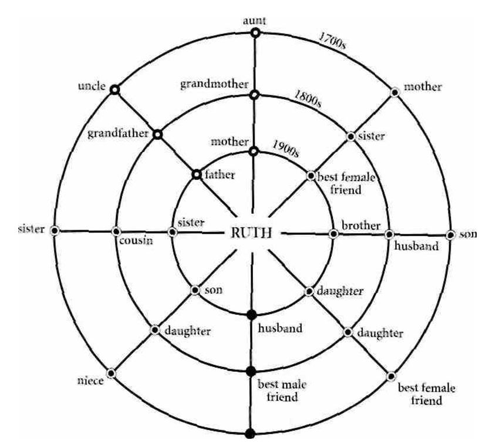

This is part three of a three part HTML version of the book by Michael Newton titled “Destiny of Souls”. The first part can be found HERE.
Destiny of Souls (Part 3 of 3)
Community Dynamics
Soulmates
Between the first and second council meetings is a period of renewal for the soul. As ethereal beings, our growth actually began in the mental realm of the spirit world with other souls before any of us incarnated. So while our internal being is uniquely individual, a vital part of spiritual life between incarnations is devoted to empathetic relationships with other souls. Thus, our development as souls becomes a collective one. Part of the expression of this collectivity is the association we have with these souls in a material reality, such as Earth. During reincarnation, the closeness souls feel for each other in a mental setting is severely tested by karmic challenges in our host bodies. This interruption of a blissful mental existence is one means by which spiritual masters expand our consciousness.
I have listened to many intriguing past life love stories of soulmates who come across time and space to meet each other in life once again. Here are a few examples:
- Where love was tormented; in a Stone Age culture by a lustful clan chief who took my client’s mate on a regular basis and then gave her back.
- Where love was deprived; from a woman who was a slave in ancient Rome serving meals to the gladiators, one of whom she loved. This captured fighter told my client he would love her forever the night before he was killed in the arena.
- Where love was cruel; to a stable hand flogged to death in a castle dungeon during the Middle Ages by a nobleman who caught his daughter and my client in their secret meeting place.
- Where love was heroic; when a Polynesian bridegroom drowned after saving his mate of a few hours—my client—after their canoe was struck by a sudden storm three centuries ago.
- Where love was deadly; when my client, a German husband in eighteenth-century Europe, stabbed his wife in a fit of jealous rage over her alleged affair. Falsely accused by local gossips, she died proclaiming her innocence, saying she loved only him.
- Where love was unforgiving; by a returning Civil War veteran whose lonely wife, my client, had married his brother a year after the veteran was officially declared dead.
All the couples listed above are happily married to each other today. Their past trials in each life prepared them for the next and strengthened their bond as soulmates. Past life age regression produces interesting information about coupling, but placing these clients between their lives provides them with far more perspective on these relationships.
There are many tests wrapped in the package of love. Mixed into those lives where we have had a long and happy life with a soulmate are those lives where we have destroyed the relationship or been devastated by the actions of our soulmate toward us. In the difficult lives with soulmates something stood in the way of an acceptance of love. Being with soulmates can bring joy and pain, but we learn from both. Always, there are karmic reasons behind the serious events involving relation- ships in our lives.
I had a client, called Valerie, who lived the life of a beautiful woman in China two centuries ago. In that life she rejected her primary soul- mate, the man she most cared about, because he argued with her and refused to feed her vanity while others did so. “Besides,” Valerie told me in trance, “he was so ungainly and rough-looking I was embarrassed to be seen with him because of what others might think. Out of pride, spite and feelings that I was being taken for granted, I married a handsome man who catered to my whims. I lost the happiness that could have been mine.”
In her next life, in nineteenth-century America, Valerie was the daughter of a Cherokee Indian chief who ordered her to marry the son of another chief as part of a treaty arrangement. This man repulsed her physically and made her life miserable after she assented to her father’s wishes. The warrior she loved in her own tribe was the rejected soul- mate in her China life. Upon returning to the spirit world after her death as an Indian woman, Valerie told me:
My love and I could have run away together. Aside from the great danger of this act, something inside told me I had to endure what my father had set in motion. I see now that it was a test. We have the capacity to severely hurt the person who loves us and also ourselves in the bargain. My life as a Cherokee woman was a reminder of my pride and vanity as a Chinese woman.
Being with the “wrong” person for a period in your life does not mean that time was wasted. The relationship was probably intended in advance. In fact, you might see this soul again in the spirit world in a different light. This was true of the man my subject was forced to marry in her Indian life. His soul belonged to a neighboring group to Valerie’s own. The soul of both men Valerie loved in her past two lives is again united with her in the twentieth century as her husband. I should add that Linda, who is Valerie’s best girlfriend today and a member of her own soul group, was the eventual mate of the warrior she loved in the Cherokee Indian life. After our session, Valerie grinned while telling me, “Now I know why I have always been a little uneasy seeing Linda around my husband.”
Before I go further, it would be a good idea to consider some ramifications involved in the magical experience of meeting a soulmate. When I first sit down with a client and we establish a rapport, I will ask about prior and current relationships that have had significance in their life.
In this way I acquire a feel for the cast of characters who exist in the play of their current life. Since I am going to be sitting in the front row as this play unfolds during hypnosis, I want a theater program.
Once in a deep trance state, many soul connections will become clear. People in my client’s cast may be lovers, devoted friends and relatives, mentors or associates. Our relationships with people take many forms in life and usually involve souls from other groups as well as our own. Usually, clients have a strong desire to identify these soul connections in their current life, although most already have a good idea who they are.
In a broad sense, love is endearment, which can take many forms in life. There is always a mental connection of one sort or another with a soulmate, regardless of the role they play. We connect with people on many levels for a multitude of karmic lessons in every life. When friendship catches fire it turns to love, but without abiding friendship deep love cannot thrive. This is quite different from infatuation, which exists on a superficial level where we have those nagging doubts about whether the connection has any real meaning. Without trust, intimacy suffers and love cannot grow. Love is the acceptance of all the imperfections of our partners. True love makes you better than you would be without that person in your life.
People often equate love with happiness. Yet happiness is a state of mind that must develop within you and not be dependent upon someone else. The most healthy kind of love is one where you already feel good about yourself and so extending your love to someone else is totally unselfish. Love takes hard work and continual maintenance. I have had numerous divorced subjects who learn that their first loves were primary soulmates. Things might have worked out if they both had tried harder.
On the other hand, there may be reasons why we might not meet our primary soulmate until later in life. Soulmates will from time to time separate for a life or two and not appear at all. “My soulmate and I were becoming too dependent upon each other, we needed to grow a while on our own” is a statement I often hear when soulmates are apart. Every era on Earth is different as to the sort of attachment and experience we will have with a soulmate. However, each life with them builds upon former lives.
We learn valuable lessons from broken relationships. The important thing is to move on in life. Some clients may tell me before their session that true love seems to elude them. After the session they usually understand the reasons behind this situation. If the right love for you does not come along, liberate yourself with the understanding that you may be here to learn other lessons. We mistakenly assume people who choose to live alone are lonely when actually they have rich lives that are calm, reflective and productive. Connecting with someone for whom you have no feelings just for the sake of not being alone is more lonely than being by yourself. As the song says, “Falling in love with love is falling for make-believe.” This kind of love is a fantasy because it’s driven by an addiction to have love at any price. If your soulmate is supposed to appear they will come into your life, often when you least expect it.
Over many years of exposure to souls in the spirit world I have developed a means of classifying soulmates. I find the position of souls within one of three categories bears upon their relationship to us in the drama of life. Our guides and beings who come from spiritual areas far from our own arc not included in these three divisions.
Primary Soulmates
A primary, or principal soulmate is frequently in our life as a closely bonded partner. This partnership may be our spouse, brother or sister, a best friend, or occasionally a parent. No other soul is more important to us than a primary soulmate and when my subjects describe lives with these souls as their mates most will say their existence is enriched beyond measure. One of the greatest motivations for souls to incarnate is the opportunity for expression in physical form. This is certainly an attraction for primary soulmates. They may change genders from lite to life together if they are more advanced souls. The average soul usually chooses one gender over another about 75 percent of the time. A primary soulmate should not be confused with the use of the term primary cluster group where many souls interact with each other as companions. People use the term “true soulmate” to define their primary soulmate, which is fine as long as this does not imply that all other soul companions are something less than true. The disagreements people in my field have about such terms are often more symbolic than literal, but I take issue with another concept related to primary soul- mates that bothers me.
I have been questioned on road tours about how my descriptions about primary soulmates and statements of soul duality relate to the theory of twin souls. My answer is, they don’t. I have discussed how we are able to divide our soul energy to live parallel lives, although most souls don’t wish to accelerate learning in this way. Also, I have stated this capacity to divide allows us to leave part of our energy behind in the spirit world as an exact duplicate while we incarnate. Almost all souls engage in this practice, which represents soul duality. My findings of primary soulmate relationships and the capacity for souls to divide have no correlation with the twin soul or twin flame theory. My truths are mine alone but to be blunt, I have never found a single piece of evidence in my research to support the concept of twin souls.
As I understand the theory of twin souls, you and your twin were created at the same moment out of one energy egg and then separated, not to be reunited with your twin—your true soulmate—until the end of your respective karmic incarnations. I remember clients, such as case 26, who said no two souls are alike at the moment of conception. Each energy particle is unique in its own right and created as a single entity. What is so illogical to me about the twin soul theory is why would we have a primary soulmate with whom we could not work out our karmic lessons with before reaching a perfected state? Primary, or true, soulmates exist to help one another achieve goals; they are not twins of ourselves.
Companion Soulmates
Our primary soulmate is our eternal partner but we have other souls in our primary cluster group who can be called soulmates. Essentially, they are our soul companions. These souls have differences in character and a variety of talents which complement each other, as my case histories illustrate. Within this cluster group there is usually an inner circle of souls who are especially close to us, and they play important support roles in our lives and we do the same thing for them. This number varies but the average client has from three to five souls in their inner circle.
Although the companion souls in a cluster group started together, they do have different rates of development. This has as much to do with drive and motivation as talent. Each soul does possess certain strengths that their companions can draw upon during group incarnations. As the group gets smaller, many go off into different specializations but they do not lose contact with each other.
Affiliated Souls
This classification of souls pertains to members of secondary groups outside our own primary cluster but located in the same general spiritual vicinity. As 1 mentioned in chapter 5 under figure 1, secondary groups around our own primary group can total up to 1,000 souls or more. Many of these groups work in classrooms near us. There are certain affiliated souls in other groups who are selected to work with us whom we come to know over many lives, while others may only cross our path briefly. Quite often our parents come from one of these nearby cluster groups.
In terms of social interaction in the spirit world, as well as contact during their physical incarnations, souls of one cluster group may have little or no association with many of the souls in a secondary group. In the larger context all souls in a secondary group are affiliated in one
way or another but they are not considered soulmates by my clients. Although they are not really companion souls, they do form a large pool of people available for casting calls by our directors in the life to come. A soul affiliate might have a specific characteristic that is exactly what is needed to bring a karmic lesson into your life. They are very likely to incarnate as people who carry strong positive or negative energy into their association with you. These decisions depend upon advance agreements between all parties and their respective teachers as to the benefits and disadvantages of certain character roles. The role can be very brief. The reader may recall the bus stop incident related by the subject in case 39. The assistance given to the woman in that case was more likely spontaneous, and I feel this subject was a nonaffiliated soul. 1 will cite an example of a brief positive contact reported to me by a subject who met a clearly defined affiliated soul:
I was walking alone on a beach, totally devastated after being fired from my job. A man appeared and we struck up a conversation. I did not know him and was never to see him again in that life. But that afternoon he came up to me with ease and we talked. I felt myself unloading my problems on this stranger. He calmed me down and gave me greater perspective of my job situation. After about an hour he was gone. Now I see he was an acquaintance in the spirit world from another group. It was no accident we bumped into each other that day. He was sent to me. However, it is with soulmates that we have our most profound contacts.
While considering this book, I was asked by people to be sure and give them one detailed case of a love story between primary soulmates. Being a romantic myself, this request was irresistible.
Case 46
There was an urgency to Maureen’s voice when she called me for an appointment. This was in the days before I had long waiting lists of over a year. Maureen lived close to my office in California and wondered if she might see me with a male friend who was on his way from New York to meet her for the first time. I asked her about this friend she had never met and the following story unfolded.
Three months before, on a computer website, a group of some twenty-five people interested in life after death formed what is known in computer parlance as a “chat room.” Conversations are initiated online in this way for people with similar interests. All this had to be explained to me because I have little knowledge of computers. Maureen said that she and a man named Dale found they were so closely attuned in their discussions about the topic of soulmates they felt connected in a strange way. She added that it was uncanny how Dale mirrored her thoughts. They decided to set up their own private chat room for further computer conversations.
Maureen and Dale learned that they were born only a few months apart fifty years ago in an area around San Francisco. They talked about their unsuccessful marriages and a mutual feeling of unexplained sadness about seeking something neither had ever found that would open their hearts. Their conversations mostly centered around life after death and Dale mentioned reading my work. Soon, the two decided to meet each other in California and see me for a combined regression session at the same time.
I agreed to an appointment date that turned out to be the day after they first met. They arrived at my office starry-eyed and I remarked that they were already in a trance state and didn’t need me. The moment they saw each other there was instant recognition. Maureen said, “The way we smiled at each other—the expression in our eyes— the sound of our laughter together—the connecting vibrations as we shook hands—created a euphoria that was so strong we were oblivious to everything going on around us.”
I will relate this case from the standpoint of Maureen, since she was my initial contact. During intake, I learned that there had been times in her life when she had a feeling of deja vu when she heard music from the 1920s or saw dancers do the Charleston wearing flapper dresses from that era. Maureen also told me that since childhood she had been bothered by a recurring nightmare of sudden death.
It is my custom to take subjects into the spirit world after death from their last life so they will not miss the natural wonders of normal spirit world entry. The advantages of this hypnosis technique are many, including learning if any disrupting body imprints from the last life have been carried forward into the client’s current physical body. To speed up this process by taking subjects directly into the spirit world, say from their mother’s womb, causes them to arrive disoriented. It would be like taking someone into the back of a house and asking them to describe the front. This accelerated procedure for spirit world entry would also cause them to circumvent a variety of orientation stations. These stops might be vital if the death preceding this entry was sudden and traumatic. By not skipping over death scenes, the client is actually better protected from painful physical memories.
Upon my direction to move to the most significant scene in her past life, Maureen took me to the events leading up to her death. This is often a signal of trouble ahead and past life facilitators must be pre- pared to deal with death scenes that can be horrific. What follows is a condensed version of Maureen’s story.
Dr. N: Are you a man or woman?
S: A girl, really.
Dr. N: What is your name?
S: Samantha. Sam for short.
Dr. N: Where are you and what are you doing at this moment?
S: I’m at my bedroom dressing table getting ready to go to a party.
Dr. N: What is the party all about?
S: (pause, and then light laughter) It’s… for me, today is my eighteenth birthday and my parents are giving me a coming-out party.
Dr. N: Well, happy birthday, Sam. What is the date today?
S: (after a brief hesitation) July 26, 1923.
Dr. N: Since you are at your dressing table, I would like you to look in your mirror and describe to me what you see.
S: I’m blond, with my hair up high tonight. I’m wearing a white silk gown. It’s my first real grown-up party dress. I’m going to put on my new white high-heeled shoes.
Dr. N: You sound smashing.
S: (with a knowing smile) Rick better think so.
Dr. N: Who is Rick?
S: (now distracted and flushed) Rick is … my guy … my date for tonight. I’ve got to finish my makeup, he will be here soon.
Dr. N: Listen, Sam, I’m sure you can talk to me while finishing your makeup because I don’t want to slow you down. Tell me, are you serious about Rick?
S: (flushes again) Uh-huh … but I don’t want to appear too eager. I’m playing hard to get. Rick thinks he’s the cat’s meow, but I know he wants me.
Dr. N: I can see this is an important party. I suppose that he will be honking soon for you to run out to his car?
S: (annoyed) Absolutely not! Oh, he’d like that, all right, but he will ring the doorbell in a proper fashion and the maid will let him in and make him wait downstairs.
Dr. N: So the party is some distance from your house?
S: Not too far—it’s in a posh mansion in downtown San Francisco.
Dr. N: Okay, Sam, now move forward in time to the party downtown and explain to me what is going on.
S: (bubbling) I’m having a wonderful time! Rick looks gorgeous, of course. My parents and their friends are telling me how grown-up I look. There is music, dancing… a lot of my friends are congratulating me … and (my subject’s face grows dark for a fleeting moment) there is a lot of drinking my parents don’t know about.
Dr. N: Does this trouble you?
S: (fighting off a new set of feelings by quickly running one hand through her hair and returning to the moment) Oh … drinking is always a part of these affairs—it makes us gay and carefree. I’m drinking too … Rick and some of his friends snuck in the liquor.
Dr. N: Move forward now to the next significant event this evening and explain what is taking place.
S: (subject’s face softens and her voice is more halting) Rick and I are dancing … he is pressed so close to me … we … are on fire … he whispers in my ear that we must get away from the party to be alone for a while.
Dr. N: And how does this make you feel, Samantha?
S: Excited … but something seems to be holding me back … I overcome it… I’m willful. I assume it’s a feeling of my parents’ disapproval… yet, I sense it’s something more. I shake it off in favor of the excitement of the moment.
Dr. N: Stay with this emotion. What happens next?
S: We leave by a side entrance to avoid being seen and go to Rick’s car. It’s a beautiful new red roadster convertible. It’s a marvelous night and the top is down.
Dr. N: Then what do you and Rick do, Sam?
S: We get in the car. Rick takes the pins out of my hair so it will blow free. He gives me a deep kiss. Rick wants to show off… we roar out of a long driveway into the street.
Dr. N: Can you describe the location of the road and the direction you take?
S: (now growing very nervous) We are going south down the Pacific Coast Road out of San Francisco.
Dr. N: What is the ride like for you, Sam?
S: (for one final fleeting moment the subject is free of her premonitions) I feel so alive. It’s a warm night and the wind in my hair blows the strands all over my face. Rick has one arm around me. He squeezes me and says I am the most beautiful girl in the world. We both know we’re in love.
Dr. N: (I notice my subject’s hands now start to shake and her body grows more rigid; I take her hand because I suspect what is coming) Now, Samantha, I want you to understand that as you continue to talk to me I will be with you every step of the way so I can move you quickly through anything that may happen. You know this, don’t you?
S: (faintly) Yes …
Dr. N: Move to the time when things begin to change on this drive with Rick and describe the action.
S: (subject’s entire body now starts to shake) Rick has been drinking too much and the road is getting more curvy. The turns are sharper and Rick only has one hand on the wheel. We are near a hilly section … close to the ocean … there is a cliff… the car is all over the road, (now shouting) RICK, SLOW DOWN!
Dr. N: Does he?
S: (crying now) OH, GOD, NO. HE WON’T! HE IS LAUGHING AND LOOKING AT ME AND NOT THE ROAD.
Dr. N: Quickly now, Sam—keep going.
S: (with a sob) We miss the next curve—the car is in space—we are crashing into the ocean … I’m dying … the water … so cold … can’t breathe … Oh, Rick … Rick …
We stop while I begin rapid desensitization of this traumatic memory while at the same time bringing Samantha’s soul out of her physical body. I remind her she has been through physical death many times before and she will be all right. Samantha explains that she is reluctant
to go because her young life was only starting. She didn’t want to leave Rick but the pulling sensation away from the ocean was “too insistent.”
When I began my research on the soul, I assumed that when two people such as Samantha and Rick died together they would also enter the spirit world together. I have found this not to be true in death scenes, with one exception. Small children who are killed with those who love them rise with that person. I will elaborate on this further in chapter 9 under souls of the young. Even primary soulmates killed at the same moment will normally rise up by separate routes on their own vibrational lines. I felt that this loss of companionship was a little sad until it was made clear to me that souls are met by their guides and friends from the spirit world at the appropriate time and place. Each soul requires their own rate of ascension, which includes orientation stops and energy rejuvenation, even if they are returning to the same soul group. This was true for Rick and Samantha.
Dr. N: Do you see Rick anywhere?
S: No, I’m trying to resist the pulling which wants me to turn around and face upwards. I want to continue to face the ocean … I want to help Rick.
Dr. N: Does the force eventually turn you around in the proper direction away from the Pacific Ocean?
S: (subject is now quiet and resigned, but mournful as well) Yes, I am now far above the Earth.
Dr. N: (this is a question I usually ask people) Do you want to say- goodbye to your parents before going further?
S: Oh … no … not right now … later I will… now I just want to go.
Dr. N: I understand. Tell me, what do you see next, Samantha?
S: The eye of a tunnel… opening and closing … coordinating its movement with my movement. I pass through and feel much lighter. It’s so bright now. Someone in a robe is coming toward me.
In Dale’s session, we learned he was Rick and his memories corroborated those of Maureen. While Samantha apparently lived a few seconds after the crash and rose out of the ocean, Rick’s soul bailed out while the car was still in the air. When I related this story to a Dallas audience a lady loudly scolded, “Isn’t that just like a man!” I told her that when the mind knows there is no chance of surviving imminent devastation to the body, souls may leave a moment before actual death. In this way the soul emerges with their energy more intact.
After the sessions with Dale and Maureen were completed, I met with these primary soulmates for a review of what we had learned. Maureen explained that whenever she drove down Highway 1, south of San Francisco, she would inexplicably get very nervous and apprehensive at a certain section on the coast road. Now she knew why. I hoped my deprogramming of her death scene in 1923 would also clear up the recurring nightmares of sudden death. A month later Maureen wrote and confirmed this nightmare was finally gone.
The wonders of synchronicity became evident in this case when Dale told me that one of the reasons he left the area where he was born was because he felt uncomfortable driving around San Francisco. You would think that the time we spend in the spirit world between lives should eliminate all residual effects of our past life experiences. In most cases it does but, as I have said, some people do carry physical and emotional body imprints from one life to the next. This is especially true if that imprint bears upon a particular karmic lesson in the life to come.
Why were these primary soulmates separated in their current lives for fifty years? To understand this we must start with the dynamics of their cluster group. Dale and Maureen come from a level I soul group. In varying degrees, these twelve souls are intense fighters and risk takers. Their guide regularly takes them to nearby groups just so they can see how other groups function with more peace and harmony. Dale and Maureen told me these visitations were interesting but they found peaceful souls “sort of boring.” Certainly, there are members of their group who are less restless, but Rick/Dale isn’t one of them. In his cur- rent life he was an Army Ranger who served three tours in Vietnam. “I didn’t expect to come back,” he told me, “and that would have been okay.” Because he likes living on the edge of danger, he left the service after the war because being a peacetime soldier was too dull.
After the car crash in 1923 the group’s senior guide picked up Rick, who spent considerably more time in debriefing and orientation than did Samantha. When he did return to the group, Rick was very chagrined. In a tender scene of energy caressing, Rick told his primary soul-mate how sorry he was for cutting off her young life. It was not clear from the session just how much they both knew about the possibility of the crash in advance. They have been lovers in numerous past lives, many involving turmoil. Although Dale and Maureen incarnated at the same time in this life and in the same place as their life in the 1920s, they were not destined to meet while young. The same sensory experience and emotional energy from this geographical location simply were part of the conditions for meeting much later in their current lives.
These soulmates both knew going into their current life that conditions would not be right for their meeting until many years had passed. Dale especially needed to feel the frustration of years of longing for the right woman to come along. He is not a careless, irresponsible man today. Samantha/Maurcen also required the maturity she did not yet possess in her relationship with Rick in the 1920s. Neither Dale nor Maureen take life for granted at this stage of their conjunction. They have both been through considerable heartache without each other. My work with this couple ended with both essentially making the same declaration. Maureen said, “We are completing our healing by a clear respect for the sanctity of life and importance of forgiveness. Now that we both know the meaning of loss, we are going to treasure the time we have left together in this life.”
Before closing this section on soulmates, I should add that many soulmates have a preparation class just before their next incarnation. A feature of this dress rehearsal with our guides is a final review of important issues in the life to come. One aspect of this prep class might also include two soulmates going off alone and sending visual images to each other of what they will look like in their new human bodies and under what circumstances they are going to meet.
In journey of Souls I wrote a chapter citing examples of this sort of preparation for embarkation. Soulmates don’t always get together just before departure. Then too, depending upon the karma involved, sometimes one soul knows more than the other about their future meeting and what that person will look like. Here is a short example of a soulmate discussing meeting his future wife:
I was permitted to see my wife in the screening room for the next life. She was an attractive aerobics instructor who I would meet in a gym. I studied her body and facial features carefully because I didn't want to mess up our meeting, as I had done in my prior life. The scent of her body bathed in sweat was embedded in my mind ... her gestures . . . her smile . . . and most of all her eyes. The moment I saw her in this life it was like two magnets pulling together.
Linkages Between Spiritual and Human Families
As a rule, members of the same soul group do not return in their next incarnations as members of the same genetic human family. This means, contrary to American Indian tradition, a grandfather’s soul would typically not return to the body of his grandson. I have emphasized the opposition souls have for genetic reincarnation in chapter 4 under soul division and again in chapter 5 with DNA. It is limiting and even redundant for souls who wish to learn fresh lessons to return to bodies having the same heredity, ethnicity, cultural environment, and perhaps the same geographic setting as they had in a former life. By incarnating in different families around the globe in each life, souls are able to take advantage of the great variety of human body choices. This variety is what gives depth to our incarnations on Earth.
In unusual cases, our guides may be indulgent with souls who have strong feelings about unfinished karmic business within a particular family and wish to return to the same family. These souls may be given another crack at addressing a serious wrong done to them, or to correct harm they have caused another in the family. They could return as chil- dren of a new generation, but within the same lifetime of those people who were involved with the karmic events requiring their attention. I want to stress these occurrences of genetic reincarnation for karmic purposes are rare. It is far more likely the soul would return to another family with peripheral associations to the family of their former life to redress a serious wrong. Nevertheless, this too would be a very unconventional decision, especially in cases of personal injury to the soul, because it smacks of revenge.
Although souls typically do not incarnate in the same hereditary family they had in past lives, members of the same soul group most definitely choose new families where they can be together. Members of soul groups tend to be associated in each life by blood ties and geo- graphic proximity. What sort of roles do they choose? I’m sure readers of this book could sit down and draw up a chart showing significant members of their family, friends, lovers and even acquaintances to see who might be the most likely candidates for their own soul family.
In chapter 5, figure 7,1 charted the color auras of a soul family in their current life. Figure 10 is a diagram showing how a group of souls incarnated into human families in order to stay connected to one another over the past three centuries. My central subject in this diagram is Ruth. Please note that from one century to the next, the family heredity is completely different despite the genealogical overtones of my chart. Figure 10 is an abbreviated version of Ruth’s spiritual friends in human bodies. There are six souls listed from her own cluster group and two from an affiliated group to be found in each century.

This webbed diagram illustrates primary, companion and affiliated soulmates who have incarnated into bodies related to the lives of the subject, Ruth, over the past three centuries. Each generational line outward from the center represents the same soul in different bodies.
Ruth appears in the center of the diagram and each of the connecting lines from the center outward represents the same soul assuming different family roles relating to Ruth from the twentieth century back to the eighteenth century. We can see that Ruth’s primary soulmate in this life is her husband. In Ruth’s last life, this soul was her best friend, and in the life before, her wife when she was a male in the eighteenth century. Ruth’s primary soulmate has a halo color tinted with protective yellow while Ruth’s own halo is a mixture of white and blue tints, indicating clarity and love of learning. These primary soulmates have mated on a fairly regular basis for some 7,000 years since their first life together.
Besides the companion souls in Ruth’s soul group, I have also shown two affiliated souls from a nearby group. These souls are my subject’s current father and mother. The roles they played in the nineteenth century were her grandmother and grandfather respectively. In the eighteenth century, these same two souls were Ruth’s aunt and uncle. Ruth’s chart represents one typical client. Every soul group has its own subtle variations of human family preferences. 1 had a client the same week I saw Ruth who is extremely close to her mother. The mother’s soul was a member of that client’s soul group and was her sister in the life before.
Grandparents often have a great influence in our early lives as non- judgmental confidants. I often find that a favorite grandparent in this life was a sibling or best friend in a former life. The social dynamics of intimate human contact are so powerful that in most of my cases the roles souls play in our lives and we in theirs directly bear on a group’s karmic lessons. When we are hurt by someone close to us in life, or caused them hurt resulting in alienation and separation, it is because they volunteered to teach us lessons of some sort while learning lessons themselves. These lessons better prepare both parties for future relationships, as case 47 will show.
I should also point out that peripheral roles in our lives by hundreds of affiliated souls in nearby groups may go on for generations. Because of space, I did not list all these souls on Ruth’s past life chart in figure 10. An example of one important affiliated soul not included here is a soul called Zenda, who was Ruth’s favorite teacher in the sixth grade. We found that in the last century, Zenda was a supportive next-door neighbor. In the eighteenth century Zenda was the owner of a business that employed this subject. The web design of figure 10 is appropriate when we consider all the interrelationships of people whose own lives are woven into our own.
The psychological profiles of primary, companion and affiliated souls in a client’s current and past lives is very instructive when detailed in a genealogical-type chart. In each of the three past centuries we found another leading actor in Ruth’s lives who was from an affiliated soul group. There was not space for her in figure 10 either. This soul, known as Ortier, assumed roles involving jealous, unemotional and manipulative people. She was sent to test Ruth’s trusting nature so she would learn to recover more quickly from the hurt and deal with it in a healthy manner. While this same individual would also demonstrate good qualities in human temperament, the negatives were very constant. In Ruth’s current life, Ortier is her mother-in-law. In the life before, this soul played the role of a close friend who betrayed her. There is evidence the karmic cycles with Ortier assuming roles as a protagonist will end soon for Ruth.
Ruth is a warm, passionate and tender person. Her primary soul- mate has aspects of these qualities but is also tenacious, brutally frank and decisive. Many other souls in figure 10 are rather reserved and quiet. They also have character similarities of perfectionism and stub- bornness.
One soul in the group is sloppy, easygoing and more complacent than the rest. He is my client’s brother, Andy, in her current life. This soul volunteered to be Ruth’s husband in the last century as a change of pace for her. During that life, Ruth’s primary soulmate chose the role of a male friend. They were so drawn to each other they had an affair that almost destroyed Ruth’s marriage with Andy. She finally realized in this past life that Andy, an uncustomary mate to be sure, was a person who opened her mind in a relaxed way to a more optimistic existence where she would learn to appreciate each day and see more humor in life to complement her naturally warm nature. Although not a great love match, Ruth found tolerance and playfulness with Andy as her husband in the nineteenth century. Meanwhile, her primary soulmate was coping with a new challenge of being married to someone else whose character was much more confrontative than Ruth’s.
I don’t wish to leave the impression that not being married to your primary soulmate is a formula for discontent. As a matter of fact, I have had clients who have deliberately alternated mates in a series of lives with three or four souls from their inner circle to meet certain challenges. Although the souls of Ruth and Andy tried this for the first time in the nineteenth century, the results were mostly positive.
Reuniting with Souls Who Have Hurt Us
Now that we have an idea of the roles different soulmates can play in our lives, I want to discuss a specific aspect of these associations that is of interest to people. I am often asked what it is like to see someone in our soul group right after a life where they have hurt us in some way.
The philosopher Heidegger said, “No one else can love for you or feel your pain.” This statement may be true on Earth, but not in the spirit world. Souls are capable of getting into the minds of their friends and feeling just what they feel. They do this for reasons of empathy, a desire for understanding and to evaluate the disruptive behavior of each other in the last life.
In case 47,1 have chosen a man who had a rough start in his last life with an abusive, tyrannical father who was never satisfied with anything he did. For simplification, I will use the Earth names of these players with my subject being Ray and his father as Carl. Ray was a troubled boy who grew up lacking self-worth and his entire adult life was spent trying to conquer these negative feelings. Ray hid his sensitivity from others by building protective walls around himself. What happened when father and son met again in the spirit world is the sub- stance of this case.
We are going to sit in on what Ray called “a motivational critiquing session” with Carl. The opening scene begins innocently enough with the usual greetings extended to an arriving soul by members of a cluster group. It might be helpful to refer back to figure 3 on page 143 where I have diagrammed the soul group as they would appear on the upper half of a clock. I employ my “clock technique” with incoming souls to help me determine soul position as my hypnosis subjects identify members of their cluster group.
Case 47
Dr. N: As you draw closer to these souls, how are they arranged in front of you?
S: Mmm … sort of a half circle with me coming into the middle.
Dr. N: I want you to imagine that their positions conform to the face of a clock. You are in the center, where the hands of the clock are located. The person directly in front of you would be at 12 o’clock. The one on your left is at 9 o’clock and the one on your right at 3 o’clock. Do you understand?
S: Yes, but my guide Ix-Ax is behind me right now.
Dr. N: That’s usual at this first reunion, Ray. We will consider him to be between 7 and 5 o’clock. Now tell me, from what direction on the face of our clock does the first person come forward to greet you?
S: To my far left—at 9 o’clock.
Note: The first person to come forward and greet us after a life is always a soul of significance.
Dr. N: That’s fine. Does this soul appear as a male or female to you, or is the soul genderless?
S: (tenderly) It’s my wife, Marian.
Dr. N: And what does she do right now?
S: Cups my face in her hands … she gives me a soft, gentle kiss and then hugs my head.
Each spirit has their own style of greeting for the incoming soul. After Marian, Ray’s grandmother wraps her energy completely around him lovingly, as a cloak. Then, his daughter Ann comes forward. Part of her energy is still on Earth because her current incarnation is not yet complete. Despite this reduction in energy mass, Ann clasps Ray in an exuberant rocking motion while laughing at his unsettled demeanor.
As we progressed around the clock, I noticed that my subject grew more uneasy. I suspected an important member of the group was not yet in Ray’s line of sight. As we neared the end of the circle of souls, the mood began to change when Ray encountered what I call “the hunkering- down syndrome,” which is caused by one soul hiding behind another. Sometimes the act is playful, rather like hide-and-seek, but not in this case.
Dr. N: Is that everybody?
S: (twisting uncomfortably in my office chair) No … I see a shadow behind my Aunt Bess.
Dr. N: (after calming and reassurance) Ray, tell me exactly what happens next.
S: I see a flash of light now. (with recognition) Oh … it’s my father…
Carl. He is hiding behind the rest. He wants to be last. He is avoiding me. He is embarrassed at the lightness of the moment—all the hugging, laughing and excitement going on. My father doesn’t feel like participating in this right now with me. (darkly) Neither do I.
Note: A little further on in the session I make the transition back to the soul who was Carl.
Dr. N: I want you to move forward to the time when you talk to Carl. Try to give me the details of just how your conversation with him unfolds.
S: We soon get to this… the critiquing of what took place and why … talking about our attitudes and judgments. Marian and Ann are there, and Carl is still chagrined. He starts by saying, “I was too severe with you as your father. I know what we planned got out of hand. That life—it just got away from me …”
Dr. N: What does this admission mean to you, Ray?
S: (with a sense of revelation) Carl’s soul is not like the alcoholic, abusive man who was my father … oh, I see some similarities … but his innate goodness was shut down. He was not able to control the obsessions of this body.
Dr. N: Forgive me, Ray, but aren’t you making excuses for his performance? I mean, Carl had lessons to learn too, didn’t he?
S: Okay, he volunteered to join with a body prone to emotional out- bursts. Besides the plan of making things deliberately hard for me, he wanted to see if he could better moderate a body prone to violence. Carl’s previous life was one of excesses. He admits this last life we had together did not work out well. Carl did not do the right thing by me or himself.
Dr. N: (pressing) You still don’t think Carl is excusing what he did to you as your father because of his body type?
S: No, you can’t get away with that here. Carl is explaining that he failed me in many ways this time around, but he learned from the life and he asks me if I did too. (pause)
Dr. N: Please continue with this, Ray.
S: (a deep sigh) 1 can see all his anger is gone and this is strange to me now because I haven’t yet gotten used to his real self… but it won’t take long.
Dr. N: As you consider all this, Ray, what negative inclinations does the soul of Carl have which carry into his incarnations?
S: He knows it is the desire to control events and people around him. His past life as my father fed into those tendencies. Both of us have trouble in life with confrontation. This is why we work so well with Ann and Marian. They seem to diffuse life’s frustrations so much easier than we do.
Dr. N: Let’s return to the circumstances which led to your need to be under the control of a stern father who was supposed to make things deliberately hard. Even if Carl had not gone overboard in his assignment, I don’t understand why you volunteered to be his son.
S: (laughs) For that you would have to know our guide, Ix-Ax. He uses humor rather than being overly preachy. He doesn’t push us hard as an authority figure because Carl and I react badly to a firm hand. Ix- Ax nudges us while letting us believe all the ideas we get come from our own perceptions, (pauses) Ix-Ax allows me to think I am getting away with something and then he tweaks my conscience. He is a coach, not a director.
Dr. N: Well, I’m glad to get that information about Ix-Ax, but how does all this relate to you and Carl and this past life of a damaged relationship between you?
S: (patiently) In my life before the last one with Carl I was an orphan and got into some bad habits. I lost my real identity in that body. It was a wake-up call.
Dr. N: In what way?
S: I had no directional support as a kid. My mother had died. Being alone as a kid can make or break you. The trouble was… as I grew stronger and more self-reliant, I had little concern for others. I created a life of taking and giving back little. I felt people owed me.
Dr. N: Look, Ray, do you have to go to such extremes? How about having a loving father in the life you planned with Carl to compensate for the one before as an orphan?
S: (shrugs) Too easy. After my life as an orphan, Ix-Ax asked me, “I suppose now you are ready for a life of being pampered by indulgent parents?” I said to him, “Say, that doesn’t sound bad at all.” Then he added, “Shall we also arrange for you to be an only child of wealthy parents?” We had some fun with this scenario for a while with Carl entering into the discussion with a few quips about wanting plenty of money as my rich father in order to play the horses. He loves horses.
Dr. N: So how did you and Carl finally come around to making the decision to have a stressful life together?
S: Ix-Ax knows us so well. I am too far along for a soft-soap approach to life. In the end we asked him for assignments together in a difficult environment.
Dr. N: Didn’t things go from bad to worse for you as far as loneliness and alienation in your last two lives? I’m wondering if you and Carl learned anything from having such a poor relationship as father and son.
S: (pause, while rubbing his hands together in thought) Yes and no. It’s true I let my alienation in both these past lives serve as an lack of real progress but at least I had a father in my last life who didn’t leave. I did better with Carl’s abuse than total abandonment in my life before Carl, when I was an orphan.
Dr. N: That’s not much of an endorsement. Was the soul of Carl your father in your life as an orphan?
S:No.
Dr. N: What was your primary lesson in the last two lives?
S: To keep my identity, no matter what the adversity. This will make me a stronger soul.
Dr. N: I’m sure it will, Ray. But I should think you might consider slowing down now and then and take easier lives as a change of pace. Would it be so bad to catch your breath and build a stronger foundation for identity retention in future bodies?
S: (clearly upset with this suggestion) No! 1 told you I can do this and Ix-Ax knows it, too. My strength is perseverance in fighting adversity. My life with Carl as my father was a recovery test from the previous life as an orphan and it was not a failure for me. (forcefully) I learned plenty for the next life and 1 tell Carl this to make him feel better.
Dr. N: How do the two of you bring all this to some sort of resolution in the spirit world?
S: (in a softer, more contemplative tone) When we are alone we agree to exchange the energy of our thoughts and all the memories of that life together.
Dr. N: Is this the full mind exchange I have heard about?
S: Yes, every particle of my identity as Carl’s son in that life is transferred to Carl while he projects all his memories as my father to me. It’s very subjective—and that’s good. In my group we call this passing the cup of sorrows.
Dr. N: And is each perspective totally honest? S: There can be no deception here.
Dr. N: Does this exchange last long?
S: No, the transfer is brief but complete. Then we know all the trials and burdens, pain and anger—the drives—from the other’s perspective because it is like actually being inside their old body. We become the other person.
Dr. N: Does this mind exchange bring forgiveness?
S: It is so much more than that. It is an indescribable melding of two minds. We can both experience the circumstances which led the other to make certain choices. I feel Carl’s lack of fulfillment and he feels mine. Once the exchange is made, it cuts so deep forgiveness toward another isn’t necessary. You forgive yourself and then we heal each other. Understanding is absolute. We will try again in a different life until we get it right.
After some initial awkwardness in the spirit world following their last lives together, Ray and Carl were relaxed and happy once again in their soul group. This does not mean that Carl’s conduct was quickly exonerated in the spirit world. During his life review and evaluation, before he saw Ray, Carl was keenly aware of the excessive pain and hurt he had wrought upon Ray. There are two forces at work here. The first is the potential subversion of the soul’s full character by the biophysical attributes of a host body, along with the effects of specific environmental influences. The second factor is the role they were each assigned to play out in the stream of karmic causation.
Each life is a piece of fabric which makes up the whole tapestry of our existence. If a family member or friend is harsh and uncompromising, or perhaps weak and emotionally distant toward us in life, we are only seeing an external portion of the entire true character of that soul. Role assignments in life all have purpose. If you grew up with a particularly difficult parent, as Ray did with Carl, ask yourself this question: What did I learn at the hands of this person that has given me wisdom I would not possess if he or she had never been in my life?
Ray has had his difficulties in his current life with chemical dependency and obsessive behavior. Yet, at age 45, he is drawing on his inner resources and turning things around, from what Ray has told me, get- ting in touch with his true soul identity in our session together has been very helpful. The soul of Carl is now my client’s older brother, who was not easy on Ray when they were growing up. Many of the same relationship patterns are being played out today as in the past. Even so, these two souls have been far more engaged with each other as brothers than they were as father and son.
By not burying unpleasant memories in this life, Ray’s soul lives in a mentally healthier body. This time around the soul of Ann, a principal player, is Ray’s mother rather than a daughter. She provides a different generational dimension to his current life. Gershen Kaufman has written that “shame is a kind of soul murder.” One of Ray’s issues is the handling of shame. Shame brings a numbness to our minds because it ushers in feelings of nonacceptance, of being no good and having no validity. It may be so overpowering as to preclude any soul progress in a human mind that has shut down. However, Ray is an unusually determined soul who, as we have seen, won’t give up these hard lives for an occasional rest. He grows stronger by building on each hard life.
Case 47 illustrates that there are souls who continually ask for body types that challenge their weakness of soul character. Both Ray and Carl are souls who easily fall into addictive habits with certain types of body chemistry. Why do they continue to ask for these bodies? They do it for practice. Any obsessive mood-altering behavior is a fix and Ray is determined to conquer this before moving on. I know this soul is making progress. After two failed marriages, Ray told me he has met the woman of his dreams, but he had to be clean of drugs and alcohol to appreciate her. We learned his wife-to-be is the soul of Marian.
A final word about the hunkering-down syndrome, where a returning soul might not initially see a group member clearly. When this happens to someone sitting in my office it may be that the soul who is hiding from a client’s conscious awareness is going to have a profound future impact. I recall a young widow who came to see me while still grieving over the recent loss of her husband. We had reviewed all the members of her soul group, including the soul of her departed husband. He embraced her in an emotional scene where he told her to stay strong and everything would turn out all right. Then she said, “Ah, there is one more. A dark figure, bending down behind the others. Oh—it’s the soul of my future husband. I’m sure of this—but we haven’t met yet in this life. I’m not supposed to know who he is right now because it would spoil the spontaneity of our meeting.”
Interaction Between Soul Groups
I have said that almost all the younger soul groups remain in their own study areas. Particularly with the level I and lis, their designated spaces are sacrosanct with self-imposed boundaries between classrooms. The underlying basis for these conventions is that all souls have respect for the privacy of the work going on in other study areas. Spiritual class- rooms are not like earthly models where we need excuse slips for absences. Souls are free to avoid study engagements with their own classmates at any time. If a soul wants solitude, or to be involved in some private work which they feel is beneficial to them away from their companions, they are free to do so as long as this activity does not interfere with the work of another group.
I find that souls are not forced to study and some take long periods of rest. Even so, most souls 1 talk to feel left out if they are not with their classmates in some ongoing project. It is the excitement of mastering certain skills that drives them. Thus, most souls don’t wish to get involved in the middle of projects by other groups. I find that no two groups in a vicinity are at exactly the same level in all departments of study. So regardless of your developmental level, it is not all that easy to visit another classroom and gain something from a lesson in progress.
Visits between soul group members are selective and designed for specific reasons. Since such visitations are by invitations emanating from teacher-guides, they are the exception rather than the rule in the spirit world. There are groups who consort with sojourners while oth- ers don’t appear to see souls from other groups at all, except when they are away from their study areas. When souls arrive near the end of their level II training, they begin to push very hard. It is during this time when my subjects most frequently talk about the opportunity of visiting other cluster groups. The client in my next case had the following to say about one of his visits. Dr. N: Why did you want to visit this nearby soul group?
S: I come from a less serious group than many. I like to visit with this cluster because they are slightly ahead of my own. It helps my game
of life to be around better players. Most of them arc about ready to move up into independent study and they are very determined. I tell them a few jokes about my group to loosen them up and they give me practical ideas.
Dr. N: Do you visit with them often?
S: No, we know how busy everyone is and I respect that. I don’t like to interrupt them too much. Dr. N: Tell me about your last visit and what took place.
S: (pause) They were in the middle of a heated discussion. One of their members, called Orick, was going over a dream sequence he had from an incarnation that recently ended. Orick thought they might like to know about this incident.
Dr. N: An incident involving a dream by Orick when he was last in human form on Earth?
S: That’s right. Someone out of incarnation in his group had sent Orick information while he was asleep that his human mind misinterpreted.
Dr. N: Well, was that the fault of the sender—this discarnate—or Orick?
S: You must understand the group I am visiting are pros at this sort of thing. They don’t like mistakes. They are a very serious bunch.
Dr. N: Please go on. What did you learn from the retelling of this incident by Orick about his dream?
S: The morning after his dream on Earth, Orick said he went into deep meditation to try and sort out the message he had received during the night. I guess it was too muddled in his human mind to make much sense. Orick was lightly chiding his friend—the one who sent the message—that he ought to perfect his message-sending through dreams.
Dr. N: What did the sender of the dream say to Orick?
S: He said in an offhanded way, “No, you just translated the infor- mation I sent you in an imperfect fashion and then you acted wrongly on your own misinformation.”
Dr. N: And what did the group you were visiting conclude from this discussion between Orick and his friend?
S: I think everyone decided that even though two souls are very close the imperfect aspects of the receiving human brain can screw up any transmission. The safe thing for a soul in the spirit world to do is transmit more than once and not rely on one medium, such as the dream state. Also, to keep the messages short and very clear.
Dr. N: So, this was a productive visit for you? You learned some- thing?
S: I always do. Mostly I keep quiet and listen with this particular group. The discussion about transmitting spiritual messages was useful to me and I took what I learned from this visit back to my group for study.
Those groups who are uncomfortable with ordinary visitors may welcome an advanced specialist or high-profile soul unique to their experience. I presented an example of this sort of visitation under colors of visitors in groups in chapter 5. Yet even the clannish groups seem to enjoy socializing out of their study areas. I have already reviewed the community areas where large numbers of primary groups meet to engage in conversation with each other. To many souls this practice is considered recreation.
Because many souls do become restless at times with their formal work, instructor souls often arrange for gatherings at the community centers to hear guest speakers. The visiting speakers at these functions give souls a break from their regular teachers, which allows for different perspectives with topics of general interest to the soul groups. These messages could center around how to appreciate others, the benefits of kind acts, loyalty and integrity, and how to be generous with the gifts each of us possesses. I know the expressions of all these moral sentiments doesn’t sound much like recreation, but the speakers spice things up with personal anecdotes and many allegories where they draw parallels to their earthly experiences. There are also other subtle conversations here between masters of their craft and members of an audience of souls that my subjects are unable to translate for me. I have a quote which gives the flavor of such a gathering:
Our training is helped by the roving guest speakers. They are different in approach and character from my own guide, and that’s helpful. There is one woman called Sha- lakin whom I adore. She comes to our center once in a while and I never miss her. Her particular skill is the ability to take any problem and quickly boil it down to the heart of the matter. She can take a complex idea and get through to me so quickly I somehow know I am going to respond much more effectively the next time it confronts me in life. She tells us to listen to people we don’t particularly like on Earth because we can learn something from everyone.
Recreational Activities in the Spirit World
Leisure Time
This section is dedicated to all those who are afraid that life between lives involves only work and no play. The term R & R, rest and recreation, is quite appropriate in the spirit world and I have listened to the statements from hundreds of clients about what they do outside of their training areas. After physical death our spirit continues to carry all the fond memories of earthly life. The poignancy of tasting food and drink, touching human bodies, the smell, sights and sounds of walking the deserts, climbing mountains and swimming in the seas of Earth remain with the soul. An eternal mind can reminisce about the motor movements and sensory pleasures of a human vessel and all the feelings it generated. Thus, it is natural souls would want to maintain these planetary memories by re-creating their former bodies in the spirit world. After all, it was here (in the spirit world) where the conceptual design and eventual energy models for physical organisms began In this section, I will also discuss soul travel to Earth between lives as a part of R & R. Chapter 8 will deal with souls who travel to worlds other than Earth. These soul trips could be construed as “working vacations” for exploration and study, or they could be devoted exclusively to leisure time. The allocation of study versus leisure time on physical and mental worlds away from the soul’s home is flexible, depending upon the primary purpose of the trip and the mood of the soul. Since I am devoting this section to soul recreation, my case examples involving trips to Earth and other activities in the spirit world will be confined to soul entertainment.
Recess Breaks
My subjects differentiate between the shorter breaks from soul study and those involving more recreation time. This is an example from a male client relating a typical intermission from class work:
There are ten people in my group and we separate from each other during the short breaks. I like to wander about, away from our enclosure. 1 might go down the hall and out into an open area where people from many other groups are milling around and talking. What I like about these casual rest periods is the spontaneity. We can easily meet someone who we might like to be paired up with in some way in a future life. It isn’t that we talk shop at these breaks as much as the exposure of just meeting and getting to know other sorts of souls. Of course, there is always the fun of bumping into someone from a past life who we haven’t seen in a while and comparing notes.
Another subject had this to say about lesson breaks with members of her group who are inclined to choose female bodies:
We go to a space surrounded by a lush garden of flowers. It has a beautiful pool with vibrating, restorative, liquid energy. It is shallow so we can wade rather than actually swim. We float around as water nymphs and tell each other funny stories about our lives.
In those groups where souls are not yet fully androgynous I do hear about gender-oriented recreational activities. This does not surprise me. As I have said before, the younger souls are inclined toward one gender when they incarnate on Earth. One subject said to me, “During our picnics at the breaks, my women friends and I flirt with some of the male-oriented souls from other groups close by us. We threaten to become their wives in the next life if they don’t behave.”
Quiet Solitude as R&R
Because the work activities of soul groups is demanding, there are souls who prefer settings of solitude during their off time. We all know people who prefer to be alone rather than socialize. Many of us become so distracted by the hectic roles we play in life, it is difficult to learn who we really are. Under case 22 in chapter 4,1 referred to souls of solitude, who require a lengthy period of adjustment alone after particularly hard lives. These souls are not usually the monastically-oriented beings who require steady doses of solitude throughout their existence. Certainly, most souls rejuvenate well with some solitude. Yet I have encountered certain souls who seem to require regular periods of seclusion mixed with group class time. I consider many souls of this type to be ascetics. I feel the appeal of periods of quiet time represents a form of mental contemplation similar to that experienced from abbeys to ashrams on Earth where we focus on spiritual principles. A client made the following symbolic statement:
I am called the Wreathweaver by my group. I like to be by myself so I can see myself. Within my quiet time, I construct circular bands of energy—weaving them together as a tapestry of my lives and that of my six closest friends. I display the diversity of our life experiences by weaving different materials—attributes of energy— which represent the trappings of people and events. To execute this properly I must have total concentration.
My subjects say that the desire for time alone in the spirit world comes from an intense need to dwell within the sacred confines of pure thought to try and touch the Source from which they sprang. Many say they have profound moments of success but it is intense work. I have found that some of these ascetic souls have trouble participating in group activities and will shun recreation periods because they prefer contemplation. Despite their detachment during training, down the line these souls are capable of making great contributions in their specialty areas.
Going to Earth for R&R
There are souls who come to Earth as invisible beings between lives so they can re-experience former physical environments. The only problem with this is they must return to chronological time, which means these souls are caught up with change since they were last here. In chapter 3, the soul in case 17 described returning to Earth on a vacation trip and running into other discarnates, some of whom were disruptive. This factor, plus not wanting to dilute old, original memories, can dissuade souls from coming back to Earth between lives. There are souls who find this sort of nostalgic trip to be unrewarding and even frustrating out of a physical body. This situation does not apply to those souls who come back to comfort and aid loved ones and are not motivated by a desire for recreation.
From what I have observed, it is change that seems to have the biggest impact on the vacationing soul. Many won’t return to Earth for recreation between lives because of the day-to-day modernization of the communities they once occupied. In dimensions away from ground zero on Earth, images of places and the people who once lived here are frozen in a timeless vacuum that never vanishes from existence. The patterns of energy particles representing moments in human history can be retrieved at will by souls who are out of absolute physical time.
Nonetheless, there are souls who still want to come back for planetary visits, despite the negatives. My next case is one of those souls who enjoys roaming around his old haunts on Earth. Out of a multitude of possible case selections, I chose the next case for personal reasons. The area described is where I grew up. Case 49 and I participated in the same activity, which even overlapped in time during the last few years of his life, ending in 1948. As I consider this case, I wonder if I will be imitating this soul’s spiritual recreation myself in the twenty-first century?
Case 49
Dr. N: What do you find most enjoyable as a recreational activity between lives?
S: I like to come to Earth.
Dr. N: Where do you go?
S: I loved the beaches of southern California in my last life. So I return to sit on the sand in the sun, walk the beach among the seagulls, and be in the surf. My passion are the waves—the feeling of movement and the crashing foam.
Dr. N: How can you fully experience all this at the beach without a physical body?
S: I take just enough energy with me for the experience but not enough to be seen.
Dr. N: I have been told that on many recreation jaunts a soul might take 100 percent of their energy. What do you do?
S: We don’t do this on Earth because it would not be fair to scare people. I bring no more than 5 percent, usually a bit less.
Dr. N: Are you capable of riding waves?
S: (laughing) Absolutely, why do you think I come? I also soar with the birds and play with dolphins.
Dr. N: If you were a spirit sitting on the beach enjoying the sun and I walked past you, what would I see?
S: Nothing, I am transparent.
Dr. N: Would that mean if I were strolling along the beach would I just walk through you in your space without sensing your presence?
S: Well… a few people might sense something but they would probably dismiss this as a figment of their imagination.
Dr. N: Could you go to other physical worlds to experience what you have described?
S: Yes, but I loved this area and I have been here in more than one life. That is why I return. For me the sea is part of my soul. I could go to other water worlds, or create all this in the spirit world, but for me this would not be quite the same thing.
Dr. N: Where are your other favorite spots to play based upon your former lives on Earth?
S: Around the Mediterranean and Aegean Seas.
Creation of Earthly Settlements
The Apaches believe that “wisdom sits in places.” Since it is possible to create any reality in the spirit world, it is not unusual that some souls wish to spend their off periods in the houses where they lived on Earth. Frequently, these souls prefer to suspend the timeline where they lived in a former life and not expose themselves to huge increases in population and alterations of their old neighborhoods. This is like freezing moments in past time, which souls who wish to spend their recreation time in the spirit world can do.
These souls may want to mentally construct an exact duplication of familiar settings around where they used to live, such as the surrounding countryside, parks and streets, and any structures which remind them of their old hometowns. They only have to conjure up these places from memory and use directed energy beams for the images to appear. To fully implement these projects created out of pure energy, the assistance of others may be required. Once in place, they will disintegrate only when the soul loses interest.
The bodies souls had during the time when they lived in certain locations are also re-created by them whenever they are in residence. Souls may wish to add their old pets to these scenes, which I will explain more about in the section on animals. I must say that many of the souls who appreciate this sort of recreation are fun-loving and humorous. They might ask their past life friends to come and socialize with them at re-created geographic locations of mutual interest. Soul-mates have priority here, as the next quote clearly indicates:
My wife Erika and I loved the small house we built in the Bavarian Alps. We wanted it again after death and so we built it with the help of our energy teacher. He thought it was good practice for us. The model was in my mind and he saw it perfectly before we began the energy transmissions. Additional touches of the exterior came from our friends Hans and Elfie, who lived near our house in Germany and are with us now. The interior furnishings Erika and I did without help. I created my old library and my wife set up her kitchen just as it was. It is wonderful to be alone again with her in this way.
People are curious if souls can have intimate physical relations with their re-created bodies. If good sex originates in the mind, then the pure soul has all the benefits without the physical inhibitors. No self-pretense is possible in the spirit world. From what I can gather, there is a loss of full tactile sensation by not being within a dense physical body having a nervous system. At any rate, in the spiritual re-creation of a human body, the lack of full sensory sensation is more than made up for by the erotic power of two minds that are completely joined.
Love is a desire for full unification with the object of that love. Spirits have the capability between lives of expressing love even more intimately than on Earth. Even so, some souls are still motivated by establishing the scenes of former lives where their love blossomed. Re- creating these scenes is meaningful to partners. After all, a major incentive for many souls to reincarnate is the pleasures of physical expression in biological form.
Animal Souls
I remember delivering a speech in downtown New York City and during the question and answer period a woman in the front row issued me the following challenge: “Do you believe cats have souls?” I responded with, “Are you a cat owner?” While the woman hesitated for a moment, a friend sitting next to her smiled and held up four fingers. Of all the animal lovers in the world who are interested in this question, I have to be most careful of those owning cats. I told the woman in Manhattan that since I have never hypnotized a cat, I can’t personally attest to cats having souls. This did not make her happy until I added that some of my clients declare they do see animals in the spirit world between their lives.
The world’s religions have long debated whether animals possess souls. Eastern religions, such as Judaism, say animal’s souls are equal to those of humans. In Judaism there are different levels of the soul, with the lowest being animals and the highest humans. Muslims hold that animals do have spirits, but those souls are not immortal because ani- mals cannot rationally choose between heaven and hell. The Christian religions reserve the eternal soul only for righteous human beings.
Pet owners who interact with their animals project much of their own spiritual energy toward these creatures, which is reciprocated in different ways depending upon the type of animal and its personality. Do these traits represent a soul? We know that animals think, but we are not sure of the degree of that thought. Dogs are protective, cats are resourceful and dolphins have complex speech patterns. Does any sort of rational thought, or the lack of it, establish a criteria for animals having souls?
Anyone who has pets will tell you that animals have individual personalities, feelings and even a sense of the needs of their owners. We know animals provide comfort during our bereavement and physical illnesses. Pets have the capacity to lift our spirits and foster healing while providing us with love and companionship without reservations.
For those people who think that animals are mere sentient beings who only have instinctual sensations, I would say that if animals have thought perceptions then they have individualized energy at some level.
My subjects report that every animal has its own particular classification of intelligent energy and human souls don’t move up and down the ladder from one form to another. These energy particles range from complex life forms, as in the case of chimps, to the simple structures. Despite the repudiation of transmigration by my subjects, perhaps all organic and inorganic matter projects vibrational energy on Earth and probably relates to one another in a purposeful way.
I have been told by clients who have had connections with a variety of animals in the spirit world that all of them do indeed have some sort of soul energy. They are not like human souls and also differ from one another. After death, the energy from these animals reportedly “exists in different spheres from that of the human soul.” To the person in trance, spheres are spaces, each having their own specific patterns and functions. I have had a number of informative reports about animal souls in the spirit world. My next case is a good example from a subject whose name is Kimoye.
Case 50
Dr. N: Kimoye, what do you like to do for recreation?
S: Frankly, 1 am a rather quiet, unsocial soul and I enjoy doing two things. I garden and play with animals during the time I am away from my group.
Dr. N: Do you actually grow things in the spirit world?
S: Creating living things from energy is one of our important exercises here.
Dr. N: Tell me about playing with the animals.
S: I have a dog and cat as well as a horse. These are my pets from the last life.
Dr. N: Do they just appear when you want them?
S: No, I must call for them as they don’t normally live in our spaces here. I can’t go to their place. An Animal Caretaker brings them to me. We call them trackers.
Dr. N: Meaning the tracker has to find your pet and not one created out of energy, as you might do with a plant in your garden?
S: Absolutely.
Dr. N: Do animals have souls, Kimoye?
S: Yes, of course they do, but in many varieties.
Dr. N: What is the difference between animal and human souls?
S: The souls of all living things have different… properties. Animal souls have smaller particles of energy … less volume and are not as complex and multifaceted as the human soul.
Dr. N: What other differences do you know about between the souls of humans and that of animals?
S: The main difference, other than size and capacity, is that animal souls are not ego-driven. They are not overwhelmed by identity issues as we are. They also accept and blend with their environment rather than fighting to control it like human beings, (stops and then adds) We can learn from them.
Dr. N: You said that animal souls had their own domain in the spirit world. How then are you able to associate with them even with the help of a Caretaker Soul?
S: (perplexed with me) They have sensory energy on Earth like us … we share their physical existence … so why not the mental… ?
Dr. N: Well, Kimoye, you did say they have a different arrangement of properties than our intelligent energy.
S: So do my plants, but I am not denied their company if I wish it.
Dr. N: You mentioned that you play with your dog. Can plant energy become dog energy?
S: No, because each form of life does have its own assortment of energy—this energy does not cross the line into another physical form on the same planet.
Dr. N: Does this mean a cat won’t transmigrate into a higher form of life and a human being will not become a lower form, say in the body of a cat, in a future life?
S: Yes, that’s right. Energy is created and assigned to certain physical and mental forms.
Dr. N: Why is that, do you think?
S: (laughs at me) I don’t know about the grand design here, except that mixing soul types is not expedient.
Dr. N: Tell me, Kimoye, do you see the animal souls of your pets in groups such as that of your own soul group?
S: Like I said, I don’t go to their places. They have no need to call for us to come to them. I can’t tell you about these areas except to say the Animal Caretaker told me there is a general division of land, air and water groups.
Dr. N: Are any connected with each other in the spirit world?
S: It is our understanding that whales, dolphins and seals are together—crows and hawks—horses and zebras—that sort of thing. Animals have their own connections with community bonding by general species that we are not supposed to understand—at least I don’t.
Dr. N: Well… ?
S: (breaks in) I guess if we needed to know we would be told.
Dr. N: Okay, now let’s go back to your original statement about playing with your pets during recreation time. Could you have a wild animal such as a wolf?
S: Only if the wolf was domesticated.
Dr. N: Can you explain this to me, Kimoye?
S: (subject frowns in concentration) The associations with animals need to be productive in certain settings for us to be motivated to work with certain life forms. My dog on Earth can be with me within my spiritual property where I built my house and garden because it is natural for him to be here. He belongs with me because we were bonded playmates. Our mutual love and respect for each other on Earth is being renewed because it is good. There is beauty in this for both of us—this must be why it is permitted.
Dr. N: Could you differentiate between the soul of a domesticated animal on Earth and one that was wild?
S: I think so. As I said, animal souls are much less complicated than human souls. The domesticated ones are able to extend love and affection to humans, which we need. The wild animal souls are not as focused in this area and don’t understand us very much at all. Most cannot be constrained—and shouldn’t be, just because we share the same environment.
Dr. N: Do you think there is more need for freedom with the wild animal?
S: Maybe, but the souls of all living things—especially us— require freedom of expression. With the domesticated animal soul, they are more willing to give up some freedom to bond with humans in exchange for love, affection and protection. There is a symmetry in having pets.
Dr. N: Kimoye, you make this sound as if domesticated animals are on Earth to serve humans.
S: It is a mutual benefit exchange, like I told you. Those of us who love animals on Earth believe we can communicate with our pets in small ways. When we return to the spirit world and see our pets again—each of us in a pure soul state—this becomes more evident.
Dr. N: Does everyone in the spirit world feel as you do about animal souls?
S: Many do not have my love for animals. I have friends here who have no wish to interact with animal energy, even some who connected with animals on Earth. They have other activities during their recreation time, (stops and then adds) This is their loss.
Animal Caretaker Souls appear to be specialists in the spirit world. It is not a popular specialty among my clients but their work is much appreciated by pet lovers. These caretakers are not considered to be zookeepers. I once asked a subject who was knowledgeable of the skills this specialty required about my old basset hound, Socrates, a much- loved family pet for fifteen years. My question was that if my soul mind could create a house and a physical body for myself between lives, could I conjure up my dog? I was told the following:
You could do this if you were advanced enough in the creation of energy. But even if you had this ability, your dog would not be quite as real as a professional could do for you. An Animal Caretaker Soul has the skill to track and find the spark of soul energy which did not die with Socrates and reconstruct your dog exactly as you knew him on Earth. Your pet will know you and be able to play with you whenever you wish and then he will go.
Apparently, Animal Caretaker specialists associated with Earth are souls who are skilled at finding and reconstructing the essence of certain lower forms of life. I think of them as creator souls who seem to have the desire and ability to maintain these forms of life for us in the spirit world because of their own love for the creatures of our planet. There can be past life karmic aspects to our associations with animals on Earth and this could be another reason why we have Animal Caretaker Souls. I have a client who is an intense animal rights activist has been devoted to the alleviation of animal suffering in all her past lives since a life in Austria in the early sixteenth century. As a young Austrian boy in that life, my client’s family was engaged in the slaughtering of cows and pigs for market, which traumatized him. Today this client calls all animals “my children.” During her life, and between lives, she spends her free time with them. She also melds with their energy in a place called the Space of Transformation, used to increase her perception of their consciousness. Kimoye essentially told me the same thing when she said in her session, “I enter this chamber,which has a field of programmed animal energy that allows me to feel what they feel. This gives me insight about animals on Earth.” For both these clients this activity represents learning as much as recreation.
The Space of Transformation
During their long apprenticeship of training, souls are able to study and practice many arts. One of these areas of instruction, which I wrote about in Journey of Souls, is a sphere of soul transformation. Many souls, both young and old, can learn much from entering this enclosure between lives. The young are introduced to certain arts here that might interest them, while the older souls can hone their existing skills further. When I describe this space to people, I use an analogy of the holodeck on a spacecraft in the Star Trek television series. While there are similarities in the concept, the Space of Transformation goes much further than being a room of simulations.
The Space of Transformation is not limited to permitting souls to get inside the energy of animals. Here the soul can become any animate or inanimate object familiar to them. In order to capture the essence of all living and even nonliving things on Earth, souls are able to meld with multiple substances. This would include fire, gas and liquids. They may also become totally amorphous in order to meld with a feeling or emo- tion to become one with that state.
I have listed the Space of Transformation under recreation because the average soul begins to use this space for the sheer enjoyment of energy shape shifting. However, many souls I have worked with prefer to engage in these exercises in actual physical settings on other worlds. This will be covered in the next chapter. As I mentioned, all these activities have the potential to go far beyond recreation for most souls. The next short case is an illustration of how the Space of Transformation tempers and strengthens the soul mind in a process of mental annealing.
Case 51
Dr. N: Why have you come to the Space of Transformation?
S: There are periods when I am away from my soul group and I wish to experience what this room has to offer. I enter the energy screens here to absorb my energy into the strata of compassion. I am drawn to this energy stream … it is part of my soul.
Dr. N: Please explain this stream of energy to me.
S: They are specific belts of purified energy. I blend with the one of compassion.
Dr. N: Who creates this particular belt for you in this space?
S: I don’t know. I enter and mentally concentrate on what I want and it is provided for me. As I practice, the more potent this energy gets, and the more benefit I receive.
Dr. N: I don’t see why it is necessary for you to come to this place to experience compassion when you can get that from going to Earth.
S: Yes, but you must understand that when I go to Earth and devote my energy to the healing of others, my energy loses much of its integrity by the end of my life. This is because 1 am inexperienced as a full-fledged healer.
Dr, N: Well, if you are here for that sort of rejuvenation, why don’t you give me a more precise example of what you do in the Space of Transformation.
S: (takes a deep breath) I can identify pain, but in order to diffuse it in the human body I assimilate it. This eventually makes me ineffective. I become a sponge rather than a mirror of light. Here I can practice my art.
S: I learn to manipulate my energy rather than absorb pain. The energy belt of compassion is like a liquid pool where I can swim and become part of the emotion in an experience which is so subjective I cannot describe it to you. It assists me in working on calmness within a sea of adversity. It is wondrous… it is… alive.
Listening to stories about the Space of Transformation gives me the impression the experience is euphoric. Whether these psychic pools of concentrated energy, which appear to transform souls for a time, are real or simulated from my frame of reference is moot. This is because while my clients see the spirit world as ultimate reality, they call this space one of altered reality. There is one constant criterion that helps me differentiate these concepts in my mind. Working models of reality which are temporary and will eventually die are illusory. The eternal world of the soul that analyzes and evaluates this process appears to my subjects as a permanent state of consciousness. The Space of Trans- formation is a creation for spiritual development.
Dancing, Music and Games
There are still people in the world living in remote settings who engage in spiritual dancing and singing that is important to their cultural life. Many years ago, I was privileged to watch and participate one night in the singing and dancing of a tribe of Lahu natives. These were Burmese hill people living deep in the mountains along the Burma-Thai border. I was with a small group of Westerners who were the first outsiders to be taken to see this particular isolated tribe. The trek was difficult, taking us through jungles and across mountain ranges. The experience was mystical.
When my subjects describe the way they express their inner being in the spirit world through dance movements combined with music, I think of the Lahu people. The Lahu are animists, who believe that all natural phenomena have souls and manifest a personal spiritual force. Many societies had these beliefs in ancient times, long before the rise of major religions. My clients explain that when groups of souls engage in this form of recreation there are elements of ritualism and a celebration of a sacred Source. As with both ancient and modern cultures on Earth, souls find this form of expression to be a means of heightening intensity. These movements evoke soul memories of their origins on Earth, other worlds and the spirit world itself.
Dancing and singing in unison brings a feeling of oneness with all thought. When my subjects describe the effects of this form of soul recreation, it is as if they feel suspended in the memory of spiritual bliss. They talk about how the sounds and rhythms of harps, lyres and chimes are an expression of their nature as a soul. The accounts of some clients remind me of my visit to the Lahu tribe when they speak of drums, flutes and dancing in a circle around a fire. One of these subjects had this to say:
We engage in the ring dance, moving in graceful, free- flowing harmony around firelight accompanied by the humming of lilting melodies. Our energy whirls in circular, changing cadences as a shift in wind of moods. For us this is an offering of the intense relationships we have for each other born from a thousand lifetimes together. We come to participate in dance and song as an affirmation of our bonds and to resonate a collective wisdom.
Another subject reported the following about dance movements in the spirit world. Initially, the object was apparently speed, then the dance changed to something else:
We start moving in a circle and then the pace accelerates faster and faster. We gather all this force, pushing it in front of us, until we look like a whirlwind with no space between. Now, the dance is gone—replaced by a cascading turbulence, which is a joining of our souls. As we slow down, the effects of unraveling energy are useful in observing our separation. At the end of this dance we have experienced the intricate differences between our vibrational energy patterns.
Some souls have described the scene above as “the tumbleweed game.” This indicates to me there is only a fine line between spiritual dancing and games, all of which have their individual interpretations. Here is another example: When we dance we change our normal pear-shaped,elongated energy to that of a curved crescent which looks like a first-quarter moon. We move toward each other from two or four directions, depending upon the number of participants. By shitting our shapes from concave to convex—back and forth—to match the soul opposite us, we can blend—spoon fashion—and separate with great speed. We stretch out and intertwine our energy while swaying in and out like a mating dance.
Soul dancing may also become a form of acrobatics as indicated by the next statement from a client:
My group especially enjoys acrobatics. We do not perform gymnastics in human form, as some of the others do. We retain our oval, or elongated shapes of pure energy. We set up an energy field resembling a kind of trampoline to be used for tumbling in relays. It includes a dance form which is too hard to describe, but it's all done with a great deal of laughter and fun. This movement during recreation draws us closer together.
I have noticed that these activities may be combined with comedy skits. Souls who engage in these forms of entertainment love to poke fun at each other. Yet I don’t hear much about souls acting in full-scale plays as pure recreation. This is because the more serious aspect of role- playing, although not lacking in humor, is so often employed during past life reviews. This is enough theater for most souls.
Other recreational activities, such as art and composition, are pursued quietly and individually. The practice of music and sculpture may be pursued alone or collectively. Sculpting energy to design structural objects and the creation of small life forms is not really considered recreational. They represent an integral part of task-oriented classroom instruction although, as we have seen, these activities can be overlapped with leisure time. Music is in a special category all its own as far as almost universal soul appeal. Unlike Earth, where so many of us are unable to learn to play a musical instrument or sing, as souls we seem to be able to engage in these activities effortlessly. Melodic sounds are often heard throughout the spirit world by my subjects in spaces that are not recreational. Within the context of R & R, music is enjoyed by souls directly or interwoven into subtle frameworks for drama, dancing and even games.
From my research, I have come to believe that more than any other medium, music uplifts the soul with ranges of notes far beyond what we know on Earth. There seems to be no limit to the sounds used in the creation of music in the spirit world. People in deep hypnosis explainbthat musical thought is the language of souls. The composition and transmission of harmonic resonance appears to relate to the formation and presentation of spiritual language. Far beyond musical communication, I’m told spiritual harmonics are the building blocks of energy creation and soul unification.
Many souls enjoy singing in the spirit world but it took me years to find a soul who is a Musical Director. My next case is a subject who has had a multitude of past lives where he was connected to music in one form or another. In his last life he was an Italian opera singer in the 1930s.
Case 52 Dr. N: What is your major recreational activity in the spirit world? S: To create music. Dr. N: You mean with musical instruments?
S: Oh, there is always that—you can pull any instrument out of thin air and play it. But, for me, there is nothing more satisfying than creating a choir. The voice is the most beautiful of musical instruments.
Dr. N: Look, you don’t have the vocal chords of an opera star any longer, so… ?
S: (laughs at me) Has it been that long since you were a spirit? No human body is needed. In fact, the sounds we create are lighter and of much greater range than those on Earth.
Dr. N: Can everyone sing the high and low notes?
S: (with enthusiasm) Of course they can. We all have the ability to be sopranos and baritones at the same time. My people can hit high and low notes and everyone is always on pitch—they just need a director.
Dr. N: Could you describe what you do?
S: (quietly, without boastfulness) 1 am a Musical Director of souls. A singing conductor—it is my passion—my skill—my pleasure to give to others.
Dr. N: Are you better at this than other souls because of your musical talent in your past life as an opera singer?
S: Oh, I suppose that one follows the other, but not everyone is as focused on music as I am. Some souls in musical groups may not be paying attention to the entire score, (smiles) Because of the musical range possessed by souls, they need a director to keep all these virtuosos on track. After all, this is recreation for them. They want to have fun as well as produce beautiful music.
Dr. N: So, you enjoy working with choirs rather than an orchestra?
S: Yes, but we mix it up to make the singing come together. When spirits apply themselves to instruments and voice sounds, it’s wonderful. It’s not stray notes. The harmonic meshing of musical energy reverberates throughout the spirit world with indescribable sounds.
Dr. N: Then all this is vastly different from working with a choir on Earth? S: There are similarities, but here you have so much talent because every soul has the capability for perfection of musical sound. There is high motivation. Souls love this form of recreation, especially if they wanted to be able to sing on Earth but sounded like frogs.
Dr. N: Do you bring souls from groups other than your own to be in this heavenly choir?
S: Yes, but lots of groups like to sing opposite each other and see who can be the most innovative.
Dr. N: If you were to look into the deeper motivations for souls, can you help me understand why music is so important for them in the spirit world?
S: It takes you to new mental levels … moving your energy … communicating in unison with large numbers of other souls.
Dr. N: How large a choral group do you direct?
S: I am partial to small groups of around twenty, although there are hundreds of souls from many groups who are available for me to direct.
Dr. N: Large groups must be a great challenge for you?
S: (taking a deep breath) Their range is staggering… vibrations pouring out in many directions … everyone hitting incredibly high and low notes without warning while I am struggling with their cues … and yet it’s all pure rapture.
I will finish this section on recreation with a list of the most popular games souls play in the spirit world. One of my reasons for presenting the lighter side of soul socialization is to exemplify the differences between group study time and that of recreation. I have previously dis- cussed the clannishness and rather insular attitudes of some soul groups. I do not wish my readers to assume this is a representation of the “outsider-insider” mentality that we so often see in cultural groups on Earth. There is no jealousy, mistrust or prejudice between spirit groups. While the younger souls are conditioned to be centered on their own training groups, this does not mean these souls see themselves as being all that different from other groups. Xenophobia does not exist in the spirit world. The information I have about how spirits from many groups play games together is one way I have of demonstrating the nature of soul behavior.
Nevertheless, at my lectures, I do feel the necessity of being cautious in offering too many details about spiritual games. There are people who believe matters of life after death are far too serious for such frivolities. A few have even commented that my speaking about recreation detracts from the rest of what I have to say about soul life. Despite these criticisms, I consider it more important that the public is aware the afterlife is not so dreadfully serious that souls cannot have fun.
The spiritual games I have encountered are never strictly enforced by monitors nor directed by team captains. In fact, the “rules” are loosely interpreted. There are elements of playful competition but without the emotional aggression one sees in sports on Earth. Spiritual games are not played with the objective that somebody wins while others lose. Games are vigorous and carefree at the same time. Our guides encourage game participation as a means of practicing energy movement, dexterity and group thought transmission. On the other hand, I have had subjects whose groups do not participate in games in the spirit world. Their separateness is always respected. This is especially true with the more advanced souls who are so engaged in other forms of energy training that game playing would be a detraction.
There is a remarkable consistency to game descriptions by subjects in hypnosis. While we can take the memory of a game with us to the spirit world, it is my belief that certain games with origins in the afterlife are brought to Earth and modified from unconscious memory for use in a physical body. The reader can be the judge of the most likely game origins from the following quotes. I will start my list of a few popular games with what appears to be a form of tag:
We chase around, trying to catch each other by flowing fast in straight lines and then maintaining that speed when turning sharply. The more maneuverable spirits are able to double back, stop and start again quickly without getting caught.
Simple interpretations of tag and other games may be combined with music and dancing. In these versions, especially with the young, souls will chase each other into areas that have been defined as personal playgrounds:
I love the meadows with trees to climb and tall grass where we can roll around chasing after each other and playing leapfrog. We can also shape shift into objects to make our games more interesting.
There is a game I hear quite a bit about which reminds me of a kind of dodgeball, where large numbers of souls line up opposite each other and throw bolts of energy. One can also recognize elements of keep- away and volleyball in the descriptions of this game called bolt-banging, which requires quick position adjustments and dexterity:
In our game of bolt-banging, we line up in two long lines opposite each other. We create balls of energy and throw them high ewer an imaginary line or fire them in straight or low trajectories at the opposing players. We must stay in a confined area to exchange bolts without slowing our momentum. At first it's easy to get out of the way while making your own bolts at the same time. Then the tempo increases and our play area looks like a hailstorm. When our bolts are flying around, they can be dodged, or caught and thrown back. The object is not to be inadvertently hit by a bolt. A player who is zapped is not out—he just tries harder to be more agile. We feel the complexities of each soul carried in the bolts which hit us.
Another high-velocity game is something akin to red rover, or per- haps bumper cars, where souls line up opposite each other in a square. Instead of sending one player over at a time to try and break through a chain of arms, as in red rover, these souls rush at each other en masse. One subject said, “This is a game of collision, where we bounce off one another in a chain reaction of whirling energy.” The object seems to be the creation of a high volume of concentrated energy. Another client who plays this game told me:
The energy flow from all of us is pooled so that each player receives a heightened awareness from all the other souls. It's an exhilarating game. There is a magnification of all our energy which is unified. Eventually, when the energy charge lessens, we all settle down and engage in a kind of folk dance.
There are many subtle games that my subjects have difficulty in describing to me. One I have heard about from a number of people, however, has the name of gemball. The game is a little like marbles and lawn bowling combined with the symbolism of gemstones, which I reviewed in chapter 6. From case 53, it can be seen how displaying colored energy objects, as embodiments of personal character, need not be limited to our appearances at the Council of Elders.
Case 53
Dr. N: Do all groups have some interest in playing games?
S: Not at all. My group is fun-loving and we don’t like to be tied down in classrooms too much. Some of the others find us a bit wild and undisciplined. There are four souls in our group who are not so playful so we cherry pick from other groups to make up our teams.
Dr. N: Is it true that souls can bring all the games they enjoyed on Earth to the spirit world?
S: (hesitates) Well, yes… but you don’t see them all…
Dr. N: Why not? Give me some examples of games you don’t see.
S: I don’t see golf because it is too self-centered, you are mostly playing against yourself. Tennis is a little better but I don’t see that either because only two people play and that is limiting.
Dr. N: Does this mean football is popular in the spirit world?
S: Mmm … not really. We don’t play games with stars like quarter- backs and team captains. Football is too uneven a game, with wide variations in positions. Soccer would be better. It’s hard to explain. We enjoy group games with lots of souls where everyone has an equal position and is engaged in the same way … in their movements.
Dr. N: I enjoy swimming, so I suppose you wouldn’t see that either?
S: (laughing) Then you’d be wrong. If you didn’t want to go to Earth for this as a spirit you could create a semblance of water here—or a golf course—whatever you require to bring back happy memories. But if you want other souls to participate with you in games of sport, then that’s more of a collective matter.
Dr. N: So, you see a difference between individual and group recreational activity?
S: Yes, I do.
Dr. N: All right, then tell me about a game which is not like the sports games we have been talking about, one perhaps which is not so robust and carefree even though it might still be considered as recreation.
S: (wistfully) Oh … that’s easy, it’s the gemball game. Many souls come to a space where we sit in a great circle. Then each of us creates an energy ball the size of a tennis ball, which looks like a crystalline gemstone.
Dr. N: Do the balls have any particular meaning?
S: Of course, the energy colors represent individual expression. Dr. N: Okay, what happens next in this game?
S: Each person holds their ball until someone says, “GO!” Then, we all gently push our balls to the center of the ring.
Dr. N: Do they all bang against each other, as in marbles?
S: I guess… in a way. The gemballs carom off each other with radiating colors splashing in all directions … but they don’t quite stop … we keep them moving.
Dr. N: I’m not sure I understand … (subject breaks in and continues)
S: Finally, one comes to you. During each series of play, a corresponding player will receive my ball if there is a magnetic attraction.
Dr. N: What if you don’t receive a ball from another player?
S: It happens quite often. We play rounds with large groups of different players—eventually a ball will roll into my lap.
Dr. N: Do two players have to receive a ball from each other?
S: No, gemball is not a programmed game. Anything can happen. Dr. N: What does receiving a ball from someone else mean?
S: This tells you that you might be linked to the owner in some fashion. Gemball is an intimate game of expectation and trust because you never know where your ball is going or what you will receive back.
Dr. N: After you receive a ball, then what do you do?
S: (laughs) You pick up the ball that comes to you in the palms of your hands. The gemball gives you the means to learn about the private aspects of a soul which could relate to you in a special way. I have made many future life decisions to be with certain people based upon this game.
During my early research, I had no idea of the many ramifications of spiritual games. They all have their own distinctions that give pleasure. As I became knowledgeable with spiritual recreation, my subjects felt more comfortable in providing me with details about their favorite pas- times. I learned that certain games appeal to the particular character of the souls who play them. Eventually, 1 realized some games could esca- late into training exercises and that individual souls from many groups gravitated to this activity. One game stands out in my mind in this respect.
I find the hide-and-seek game to have significant implications for future traveler souls whom I will be discussing in the next chapter. The execution of this game offers a variety ol proficiency levels in teaching spatial frames of reference to interested souls. 1 began to take notice of this particular game after 1 heard about the appearance of coaches when the game became more complex. My clients call them the Game- keepers. These are the specialist trainers who will expose those adventuresome beings who show talent to trips into different dimensions.
Here is a quote from a highly advanced soul who wishes to specialize as a traveler:
Hide-and-seek in the spirit world begins as an exercise between light and darkness. With the younger souls we charge up our energy from a distance and then wink it out when the kids come in our direction. We block and then open up our telepathic energy at the same time to mix up the visual and mental signals. In the beginning we create doorways of light within structured columns of energy which are employed as shadowed panels which may be arranged in parallel or horizontal lines. Later we make them random geometric patterns. Most young ones have a terrible time learning to detect and find us as we dart between the doorways, but they have fun because at this stage they still consider this playing a game.
Some become so good we can't trick them anymore. In time these souls—those that want to continue— become trainees and are ready to be ushered into our playground of interdimensional zones, which are divided by energy barriers and vibrational pulse rates. This is tough because the trainees must learn to adapt to different wave configurations which exist within each dimension and match their energy quickly to pass through. We lose many souls at this point who don't wish to continue. The work is like being in a hall of mirrors. The souls like me, who refuse to quit because we love the work, must now master the mental dimensions without structure or form. They exist as vacuums between the physical dimensions. Part of me still considers this training as recreation. It is so captivating I can't wait to get back home and engage in this exercise again with my friends.
Four General Types of Souls
Before moving on to a discussion of the more advanced souls in the next chapter, 1 should list the major types of souls 1 have encountered within the community of spiritual life. There must be many more than these four categories of souls, however, I am limited by the memories of my clients concerning other possible soul types in the spirit world.
- Souls who are either unable or unwilling to function individually. These souls usually work within collectives and never seem to leave the spirit world. Even so, I am told all souls are given the opportunity to experiment with existing in both physical and mental universes.
- Souls who do not wish to incarnate in physical form. Also, they may not possess the requisite properties of light energy to engage in this activity. They seem to work only in mental worlds and appear to move easily between different dimensions. Most of their talents are beyond the comprehension of my clients.
- Souls who incarnate only on physical worlds. I sense that some have the capability for training in mental spheres between lives, but are not inclined to do so. They are not attracted to interdi-mensional travel, even during recreation. Quite a number of my clients are in this category.
- Souls who have both the ability and desire to function in all types of physical and mental environments. This does not necessarily give them more enlightenment than other soul types. Yet, their wide range of practical experience and capabilities position them for many specialization opportunities involving varied assignments of responsibility.
The Advancing Soul
Graduation
There comes that time in a soul’s existence when it is ready to move away from its primary soul group. My next case comes from a soul who recently attained level III after thousands of years of incarnating on Earth. This subject became very excited by the images in her mind of this recent event in the spirit world. The symbolic descriptions involving analogies to educational settings by now are very familiar to the reader. In her current life she is a teacher of children with learning disabilities.
Case 54
Dr. N: You seem very blissful about appearing in front of your council.
S: Yes, I have scrubbed off the last of my body armor.
Dr. N: Body armor?
S: Yes, my protective armor—to avoid being hurt. It took me centuries to learn to trust and be open with people inclined to hurt me as an outgrowth of their own anger. This was my last major hurdle.
Dr. N: Why was this so difficult for you?
S: I identified too much with my emotions rather than my spiritual strength. This created self-doubt in my relations with others whom I perceived to be stronger and more knowledgeable than myself—but they were not.
Dr. N: If this last major hurdle involved self-identity, how do you see yourself at present?
S: Finally, I used a rope of flowers to swing over the abyss of pain and hurt. I no longer give away too much of my energy unnecessarily, (pause) Physical and mental hardship has to do with self-definition. In the last 1,000 years, I have improved upon maintaining my identity in each life … under adverse circumstances, and to honor myself as a human being who could not be superseded by others. I no longer need body armor to achieve this.
Dr. N: What does your council say to you about your positive actions involving self-definition?
S: They are satisfied that I have passed this difficult test—that I did not let the adverse circumstances of these many lives dictate my vision of myself—who I really am. They are very pleased that I have reached a higher level of my potential through patience and diligence.
Dr. N: Why do you think you had to go through so much in your lives on Earth?
S: How can I teach others unless I have gone through fire myself to become strong?
Dr. N: Well… (subject interrupts me with something which has appeared in her mind as a result of my last question)
S: Oh … they have a surprise for me. Oh, I’m so HAPPY!
Note: At this moment my subject breaks down with tears of joy and anticipation of the scene unfolding in her mind. I pull out my trusty box of tissues and we continue.
Dr. N: Move forward and tell me what the surprise is all about.
S: (bubbling) It’s graduation time! We are gathering in the temple. Aru, my guide, is here along with the chairman of my council. Master teachers and students are assembling from everywhere.
Dr. N: Can you break this down a little for me? How many teachers and students do you see?
S: (hurriedly) Ah … some twelve teachers and … maybe forty students.
Dr. N: Are some of the students from your own primary group?
S: (pause) There are three of us. Students have been brought from other groups who are ready. I don’t know most of them.
Dr. N: I notice some hesitation on your part. Where are the others of your own group?
S: (with regret) They are not yet ready.
Dr. N: What is the core color of all these students around you?
S: Bright, solid yellow. Oh, you have no idea how long it has taken us to arrive here.
Dr. N: Perhaps I do. Why don’t you describe the proceedings for me?
S: (takes a deep breath) Everyone is in a festive mood, like a coming-out party. We all line up and float in … and I’m going to sit up front. Aru is smiling proudly at me. A few words are spoken by the masters who acknowledge how hard we have worked. Then our names are called.
Dr. N: Individually?
S: Yes… I hear my name, “Iri”… I float forward to receive a scroll with my name printed on the front.
Dr. N: What else do these scrolls have on them?
S: (modestly) It’s rather private … about those achievements which took me the longest… and how I overcame them.
Dr. N: So, in a way, this is more than a diploma. It’s a testimonial record of your work.
S: (softly) Yes.
Dr. N: Is everyone wearing cap and gowns?
S: (quickly) No! (then smiling) Oh … I see … you are teasing me.
Dr. N: Well, maybe a little. Tell me, Iri, what takes place after the ceremonies?
S: We gather around to talk about our new assignments and I have the opportunity to meet with some of the souls who are in my specialty area. We will meet again in new classes that will make the best use of our abilities.
Dr. N: What will be your first assignment, Iri?
S: I will be nurturing the youngest souls. It’s as if we will be raising flowers from the seedlings. You feed them with tenderness and understanding.
Dr. N: And where do you think these newer souls come from?
S: (pause) From the divine egg—the womb of creation—spun out like silken thread … and then taken to the nursery mothers … and then to us. It’s very exciting. The responsibility will be so challenging.
Movement to the Intermediate Levels
When I work with a subject who is transitioning into a level III group, there may be some initial confusion as to why they see themselves leaving and returning to their primary cluster group on a regular basis. During hypnosis, not everyone is able to see a scene in their mind and then quickly integrate this frame into the entire movie of their spiritual life. The task of a facilitator is to proceed slowly and let the scene unfold naturally. A client who had not yet graduated from his group but had begun the process of pulling away told me, “I am starting to feel a little cut off from my family. There are new souls around mc that I have not worked with before.”
The integrity of a soul’s original cluster group remains intact in a timeless way. Regardless of who is graduating, they never lose their bond to old companions. Primary cluster groups began their existence together and remain closely associated through hundreds of incarna- tions. I have had souls who were with their primary groups for some 50,000 years before they were ready to move on to the intermediate levels, while a much smaller percentage have achieved this state of development within 5,000 years. Once reaching level III, I find that souls begin to rise much more rapidly into the advanced levels. Souls develop at different rates while displaying a variety of talents along the way. I notice that when souls start to spend less time in recreation and socializing they are working harder and becoming more focused on perfecting certain skills that will contribute to the forces of cosmic consciousness.
With the attaining of level III there is a change in soul behavior. These souls have now begun to expand their vistas away from their primary groups. The advancing souls don’t disregard all they have known before, it’s just that they are now so engrossed in their training it has become an all-consuming goal. These souls are fascinated by what they can do and want to become even more proficient. By the time they approach a level IV range of development, the transition is complete.
In the course of their transition, recent level Ills soon recognize that they are no longer limited to one classroom. Their old friends are aware of what is going on, but it seems to be mutually understood that not too many questions should be asked about these absences. I refer readers back to the experience of the soul Lavani in case 32. The transition is a slow one, in keeping with the practice of infinite care that is so evident in all spiritual training. The assignments to new specialty groups are formed with other like-minded souls based upon a number of considerations. The three principal elements I am most aware of for soul specialty selection are talent, past performance and personal desire. I would expect needs of the spirit world to be another important element, but this information is denied me.
I suppose it could be said that when a soul is elevated into the inter- mediate levels of training they are being initiated into a guild of sorts. However, I would not equate this with the historic craft guilds of the Middle Ages, which were called Mystery Schools of training. These were exclusive and rather secret organizations for members only. Although there are elements of privacy accorded to souls selected for specialized training, it is by no means elitist. Aspiring new arrivals are always welcomed to groups of specialists.
These assemblages of more specialized souls are rather loosely knit at first. I have defined them as independent study groups. The training begins slowly on a periodic basis with different specialized teachers. This allows for an evaluation period for souls by their trainers. Souls who are testing the waters may leave these specialty groups while other promising candidates can be added. This practice is in opposition to the formation of long-term primary soul groups. The instruction becomes more intense as these new groups demonstrate they can handle assignments. In these early stages, while souls are being weaned from their original groups, they still retain their regular guides and attend primary group functions. Independent study has a greater emphasis on self-direction by the soul in their tasks, which becomes even more pronounced as they develop into level IV and V proficiency.
A number of soul specializations have been listed in preceding chap- ters. In order of presentation, they have been described as the Dream- masters, Redeemers of Lost Souls, Keepers of Neutrality, Restoration Masters, Incubator Mothers, Archivist Souls, Animal Caretaker Souls, Musical Directors, and Gamekeepers. There seems to be an overlapping of certain specialties. For instance, Gamekeepers who train others in travel may also be Explorer Souls for new sites useful in R & R and the more serious planetary aspects of energy training. In this chapter, I will cite further examples of soul specialties. I am sure readers will recognize what specialty area might fit their own inclinations.
There does not appear to be a certain path that would ultimately lead souls to a seat on a council. The Elders seem to come from a back- ground of many specializations. I think most people feel the teacher- guides probably have an inside track to such positions. Of course, it is natural guides would appear to the average client to be the premier profession. Yet I know this perception is colored by the fact that while all my subjects have guides, many have little contact with advanced souls in other specialties. I can only imagine what other specializations souls are offered that no subject is able to describe.
When I discuss the topic of specialty areas during my lectures, a lot of people say they thought all souls were being groomed to be teacher- guides. I had the same idea in the early phases of my research. Event ally, I learned that while teaching is a leading specialty in the spirit world, this does not mean that most souls make great teachers. Because teaching is so vital to souls, I will begin with a category of this field I haven’t covered before.
Specializations
Nursery Teachers
In Journey of Souls I discussed the activities of junior and senior teaching guides, and my subjects have documented the activities of their guides in this book. However, not much information has been offered about advanced souls who are brand-new teachers in training. They are called the Nursery Teachers, or caretakers of children, because the young souls they work with have not yet begun their incarnations.
Following case 26 in chapter 5,1 quoted the recent memories of a very young soul on Earth who explained that once a new soul is created they are not immediately thrown into a physical incarnation. Earth is such a difficult school for training it is best that many new souls are allowed time in adjusting to planetary life as discarnates. This is illustrated by the following report from a subject:
I remember when I was a very young soul and came to Earth for the first time with a couple of friends. As spirits we floated around to check our capacity and adaptability to this place while accompanied by our teacher. We were shown how to collect the magnetic vibrations of this planet and blend them with our own. We needed to feel what it would take for us to be in physical form here.
It is my belief a large majority of my clients are inclined toward teacher training to be guides. This is because they venerate their own guides, who have such a strong influence on their current development, and wish to emulate them. Of course, a soul’s current aspirations and eventual specialization assignments may not coincide. Teachers must be good communicators. Yet a skilled communicator who is able to motivate, for example, might not have the ability to work with a soul mind trying to integrate with many human egos in all their host bodies.
Nursery Teachers who work with very young souls may not choose to become guides for the general population of souls for many reasons. Working with the child soul is challenging because many young souls do not seem to be able to move on with their reincarnations and will require remedial studies. Case 28 told us something about the spiritual setting of teachers and the elementary souls, which 1 will expand upon in case 55.
I have to keep on my toes with advanced clients, and questioning them about soul colors in their descriptions of settings is a big help. The man in case 55 is entering a level IV proficiency and had just finished telling me about the variety of yellow-blue lights in his own specialty group composed of three souls. I was ready to move on to something else when I thought of one more question, which opened up a whole new line of inquiry.
Case 55
Dr. N: Is that all the colors you see in this vicinity?
S: No, there are eleven kids—white lights—bunched together off to the left of us. Their energy is smaller, with a shorter energy pattern, and rather scattered. The young ones are very exuberant.
Note: At this point my subject became very excited when he recognized one of these souls as his child today. I let him enjoy this moment and then we continued.
Dr. N: Do you see any differences in light intensity from these eleven souls?
S: Not much. The very innocent and timid kids have dim lights. We don’t have one of those right now.
Dr. N: What relationship do you have with these eleven souls?
S: I’m being assisted in their training by two colleagues whom I haven’t known for very long because they come from other groups.
Dr. N: Did the three of you have a common background on Earth to prepare you for this initial teaching assignment?
S: Well, we were teachers, holy men, healers … that kind of thing in our past lives. One must have sensitivity and great patience tor this sort of work, (stops, then adds as an afterthought) You know, teachers can learn from students.
Dr. N: I’m sure that’s true. Why don’t you give me a sense of where you and these children are right now in the spirit world.
S: We are sent to neutral areas for training because it would be too inhibiting for these kids to be near the regular teaching classrooms.
Dr. N: What’s going on at the moment?
S: (laughs) They are whizzing about in all directions, more interested in pulling pranks on each other than learning anything. Things will change when they start to incarnate.
My next quote is a condensation from the case of a woman who is working with souls that have just begun to incarnate:
I have my hands full right now with seven goof-offs. They like being playboys and playgirls during their incarnations. They just want to stay as children and not take life seriously. They are overly fond of earthly pleasures and don’t want to deal with the hard stuff. Their major interest is looking beautiful in the next life. Ulant, my senior guide, has left them with me and I don’t see him very much. I’ll admit my style is extremely lenient. I use lots of gentleness and love. Some of the other teachers say I spoil them outrageously. I know of teachers who express a lot of frustration and become stern with their young students, especially those with potential. The council is interested in my teaching methods. They want to test my theories of permissiveness rather than giving this class a mental spanking. My concept of teaching is that once these child souls do start to develop, the leap they will take into maturity will be more rapid because they won’t have had their self-confidence shaken by too many hard lessons and setbacks too soon.
Ethicists
For a long time I considered the instruction of ethics to be part of all teaching rather than a specialty by itself. The next case is that of a twenty-six-year-old man from Detroit, a level V, whose spiritual name is Andarado. Initially, I tried to dissuade him from coming to see me. I normally do not take clients under the age of thirty. This is because 1 don’t think the average young person has passed that many major forks in the road of life. Their amnesia blocks may be too firmly in place. There is also the increased possibility of obstructions by their spirit guides during hypnosis who might feel it is too early for their student to see certain karmic pathways. Andarado was an exception and I’m glad he overruled my concerns.
This client had sent me a letter stating, “I am anxious to experience my immortal identity because I have long felt I know things and have skills beyond what I should for my age.” I hear these declarations from many young people and, more often than not, their stage of develop- ment is not what they imagined after a session with me. This was not true with this client. When 1 met Andarado, I was struck by his inten- sity, alertness and self-containment, which I found unusual for someone his age.
As his session progressed, I found that Andarado first came to Earth during the rise of Babylon, which I thought was rather late in Earth time for a blue light. He told me his incarnations began on a dark, quiet world with intelligent, although unemotional, life forms who were dying as a race. This was a world devoted to reason and logic. Eventu- ally, Andarado asked for a transfer to a brighter world where he could incarnate into a more sensitive being. He was given Earth.
While reviewing his past experiences in a spiritual classroom, I learned of Andarado’s interest in how planetary magnetic energy affects intelligent behavior on certain worlds. His latest assignment was creating brain tissue for a small feline creature. Andarado explained, “I set up a lattice of energy to screen and study patterns of behavior responses. I have to be careful not to hook up a 12-volt battery into a 6- volt system.” I assumed he was studying to be a Master of Design. I was in for a surprise.
Case 56
Dr. N: Andarado, we have talked about your work in the spirit world with teaching students. You have also explained a little about your energy creation studies with the thought processes of lower forms of life. This leads me to conclude you are preparing to be a specialist in either teaching or design.
S: (laughs) Neither is true. I am training to be an Ethicist.
Dr. N: Oh? How about these two areas of your early studies we have just talked about?
S: They have been offered to me as prerequisites so I will be more effective as an Ethicist. This is my passion, working with the moral codes of intelligent beings.
Dr. N: But isn’t the reviewing of morality, values and the standards of conduct basic to the work of all teaching guides?
S: Yes, but moral principles as they relate to objective values are so essential to human development one can specialize in that field. There is usually an Ethicist on every council.
Dr. N: Why did you spend so much time on another world before coming to Earth?
S: Being versed in the morality of other intelligent societies is good training for any Ethicist.
Dr. N: Okay, Andarado, tell me—how many student souls from Earth did they give you when you began working between lives on your true vocation?
S: Only a couple at first.
Dr. N: 1 suppose they were very young souls?
S: Yes, but then that changed and I now have eighteen middle-level souls.
Dr. N: Why are you allowed to be working with level Ills when you have not finished incarnating on Earth yourself?
S: This is exactly the reason for my current assignment. I’m not experienced enough to be helping the very troubled, less-developed souls. Because I am still unseasoned, they don’t give me the really difficult cases. I can give advice to souls with more maturity because I was in their shoes not so long ago.
Dr. N: Do you work with your students both in the spirit world and while they are on Earth?
S: (firmly) Not during the periods when they are incarnating on Earth. That is the prerogative of their teaching guides. I work with them only in the spirit world.
Dr. N: How do you see ethics as a test for human society?
S: Primarily because it is so easy for human beings to drift away from moral behavior and to rationalize their actions.
Dr. N: Would you say this is because the average person is pragmatic in believing the end justifies the means in being perceived as individually successful?
S: Yes, and this appears to people to be in opposition to universalism.
Dr. N: Do you see any resolution in the conflict between universalism and rugged individualism in human attitudes?
S: Working for world betterment would eventually do away with intolerance against those who are different from us. The need for personal status and elitism is the conflict because it is equated with happiness.
Dr. N: So you see our dilemma as the conflict between placing a desire for personal happiness and individual goals above the alleviation of suffering among the human population?
S: For many on this planet that is the dilemma of selfishness.
Dr. N: Could you take this a bit further? Are you saying that humans by nature are not a race of egalitarian and charitable people?
S: The average human has this dilemma, although many do not think being self-centered is a problem for them. This is the great test for coming to Earth and why my work is so difficult here. The lesson of Earth, as far as morality and ethics are concerned, is for the soul to be encased in the body of a being whose instincts—whose very nature—cry out for personal survival. The plight of others is secondary.
Dr. N: You do not find a natural good in humans which is linked to the conscience of a soul?
S: Of course, that is a major part of my specialty, to develop this element of goodness so that eventually it will be a natural reaction to difficult circumstances on Earth.
Dr. N: Does the need for self-reliance have to be in opposition to a consideration for others on this planet?
S: Personal ideals and values can result in general happiness for society as a whole, if we become fully engaged with the righteousness of the soul mind as the core power of Self.
Dr. N: What is the most helpful advice you give your students before they come back to Earth?
S: (grins) They are like race horses, so I caution them to be patient and pace themselves. The energy that goes into controlling the human body must be parceled out carefully. They are at the stage of learning the fine balance of ethical behavior. When they live in a physical world as dense as Earth, they must guard against being absorbed by it in order to be effective.
After I finished with this client, I reflected on how many physiologists believe the human sensory system is overdeveloped as an outgrowth of our primitive origins. Aggression and avoidance behavior has been a means of survival for humans since the Stone Age. In our evolutionary process, we have a brain which does not yet have complete control over our bodily responses. Under high emotional stress, we tend to lose rationality. Jung tells us, “The rational and irrational exist side by side and healthy people recognize the workings of both forces within themselves. We should look to our mental neuroses and physical ailments as unconscious value patterns.”
Most of us start off making a lot of dumb mistakes and by the end of our life we become smarter. The idea of coming back in repeated incarnations is that eventually we will get it right early on and lead productive lives from the beginning. In this quest we are often ego- driven and we forget that what is good for us is generally good for other people. Unfortunately the philosopher Kant was right when he said, “If we believe in the immortality of the soul created by a divine
source, this presupposes free will which may not include moral behavior.”
There is a great need for Ethicist Souls. It can be said that there are reasons for the actions of some people turning out badly because of an underdeveloped soul co-existing with a disturbed human brain. Because of these conditions, our free will toward making good choices could be more inhibited. 1 have tried to show that in the spirit world souls do not use this argument as a valid excuse for the lack of control over emotions in a host body.
The solution for all of us to improve is staying with the process of continuing evolution to become better than we are. Our spirit guides were once just like us before they attained their current status. We are given many host bodies and all of them are imperfect. Rather than being obsessive about a body which will only last one lifetime, concen- trate on the evolution of your soul Self and rely on your spiritual power. As we do this our capability for connecting with others will evolve and eventually cut through the dilemma of moral distinctions that were articulated by the soul Andarado.
Hartmonizer Souls
This specialty represents a broad classification of souls with many sub- groups. Nevertheless, while I access the minds of so many people, I do see an interdependence and connection behind all soul specialties. Souls in the general category of Harmonizers often incarnate as communicators working in a variety of capacities. When they are discarnated beings, I am told they work as restorers of disrupted energy on the face of the Earth. Incarnating Harmonizer Souls might be states- men, prophets, inspirational messengers, negotiators, artists, musicians and writers. Typically, they are souls who balance the energy of planetary events involving human relationships. They may be public or private figures who operate behind the stage of world events. These souls are not healers in the traditional mode of working with individuals because Harmonizers function on a larger scale in attempting to diffuse negative energy.
In my first book, I wrote about the Sages, who are highly advanced souls that are still incarnating on Earth even though it is unnecessary for their own personal development. I am told they are skilled linguists with the ability to phrase words in vibrational tones that deeply touch people. These wise beings are here because it is their mission to help humanity in a direct physical way. They are unobtrusive and may wish for no public attention. Erom what I can gather, they are not large in number. These highly evolved old souls among us are considered to be active observers of events. They report on human trends that they feel require special attention. For this reason, I place them under Harmonizer Souls.
It is evident to my subjects that the Sages are somehow connected to another group of Harmonizer specialists in the spirit world whom they call the Watchers. These beings do not incarnate but receive information from many sources about conditions on Earth and other worlds as well. I have precious little data about them. What I do have comes from a few clients who know of them only through their own training to be Harmonizer Souls. Presumably, a Watcher provides information to other Harmonizers, who will act to moderate the affects of social and physical forces creating havoc on Earth. The case which follows is from a level V called Larian who is in training to be a Harmonizer.
Case 57
Dr. N: Larian, could you explain something about being in the specialty of harmonizing and what you do?
S: I am a raw recruit, but I will try. I am learning about harmonizing Earth’s discordant energy to help people.
Dr. N: Do you mean with the geophysical elements of Earth, such as high winds, fire, earthquakes—that sort of thing?
S: I have friends in that pursuit, but this is not my area of study.
Dr. N: Well all right, then—before we get to your tasks, what are your friends learning?
S: These planetary restorers soften the destructive aftermath of natural physical forces, which cause large amounts of negative energy.
Dr. N: Why don’t the powers that exist in the spirit world just prevent these natural disasters from happening in the first place and save people a lot of grief?
S: (shakes head) Then they wouldn’t be natural catastrophes, which are intended to be part of the conditions of life on Earth. A planetary harmonizer would not interfere with these forces, even if they had the capability—which I don’t think they do.
Dr. N: Then what is their function?
S: Spread the seeds of coherent energy into the disturbed, to neutralize large concentrations of negative energy. They work with polarity and magnetic force to assist in human recovery, (grins) We call them the vacuum cleaners.
Dr. N: Okay, Larian, where does your own work fit into the scheme of things?
S: I hope to make a contribution with catastrophic events directly created by people.
Dr. N: How many other trainees are in your section?
S: Four.
Dr. N: Do you and your associates plan to stop wars?
S: (perturbed) I don’t think I am getting across to you. Our training is not designed to tamper with the minds of people who cause human suffering.
Dr. N: Why not? Are you saying as a Harmonizer Soul you would not want to intercede in some way with a Hitlerian psychopath bent on destruction?
S: The mind of the psychopath is closed to reason. I am in training to maintain positive energy around calmer heads who can make a difference in world events.
Dr. N: Isn’t that tampering with free will, cause and effect, and the whole issue of natural karmic influences?
S: (pause) The conditions are already in place for the unfolding of cause and effect. We wish to allow for more rational thinking by sending waves of positive energy to the right people. We do not orchestrate resolutions. We offer a quiet atmosphere for dialogue.
Dr. N: You know, Larian, it seems to me you are fence-straddling between tampering and not doing so.
S: Then I am not getting through to you. Maybe if I explain more what I am doing at present you will see the difference. I am learning to adjust my energy beam to diffuse and rearrange the forces of negative human energy generated each day on Earth. It is like opening a dam to provide needed water to make the valley below fertile.
Dr. N: I don’t know if I am convinced yet, but please continue.
S: (patiently) I go to a huge dome to practice with my small group. Arlett is there, she is our instructor—very accomplished— catches our mistakes at once. It is here we practice the art of balancing vibrational disharmony. Eventually, we hope to smooth out large masses of disruptive energy patterns on Earth.
Dr. N: What happens in the dome?
S: It provides a geometric base for certain oscillations and intervals to simulate erratic waves of human thought from large groups. It is deliberately stirred up for us. We are supposed to smooth it out.
Dr. N: Mmm … to foster expressions of harmonic thought?
S: Yes, thought and communication. We also study vocal tones and analyze their meanings—anything which influences negative thought. We want to help people who wish to help themselves. This is not direct interference.
Dr. N: All right, Larian, but when you become proficient at being a Harmonizer Soul, what power will you possess?
S: We will become senders of recovering energy to combat mass disillusionment. The melody of a Harmonizer whispers through the corridors of Earth of better things to come. We are messengers of hope.
After listening to the explanations of a number of Harmonizer Souls, 1 have come to believe that those spiritual masters who designed this laboratory of chaos we call Earth did not set things in motion and then walk away. There are superior beings who care enough about our survival to watch over us. Frankly, for much of my life I did not believe this could be true. There is a common theme I hear among Harmonizer Souls. They wish to give people the means to help themselves where they can, but they are not the conscience of human beings and they do not interfere with our free will. We were created and sent to Earth to problem-solve within the matrix of an intelligent life form living in a difficult environment which involves suffering but also great beauty and promise. It is this balance we must recognize in our day-to-day reality. There is an old Chinese proverb that states “We count our miseries carefully and accept our blessings without much thought.”
Masters of Design
While this specialization is also multifaceted, to me it represents two major subdivisions of souls. Within a geophysical environment, there are purely structural specialists and those who create living things within these settings. The Master of Design trainees of my limited experience are assigned to work in a physical universe, frequently with uninhabited planets in the process of cooling after being formed out of stars. Those souls who are involved with the creation of life forms are engaged with worlds where new life is evolving.
I will begin by reviewing the activities of the structural souls who are in training to use energy for the designing of planetary geology. I think of them as architect-builders of topography who work with the component parts making up planetary surface features. This would include mountains, bodies of water, atmosphere and climate. Although structural specialists are associated with souls dedicated to landscaping with plants, trees and living creatures, that work is considered to be a separate classification of design. Structurally oriented souls are likely to begin their craft by constructing, in the spirit world, objects they knew in life.
Case 58
Dr. N: How many souls were in your original cluster group?
S: There were twenty-one … most of us have been split up now.
Dr. N: Does that mean you don’t see much of the original group?
S: (reflectively) No … that’s not it… just that we are scattered around. Most of us don’t work together anymore, (brightening) I do see my old friends at other times.
Dr. N: Did any members of the old group come with you?
S: Three … and two stayed.
Dr. N: How many souls have been assigned to your new group?
S: Eight right now, and we hear one more is coming.
Dr. N: I am curious how this change in your endeavors came about. Can you explain what the transition out of your original group was like for you?
S: (long pause) Well, in the beginning I noticed another guide began dropping in on our study sessions. We learned his name was Baatak. He had been invited by my guide Eirow to observe us for a while.
Dr. N: Did Baatak drop in at random during all phases of your work activities at that time?
S: No, he came only during the structural periods.
Dr. N: And what was the nature of your structural work then?
S: Oh, you know, the use of energy in structural composition. I like to sculpt matter into utilitarian designs.
Dr. N: I sec … well, I’ll come back to that. Tell me, did Baatak participate in your group activities during his visits to the old cluster?
S: No, he was an observer. He watched each of us carefully during the structural periods. Occasionally, he would ask one of us specific questions about how the work we were engaged in was coming along and if we felt an … affinity toward the work.
Dr. N: Give me an idea of your feelings about Baatak at this time and his attitude toward you.
S: I took to him right away. I think he saw that I really enjoyed what we were doing.
Dr. N: Then what happened with you and Baatak?
S: After a while (three more lifetimes), a few of us were invited to go with him for short periods to a new group that was being formed. I remember wanting Hyanth to come … so we could be together.
Dr. N: Is Hyanth someone important to you?
S: Yes, my soulmate.
Dr. N: And did she come with you into your new group?
S: No, Hyanth did not take to this concentrated structural work all that much … and so she went to another group that was being formed.
Dr. N: What did Hyanth object to about your new group?
S: Let me put it this way. I enjoy carving and shaping energy, experimenting with the relationships between planes and geometrical solids as building blocks of matter.
Dr. N: And Hyanth?
S: (with pride) Hyanth is attracted to designing the beautiful aspects of environmental settings suitable for life. She is wonderful with scenery. While I might construct a fitting series of inter- connecting mountains she would be more interested in the plants and trees growing on the mountain.
Dr. N: Let me understand something. Do you just go to a physical world and build a mountain, with someone like Hyanth concentrating on life forms such as the trees?
S: No, we work with physical worlds which are forming and set in motion the geologic forces which will build the mountain. My structural projects don’t have to have life. Also, Hyanth doesn’t create a forest of adult trees on worlds suitable for life. Her people would design the cells which might eventually grow into the trees they want.
Dr. N: Does this mean your group and Hyanth’s are separated?
S: (deep sigh) No, she is working nearby.
Dr. N: What is it like being in a newly formed group?
S: I don’t think I will ever be totally apart from my old bunch. We complemented one another in so many ways. For thousands of years we helped each other in all our lives. Now … well, the mixture of new people is strange. We all feel the same way about our old groups. We come from different backgrounds and experiences, it takes some getting use to.
Dr. N: Would you go so far as to say there is rivalry between the members of your new soul group?
S: (grins) Nooo … not really… we all have the same motives to help each other make a contribution. The teasing and joking in our original groups is mostly gone. Everyone is serious. We each have our own talent, ideas and ways of doing things. We can see that Baatak is in the process of unifying us and we are learning to pay close attention to the abilities of each other. It is an honor to be here, but we still have weaknesses.
Dr. N: What is yours?
S: I am afraid of experimenting with my power. I like working in comfortable situations where I know I can design something perfectly. One of my new friends is just the opposite. He produces some good planetary stuff and then just jumps in and comes up with something wacky like screwing up the atmosphere so no life of any kind can breathe. He gets all tangled up with complex plans that are beyond his capabilities.
Dr. N: Can you explain to me how you personally start with a structural design project in class?
S: By first visualizing what I want. I carefully put it together in my mind to get a clear blueprint. With my new group we are learning how to use the proper quality of energy in proper composition to a large scale. With Eirow I worked in parts, while Baatak wants everything to be an interconnecting whole.
Dr. N: So the interrelation of energy elements is important to both the form and balance of your work?
S: Absolutely! Light energy begins the process but there must be a harmony to the design, and it should have practical applications, (bursts out laughing)
Dr. N: Why are you laughing?
S: I was thinking about a construction project with Hyanth. It was in our off time. Hyanth and I were kidding each other about being too self-important. She challenged me to build a small version of the elegant church where we were married in one of our lives. I was a stone cutter in that life, (in Medieval France)
Dr. N: Did you accept her challenge?
S: (still laughing) Yes, on the condition she would help me.
Dr. N: Was that fair? I mean, she is not a specialist in structure.
S: She isn’t. Hyanth agreed to try and reproduce the stained glass windows and sculptures that she had loved. She wanted beauty and I wanted function. What a mess! I started by using flat beams of energy for the walls and was doing fairly well with the connecting arches, but the vaults and dome were a disaster. I called for Baatak and he fixed everything.
Dr. N: (an often-asked question) But this is all an illusion?
S: (laughing) Are you so sure of that? This building will stand for as long as we wish it to be here for us.
Dr. N: And then what? S: It will disappear.
Dr. N: So where are you in your planetary studies?
S: I am involved with creating particles of energy for rock shapes on a full planetary scale.
Dr. N: Is this where most of your attention is directed now?
S: No, mostly I must still experiment alone with many smaller models of topography to learn how to integrate all the elements of matter. So many mistakes happen but I enjoy the training. It’s just very slow.
Who gives souls the power to do what they do with matter? My sub- jects say they have the undeveloped capabilities, which are nurtured by teachers as their immediate source. They believe these masters receive the power they have from something higher. Yet ordinary souls them- selves demonstrate smaller aspects of this greater power. I have spent years debating with myself about creation while trying to incorporate fragments of information about the cosmos from the designer souls. I have come to the conclusion that intelligent energy waves create sub- atomic particles of matter and it is the vibrational frequency of these waves that causes matter to react in desired ways.
Astronomers are mystified by the fact there is some unknown form of energy contributing to the total density of our universe acting against gravity to expand empty space. I have reported that a musical resonance of intelligent energy waves appears to play a role in cosmology. Many people in my cases explain that harmonics are associated with “rhythmic values of energy notes which have ratios and proportions.” My subjects who arc Structural Souls say these designs relate to the formation of “geometric shapes that float as elastic patterns,” which contribute to the building blocks of a living universe. The geometry of space was exemplified by a client quote on page 135 and in case 44.
The Masters of Design have enormous influence on creation. I’m told they are capable of bridging universes that seem not to have a beginning or end, exacting their purposes among countless environmental settings. Carried to its logical conclusion, this would mean these masters—or grandmasters—would be capable of creating the spinning gas clouds of galactic matter which started the process of stars, planets and eventual life in our universe.
I am certain there is intelligent thought behind the formation of all animate and inanimate objects. This observation comes from souls who use their light energy for conceiving, designing, and then manipulating the molecules and cell structure of living matter which possess the physical properties they want in finished form. In my last case, I learned that the artistic designer soul of Hyanth formed full-grown trees in the spirit world to see if the finished product was appropriate, and then worked backward down to the seedlings and finally to the tree cells. This is one process of creating matter for functional use. I also indicated an example of this sort of energy training in case 35, with the creation and alteration of mice.
My next case is another illustration of those souls who work with living organisms. These designer souls are the biologists and botanists of the spirit world and they say that extraterrestrial life exists on billions of planets. I have an extensive file on souls who have incarnated on other worlds and souls who have traveled to a variety of strange worlds for both study and recreation between their lives on Earth.
Case 59
This is a distinctive case concerning a designer soul called Kala. As our session progressed, my subject spoke to me about a recent planetary assignment involving the need to adjust a problem with the ecosystem that was not going to be corrected by evolutionary adaptation. Before this case, I had not expected that souls would return to a planetary site for modifications of an existing environment since that would mean their designs were fallible. It was revealing for me to learn Kala’s experience involved the altering of the molecular chemistry of an existing creature in a controlled experiment.
When clients describe their soul experiences with life on other worlds, I try to learn about the galactic location, the planet’s size, orbit, the distance it lies from its star, atmospheric composition, gravitation and topography. I suppose my background as an amateur astronomer gives me an additional incentive to learn these details. Nonetheless, many clients find it annoying to try and answer astronomy questions they consider distracting and irrelevant. In our physical universe we know of 100 billion galaxies. Each of these silvery islands, separated by vast distances in light years, moves within the dark sea of space and contains countless billions of suns with the likelihood of life-supporting planets. Because my celestial references have little meaning to most subjects in hypnosis, and the worlds they talk about are so far away from Earth’s quadrant in space, I frequently just move on rather than impede the session.
Kala tried to explain to me that her creation design training class went to a planet “nowhere near Earth.” She called this world Jaspear and said it was in a double (binary) star system orbiting a “hot yellow star nearby, with a dull red larger star much farther away.” I was also told Jaspear was a little larger than Earth but had smaller oceans. She added this world was semi-tropical with four moons. After a little encouragement, Kala was willing to discuss her work involving a strange creature that has certain odd similarities to animals on Earth.
The average client with experience on an alien planet has feelings of reluctance about giving me information they consider to be privileged. I have mentioned this fact before in other areas of my spiritual research. Subjects clam up when they feel they should not be revealing knowledge entrusted to them, or that they are not intended to uncover in their current lives. This is particularly true with alien civilizations. It is frustrating for me to hear such statements as, “Neither you nor I are supposed to know about such places.” With Kala, I explained how important it was for both of us to know her capabilities as a soul, rather than my simply being an inquisitive investigator. Another effective hypnosis technique I might use to get around client blocks toward speaking about other worlds is to ask, “Have you known any fascinating alien life forms you care a great deal about?” This approach is irresistible to many souls who travel for work or play.
Dr. N: Kala, I would like to further explore what you have told me about your assignment to Jaspear. I think this would help me understand your specialty. Why don’t you begin with your training class and how the project on Jaspear was presented.
S: The six of us have been assigned to work with some seniors (Design Masters) to deal with this world where runaway vegetation has threatened the food supply of the small land animals.
Dr. N: So, basically the problem on Jaspear involves the ecosystem?
S: Yes, the thick vines … a voracious vine-like bush. It grows so fast it kills those plants needed for the food supply. There is little space left for the land creatures of Jaspear to graze.
Dr. N: And they can’t eat the vines?
S: No, and that’s why we went to Jaspear on this assignment.
Dr. N: (reacting too quickly) Oh, to rid the planet of these vines?
S: No, they are indigenous to the planet and its soil.
Dr. N: Well, then, what is the assignment?
S: To create a animal which will eat the vines—to control the spreading of this bush which chokes off so much other vegetation.
Dr. N: What animal?
S: (laughing) It is the Rinucula.
Dr. N: How are you going to do that with an animal that is not indigenous to Jaspear?
S: By creating a mutation from an existing small four-footed animal and accelerating its growth.
Dr. N: Kala, you can change the DNA genetic codes of one animal to create another?
S: I could not do this by myself. We have the combined energy of my training class, plus the skillful manipulation of the two seniors who have accompanied us on this field trip.
Dr. N: You use your energy to alter the molecular chemistry of an organism in order to circumvent natural selection?
S: Yes, to radiate the cells of a group of the small animals. We mutate the existing species and make it much larger so it will survive. Since we don’t have the time to wait for natural selection, we will also accelerate growth of the four-legged animal.
Dr. N: Do you accelerate the growth of the mutation so that the Rinucula appears right away, or do you accelerate the size of the creature itself?
S: Both—we want the Rinucula to be big and we want this evolutionary change to take place in one generation.
Dr. N: How many Earth years will this take?
S: (pause) Oh … fifty years or so … to us it seems like a day.
Dr. N: What did you do to the small animal who will becomea Rinucula?
S: We keep the legs and hairy torso—but it all will be larger.
Dr. N: Tell me about the finished product. What does a Rinucula look like?
S: (laughing) A … large curving nose down around the mouth … big lips… huge jaws… massive forehead … walks on four legs with hooves. About the size of a horse.
Dr. N: You said you kept the hair of the original animal?
S: Yes, it’s all over the Rinucula—long reddish-brown hair.
Dr. N: What about the brain of this animal—is it greater or less than a horse?
S: The Rinucula is smarter than a horse.
Dr. N: He sounds like something out of a Dr. Seuss children’s book.
S: (grins) That’s why it’s so much fun to think about him.
Dr. N: Has the Rinucula made a difference on Jaspear?
S: Yes, because he is many times the size of the original animal, and has other alterations—such as his huge jaw and body strength— he is really eating up the vines. The Rinucula is a docile creature with no natural predators and a voracious eater, like the original animal. That’s what the seniors wanted.
Dr. N: What about his reproduction on this planet? Do the Rinucula multiply quickly?
S: No, they reproduce slowly—that is why we had to create quite a number of Rinuculas after we programmed the desired genetic characteristics.
Dr. N: Do you know how this experiment ended?
S: Jaspear is now a more balanced world of plant eaters. We wanted the other animals to thrive as well. The vines are now under control.
Dr. N: Do you plan eventually to have highly intelligent life on Jaspear—is that what this is all about?
S: (vaguely) Perhaps the seniors do … I have no way of knowing.
Explorers
I consider most people who gain experience in different environments outside the spirit world between lives to be a type of Explorer Soul. They may be souls whose personal development requires in-depth experience on different worlds or simply recreational travelers. I also have clients who engage in temporary work assignments between lives that involve travel. Explorer Souls in training travel to physical and mental worlds in our universe and even into other dimensions. From the accounts I hear about, I picture a full-fledged Explorer Soul as a highly specialized, non-incarnating being who seeks out suitable training sites for the less-experienced souls and then eventually leads them to these regions. Their work ethic is one of reconnaissance.
When souls who are still incarnating on Earth move from the spirit world to other locations, these trips seem to be from point to point with no stops along the way. My clients say that in their travels to other places they do not perceive the trips to be long or short. This is illustrated by the following two quotes:
From the spirit world to a physical world it is like a door opens and you see the walls, of what appears to be a hall- way, a tube, whirling past on either side. Then another portal-type doorway opens and you are there.
When I pass into another dimension to a mental world I am like a piece of static flowing through a TV screen into magnetic zones structured by pure thought. The voids are composed of large, pulsating fields of energy. I feel the power of this energy more than when I go to a material universe because we must adapt our wave resonance to existing conditions in order to easily pass through. I want to keep my energy tight, so I don’t get lost. These trips are not instantaneous, but almost.
Most of the souls I work with who explore other worlds are led by instructors. Also, I find those subjects who travel interdimensionally are not limited to souls in an advanced state of development. We saw this in the hide-and-seek game. They seem to be adventuresome souls who relish travel, the challenges of different environments, and new forms of self-expression. I have been told of existences where intelligent beings reside within blocks of matter so dense it is described as resembling the composition of silver and lead. Others tell me about realms appearing as shining glass surfaces amid towers of crystal. There are physical worlds consisting of fire, water, ice or gas where all manner of intelligent life thrives. These spheres within which Explorer Souls move have light, pastel or dark environments. However, the dark habitats do not bear the sinister connotations that people associate with regions of foreboding.
The Explorer Souls do not emphasize a polarity of light and darkness in their travels as much as other elements. These could include a restless or serene environment, thin or heavy density, physical or mental domains, and conditions lending themselves to what has been described as “purified or coarse intelligence.” Traveler souls who move into different realms of cosmic consciousness must learn to align their energy with symmetry to local conditions within these demarcations. Explorer guides can take souls on brief visits to higher dimensional levels to raise their consciousness. In the minds of many subjects, these trips don’t last long and this is probably to avoid overwhelming younger souls.
In the last chapter, under recreational activities in the spirit world, 1 said that soul travel often involves working vacations. These visits are usually to physical worlds for souls from Earth and can last from a few days up to hundreds of years in Earth time. I receive a great deal of information about other worlds from discussions of a client’s R & R periods between lives. My hypnosis subjects are usually more relaxed about giving me details of their recreational travel to other worlds, as demonstrated by the next case.
Case 60
Dr. N: What activity are you most engaged in between lives when you are not reviewing karmic lessons with your soul group?
S: Well… I do take trips … ah … but they are rather personal. I don’t think I should talk about this sort of thing …
Dr. N: I don’t wish to make you uncomfortable with telling me things which you feel you shouldn’t, (pause) Just let me ask if there is some exotic place you travel to between lives which gives you fond memories?
S: (reacts quickly with a broad smile) Oh, yes—to Brooel.
Dr. N: (lowering my voice) Is this a world where you incarnate?
S: No, I remain as a soul because I only go to Brooel to rejuvenate my spirit… and it’s fun to take trips here because it is like Earth with no people.
Dr. N: (in a reassuring tone) I see, so you mostly go for rest and recreation. Why don’t you tell me about the physical aspects of Brooel compared to Earth.
S: It is smaller than Earth and colder because the sun is further away. It has mountains, trees, flowers and fresh water but no oceans.
Dr. N: Who brings you to Brooel?
S: Uh … a Master Navigator by the name of jhumu.
Dr. N: Would this be the same type of soul as an Explorer who is a specialist in travel, or someone like your own guide?
S: Jhumu is an Explorer all right, we call them navigators, (pause) But our guides can come with us too if they want.
Dr. N: I understand completely. Tell me, do you usually go alone or with other members of your soul group?
S: We could come alone but the navigators usually bring a few members of different groups.
Dr. N: What do you think of Jhumu?
S: (more relaxed) Jhumu likes being a tour director for those of us who are taking breaks from our normal activities. He says it gives us perspective.
Dr. N: That sounds interesting. I know you are anxious to explain why Brooel is great fun, so why don’t we begin by my asking you about the animal life on this planet.
S: Ah … no fish, frogs, snakes—no amphibians.
Dr. N: Oh? Why is that, do you think?
S: (pause and a little confused) I don’t know, except those of us who come here want to be involved with a special land animal… who is—. (stops)
Dr. N: (coaxing) An animal you remember?
S: (laughs) Our favorite … the Arder. They are like a small bear with cat features all rolled into one. (wrapping her arms around her sides) The Arder is a wonderful, furry, cuddly, peaceful animal which is really not an animal as we know it.
Dr. N: What does this mean?
S: The Arder is very intelligent and affectionate.
Dr. N: How does their intelligence compare to humans?
S: That’s difficult to say. It is not higher or lower than humans… just different.
Dr. N: What is most different?
S: They have absolutely no need for conflict or competition among their kind. This is why we are brought to this peaceful setting—it gives us hope for a better future on Earth—what Earth could become if we all got our act together.
Dr. N: What do you and your friends do on Brooel?
S: We come and play with these gentle creatures, who seem to have a connection for souls from Earth needing rest. We materialize our energy in a minor way to interact with the Arders.
Dr. N: Can you be more specific about this process?
S: Well… we assume transparent human shapes to hug them. We float into their minds … so unearthly and subtle. After life on a hard physical world such as Earth, they heal us in this setting. The Arder is a soothing creature which motivates us to see what is possible with the human body.
The setting for R & R is as much of a factor on these trips of exploration by souls as the attributes of the alien life forms they find there. While in trance, my subjects have great empathy for the unspoiled planets which are similar to Earth but with no people. They look upon these places as their own special playgrounds. I don’t see nearly as many clients with memories of going to mental worlds. This is natural. We are beings used to bright light and physical dimensions. The following quote is another example of interaction with a life form purely for recreation.
We are taken by the travelers to the place of the Quigleys. They are the size of a muskrat, fat and fluffy with a forehead similar to a bull-nosed dolphin. The Quigley has big, rounded ears and straight-out whiskers. They have the IQ of perhaps a smart dog. They are devoted and happy animals who love us. Their planet is an ancient, mystical land of gently rolling hills and valleys carpeted with flowers and small, delicate trees. It is very bright here and there is an inland body of fresh water. We relax and play in this world of perfect peace.
If we have dreams of being tall giants, very short elfin-appearing beings, or having the bodies of water and air creatures, this could mean these dreams reflect unconscious memories of a prior incarnation on another world. However, it is also just as likely we were associated with this type of entity on R & R visits to some exotic world. Much of our mythology about strange creatures may also stem from these memories. I should add that most people have dreams of being able to fly. This probably relates more to our memories of floating around as a soul in a disembodied state than being a flying creature in a former life.
In order to appreciate the symbiotic relationship between an earthly soul who has had associations with other forms of life, let’s examine the next excerpt from one of my cases who is a hybrid soul. I refer the reader to my comments about hybrids on page 100. In the quote below of a fond memory, my client became very nostalgic. Sometimes a hybrid soul will tell me about being taken by an Explorer Soul between lives to a world similar to that of their first physical incarnations. Between my lives on Earth, I visit a water world called Anturium, which is so restful after a difficult life on land. Anturium has only one land mass, the size of Iceland. I come with a few of my friends who also have an affinity to water. We are brought by an Explorer- guide who is familiar with this region. Here we join the Kratens, who look a little like whales. They are telepathic and a long-lived race who do not mind our coming and mentally connecting with them for a while. Occasionally, they gather at certain locations to telepathically communicate with intelligent aquatic life forms who exist on two other planets (around stars in the galactic vicinity of Anturium). What I love about this place is the unity and harmony of thought with the Kratens which rejuvenates my mind and reminds me of my original planet.
Apparently, the Kratens have the ability to project their minds as beacons of unified thought away from Anturium to other worlds by knowing the points of confluence in the magnetic energy belt around their planet. These vortex areas, similar to the ley lines of Earth discussed in chapter 4, seem to give the Kraten’s telepathic power a boost and serve as conduits to better interstellar communication. From this case and hundreds of others, I have come to the conclusion that every- thing on Earth and in the universe is apparently connected by thought waves to and from the spirit world. This may also be true for other dimensions near us as well. The multiple progression of intelligence with all elements of matter represents a symphony of order and direc- tion based upon a plan of universal consciousness.
In the last chapter, I explained how some recreational games are used as training vehicles for the souls attracted to exploration. The more adept engage in interdimensional travel. One of my Explorer-trainee clients said to me, “I was told that to become an Explorer I would have to experience many realities by beginning my travels to physical worlds, and then escalating to the mental existences and interdimensional travel.” In order to acquaint the reader with interdimensional life, I have chosen the strange case of a client from Japan who told me in deep hypnosis that his soul was originally from another dimension. His spiritual name is Kanno.
Case 61
Kanno is a Japanese scientist who, years ago, came to the U.S. for his advanced education. Today he prefers a life of relative isolation in laboratories. He suffers from a poor immune system, a common complaint among hybrid soul clients. These people are negatively influenced by too-little experience with the human body and too many alien imprints carried over from their former existences. As I have said, it may take the hybrid soul many generations of earthly incarnations before a complete memory cleansing of old body energy patterns will take place.
I began our session in my customary fashion, by regressing Kanno to the time when he was inside his mother’s womb. This is a good place for a spiritual regressionist to start interacting with a client’s soul. While inside his mother, my subject reported that he had trepidations about his coming birth stemming from his one prior life on Earth some 300 years ago in India. I continued the regression to Kanno’s death scene in India and then we crossed into the spirit world. I will pick up the dialogue with Kanno when he meets his guide, Phinus.
Dr. N: What does Phinus say to you?
S: She says, “Welcome back, how did you like the ride?”
Dr. N: And what is your response?
S: Did it have to be so terrible?
Dr. N: Does she agree with your assessment of life in India?
S: Phinus reminds me that I volunteered to have a difficult opening life on Earth because I wanted to receive the full impact of a disruptive planet. I was the poorest of the poor in India and lived in squalor.
Dr. N: Did you want to suffer this much in your initial life?
S: The life was terrible and I didn’t handle it well. When a childless family took my daughter against my will by paying the owner of the shack where I lived, I became so distraught I could not function. (Kanno jerks in his chair and emotionally relives the moments after his last death) WHAT KIND OF A PLANET IS THIS ANYWAY? PEOPLE SELLING CHILDREN!
Dr. N: (at this point I do not yet know about Kanno’s hybrid origins and I make a wrong assumption) This does seem as though it was a very difficult first incarnation for a new soul on Earth.
S: Who said I was a new soul?
Dr. N: I’m sorry, Kanno. I just assumed that right now you are only in your second incarnation on Earth.
S: That’s true, but I’m from another dimension.
Dr. N: (startled) Oh, then what can you tell me about this other dimension?
S: We had no physical worlds as you have in this dimension. My incarnations were on a mental world.
Dr. N: What did you look like on this world?
S: I had an elongated, flowing body—spongy, with no skeletal structure. We were rather transparent forms of silvery light.
Dr. N: Did you prefer a certain type of gender?
S: We were all hermaphrodites.
Dr. N: Kanno, please explain the difference between traveling to the dimension of your origins from the spirit world as opposed to coming into our universe.
S: In my dimension movement is like going through soft, translucent filaments of light. Coming into your universe is like plowing through thick, heavy, moisture-laden fog.
Dr. N: And being on Earth for the first time—what was that like compared to your home world?
S: Having concrete tied to your feet. The first thing you notice is the heavy weight of the dense energy here compared to a mental world, (pause) It isn’t just heavy—it’s coarse … severe … I was really jolted in that life in India.
Dr. N: Is all this a little better now—are you becoming acclimatized?
S: (without confidence) To some extent. It’s still pretty difficult…
Dr. N: I can see that. Kanno, what is the most troubling aspect about the human brain for you?
S: (abruptly) Ahh—it’s the impulsive behavior—the physical reaction to things—without analytical thought. There is danger in connecting with the wrong kind of human being, too … treachery … I can’t deal with this.
Dr. N: (Kanno is sweating profusely and I quiet him now a bit before continuing) Tell me about your mental world. Does it have a name?
S: (pause) It’s a sound which I can’t re-create with my voice, (begins reminiscing) We float in a sea of gentle mental currents … soft… playful… so unlike Earth.
Dr. N: Then why come here?
S: (with a deep sigh) I am studying to be an Explorer-teacher. Most of my associates are satisfied to confine their efforts to one dimension. I finally told Phinus I wanted broader experience with a hard world in a completely different zone of existence. She told me she had a senior colleague who recommended another dimension with a strenuous physical world that had a reputation for producing vigorous, insightful souls (with a gallows laugh)— once you survive the lessons. This was Earth.
Dr. N: Did you get the impression there were other choices open to you?
S: (shrugs) Guides don’t give you many choices in such situations. Phinus said that when I completed my work on Earth I would be strengthened in ways my friends who refused such assignments would not be. She said Earth would also be quite interesting and I accepted that.
Dr. N: Did any of your friends come with you into our dimension?
S: No, I was the only one who elected to go and I almost refused to return again in this life. My associates think I am very brave. They know if I make it, I’m going to be an effective traveler.
Dr. N: Let’s talk about travel, Kanno. As an interdimensional traveler, you probably know if there is a finite number of dimensions around our physical universe.
S: (flatly) I do not know.
Dr. N: (cautiously) Well, is your home dimension next to ours?
S: No, I must pass through three other dimensions to get here.
Dr. N: Kanno, it would be helpful if you would try and describe what you see as you pass through these dimensions you are familiar with in your travels.
S: The first dimension is a sphere full of colors and violent explosions of light, sound and energy … I think it is still forming. The next is black and empty—we call it the unused sphere. Then there is a beautiful dimension which has both physical and mental worlds composed of gentle emotion, tender elements and keen thought. This dimension is superior to my original dimension and your universe as well.
Dr. N: It’s now your universe too, Kanno. Tell me, does the trip through the total of four dimensions take long?
S: No, quickly—like air particles passing through a filter.
Dr. N: Can you give me a sense of the structural design between these dimensions in relation to the spirit world? You described the dimensions as spheres. Why don’t we start with that.
S: (long pause) I can’t tell you much. Everything is … in a circle around the center of the spirit world. Each of these universes appears to me to be an interlocking sphere with the next, as in a chain.
Dr. N: (after failing to gain more information) How are you getting on in our universe now, Kanno?
S: (rubbing his hand on his forehead) Better. I am learning how to discharge my energy in a steady, positive stream without depleting my reserve. It helps me to be away from people for long periods. I expect to really improve after a few more lives, but I am looking forward to completing my time here on Earth.
Before leaving the realm of the Explorer Soul, I should add that this sort of training involves learning about the texture of intelligent energy. I am frustrated in not being able to discover more about the properties of this energy in motion on mental worlds. Some information comes to me from those souls who have had experience on physical worlds which are also considered mental, as demonstrated by the following condensed quote:
We visit the volcanic gas world of Crion to learn by assimilation. It is a mental world with outward physical attributes. Our group of Explorers float as blobs of fluid energy in a sea of gaseous substances. We are metamor-phic and able to change shape and form into the tiny beings whose life is centered around pure thought. There is absolute vibrational uniformity here, unlike Earth.
Souls who travel interdimensionally explain that their movements appear to be in and out of curved spheres connected by zones that are opened and closed by converging vibrational attunement. Explorer trainees have to learn this skill. From the accounts I have heard, the interdimensional travelers must also learn about the surface boundaries of zones connecting universes as hikers locating trailheads between mountain ranges. Souls speak of points, lines and surfaces in multi- space which indicate larger structural solids, at least for the physical universes. I would think dimensions having geometric designs need hyperspace to hold them. Yet Explorer Souls travel so fast in some sort of hyperspace it seems to me the essence of speed, time and direction of travel is hardly definitive. Training to be an Explorer must indeed be formidable, as indicated by this quote from a client who travels through five dimensions between her lives:
These dimensions are meshed with one another so that I have no sense of boundaries except for two elements, sound and color. With sound, I must learn to attune my energy to the vibrational frequency of each dimension, and some are so complex I can not yet go to them. With color, the purples, blues, yellows, reds and whites are manifestations of light and density for those energy particles in the dimensions where I travel.
9 The ring of destiny
The Screening Room of Future Lives
The place of future life selection is seen as a sphere containing highly concentrated force fields of glowing energy screens.
As I mentioned in the section on spiritual libraries, the place of life selection has been characterized as the Ring of Destiny, where we first behold our next body.
Most subjects see the Ring as a circular, domed theater with floor-to- ceiling panoramic screens which surround them completely while they are situated in a shadowed viewing area. Some people see the screens as being on two or three sides while they stand or sit on a raised deck, from this observation deck, souls can look up, straight ahead or down at the screens that are huge compared to what is seen in the other learning centers of the spirit world.
The Ring displays futuristic scenes of events and people the soul will encounter in the life to come. Some clients have commented that each screen reflects scenes of childhood, adolescence, adulthood, and old age of the bodies they are reviewing, while others say that all the screens show them the same scene at one time. The whole spiritual structure of the screening room is designed to give the viewer an ability either to observe or participate in the action, just as in libraries. It does seem to me that more people elect to enter the screens of the Ring during life selection than with the screens in the other learning centers. They want to actually experience snippets of future events in certain bodies before making any final decisions. The preference to enter a scene or just observe is always left up to the individual soul. As with the smaller consoles, the Ring also has what appears to be control panels or lever bars to monitor the action. People call this procedure scanning the timelines, and the more advanced tell me they can control the array of events in front of them with their minds. The sequence of events can, to some extent, be regulated in stop action for parts of a future life the soul may wish to consider more carefully.
I cannot stress too much that all my subjects feel what they are seeing has been edited for their benefit and that they have less control over what they can watch than, say, in the library. Moreover, I have the impression that when looking into the future, they see more of an early life than later. This may be due to bias in reporting since those years are already over by the time I see the client. The key viewing years of a new life seem to be between eight and twenty, when the first major forks in life begin to emerge. Many people tell me they are shown certain years in great detail while other parts of their future life are completely left out. The control panels seem to be of no use here, yet this never bothers my subjects. I believe their current amnesia also plays a part. As one forty-nine-year-old man explained, “I was shown my current body at ages four, sixteen, and twenty-eight, but I think I am now being blocked from recalling what I saw afterwards.”
During viewing, the screens ebb and flow like a film of water. One woman used a suitable metaphor to represent her feelings about the experience when she said:
As the screens come alive they resemble a three-dimensional underwater aquarium. When I look at a life it's like taking a deep breath and going underwater. People, places, events—everything floats by you in a flash before your eyes as if you are drowning. Then you come back to the surface. When you are actually sampling a scene from the life they show you, it reflects the time a person is able to stay underwater. In many ways, uncovering the memories my subjects have about their last experience in the life selection room and their interpretations as to body choice is one of the most therapeutic and informative aspects of my hypnosis sessions. My clinical work is greatly enhanced when a client returns to the Ring because of the relevancy to their current life. By offering the reader a more comprehensive picture of this process, I hope to bring a greater appreciation of the importance of each life we select in our cycle of lives.
This chapter contains one final soul specialty that I will add to my list. These are the Timemasters, who are coordinators engaged with past, present and future timelines of people and events. Timemasters are the highly adroit experts who give the impression of actually directing the presentations in our theater-in-the-round. These master souls are members of an entire fellowship of planners that include guides, Archivists and council Elders, who are involved with designing our future.
A large percentage of my subjects never see Timemasters in the screening room. Some clients feel they are alone in the Ring except for a “projectionist.” Others will enter the Ring with a personal guide, or perhaps an Elder, who is the only advisor they are aware of helping them during life selection. In terms of our own input, many souls have already organized their thoughts about the next reincarnation. Our guides and council members have helped refine these thoughts with questions about what we think our next life should be about and the type of human being that might best suit us. Still, we are not really prepared for the choices offered to us once we enter the life selection room. There is a sense of wonder and even some apprehension for the average soul.
The Timemasters of the Ring seem to be shadowy figures in the background who may be consulted by those guides who accompany us to the viewing areas. Even if they are seen, my clients are not inclined to communicate with them during observations. This is why my next case is atypical.
Case 62
Dr. N: Please give me a picture of what takes place as you enter the sphere of life selection.
S: There are two beings who come forward to work with my guide, Fyum. He seems to know them well.
Dr. N: Do you see them in this place before every new life?
S: No, only when the next life is going to be particularly difficult— which means a number of hard body choices.
Dr. N: Do you mean more body choices than usual, or more complex individual bodies?
S: Mmm … usually I get only a couple of body choices and that makes it easier for me.
Dr. N: Do you know the names of these two specialists who talk to Fyum?
S: (jerks in chair) Never! That’s just not something I would know. There isn’t any… easy familiarity here with these masters of time … that’s why Fyum is with me.
Dr. N: I understand. So do your best lo give me an idea of what these Timemasters of your life offerings are like.
S: (more relaxed now) Okay, number 1 is masculine-appearing and he is rigorous in his demeanor. I know he is inclined toward having me choose a certain body—the one which will be the most useful. This body will give me the maximum experience I need in my future life.
Dr. N: Oh … from all I have heard, the Ring directors are rather quiet, unobtrusive beings.
S: Well… yes, that’s true, but during the choosing, there is always a preferred body choice that the planners feel is best. This body is given a prominent presentation, (pause) Everyone knows this is the first time I have seen these choices—and they want my choice to be fruitful.
Dr. N: So I have heard. Why don’t you tell me about number 2?
S: (smiling) She is feminine and softer … more flexible. She wants me to accept the body which will be pleasurable to be inside. She leans to moderation and turns to 1 and says there is plenty of time to learn my lessons. I have the feeling there is a deliberate juxtaposition between them for my benefit.
Dr. N: Sort of like the good cop, bad cop routine during an interrogation?
S: (laughs) Yeah, maybe, so I will have an advocate in both camps with Fyum taking the middle road.
Dr. N: So Fyum is kind of a referee?
S: Mmm … no, that’s not true. Fyum is neither lenient nor severe in attitude as I deliberate my choices. It is made clear to me that the body choice is mine alone because I am going to have to live with it. (a burst of laughter) Hey, I made a pun!
Dr. N: I think you did. We really do have to live with our choices. Why don’t you explain what choosing the body you had in your last life was all about before we go further.
S: In my last life, I chose a difficult path with the body of a woman who would die within two years of marriage. My husband in that life needed to feel the loss of someone he loved deeply for a karmic debt from the life before.
Dr. N: So there was a high probability that this particular body was going to die young and the main question was would you be the soul who would elect to choose that body?
S: Yes, that’s about it.
Dr. N: Well, please go on and tell me the circumstances surrounding your death as a young woman in that life.
S: In the screening room I saw I had three choices of death during a narrow time span involving my life on a ranch near Amarillo, Texas. I could die quickly from a stray bullet during a gunfight between two drunken men. I could die more slowly after a fall from a bucking horse. And I could die by drowning in a river.
Dr. N: Was there any chance you might live?
S: (pause) A slight one, but that would defeat the purpose of my joining with that body.
Dr. N: Which was what?
S: My soulmate and I chose to be husband and wife on this ranch because he needed the lesson. I rejected the other body choices. I came to help him.
Dr. N: Tell me what was on your mind as you looked at the three choices in the screening room.
S: I chose the bullet, naturally. The manner of my death was not about these choices as much as the meaning behind my dying young.
The reader may wonder about the connection of the laws of karma to future possibilities and probabilities. Karma does not only pertain to our deeds, it is internal as well, reflecting our thoughts, feelings and impulses—all relating to cause and effect. Karma is more than taking proper actions toward others, it is also having the intention to do so. While the timeline for the Amarillo woman had a high probability of being short, her early death was not chiseled in stone. One of the variables here was the type of soul that would occupy that particular body. Even with the soul who elected to take this body anticipating a short life, there were elements of free will to be considered. I learned that it was not 100 percent ordained that this woman would die young by the stray bullet that hit her while she was standing across the street from the saloon where the gunfight took place. When I asked if she might have avoided going into Amarillo for supplies that day my, client said, “Yes, but something impelled me to go into town right when I did, and I almost didn’t go without knowing why.” Another soul might not have gone at the last minute without knowing why either.
Timelines and Body Choices
Although time has little relevance outside our physical universe, we see ourselves and everything around us aging each day. We live on a planet around a star, which is also constantly aging in chronological time. The cycle of life involves movement of time and the timelines of our dimensional reality appear to be influenced by advanced beings who allow reincarnating souls to study the past and see into the future. In libraries and spiritual learning centers we can view other possible actions we might have taken in former lives to explore the “what ifs” of our past.
Under the doctrine of free will, the events of the past were not inevitable any more than our actions within those events. Fate does not decree that a certain situation has to come out a particular way. We are not puppets on a string. In our universe, when the past is over, these events and the people involved with them become eternal and are forever preserved in spiritual libraries. Since past, present and future in chronological time represent now time in the spirit world, how is future time treated in the Ring of life selection?
In chapter 5, following case 30,1 postulated on the many possibilities for the same event existing in parallel universes. In physical universes, this hypothesis means planets such as Earth could be duplicated within the same time frames and exist simultaneously as moving particle waves of light energy. Universes might be parallel, superimposed coexisting realities within the same dimension, or something else inconceivable. Regardless of the spatial layout, from the true reality of the spirit world, time and events are tracked, stopped, and moved forward and backward by examiners of Earth. The major trunk lines, which I call base lines, are the probabilities of future events in certain bodies presented as possibilities for our examination in the Ring.
The waves of past events still indelibly exist, as in spiritual libraries, but if the present and future also exist in now time, how can the future be changed when the past is not? Is this an impossible paradox? In quantum mechanics, particles of light seem to vanish at one point and reappear instantaneously in another place. If each event in time exists along wavelike ripples of probabilities and possibilities, is it likely that a past event is given certain eternal properties where future events are still fluid and open to change? My strong feeling is yes.
However, after years of listening to people explain about their life choices, I do not believe future alternatives are unlimited in number. There is no need for our choices in life to be infinite. These possibilities only have to be varied enough for us to learn from the lessons. For example, in case 29, Amy indicated to me from a past life review in the library that her alternative choices to suicide began to fall off the chart of possibilities after a while.
The planners deal in the “what ifs” of our lives. Events which have not yet taken place in the grand scheme of things are known by Timemasters and others for their greater or lesser potential of happen- ing. We do not simply study alternate timelines of future events in the Ring. Rather, we examine the alternative bodies offered us that will exist within those events. These bodies will be born into roughly the same time frames. Watching the most probable series of events linked to those bodies under consideration is like previewing advance promotional scenes from a movie.
As they view specific scenes of what the Timemasters want them to see, some souls feel they are playing a chess game where they don’t yet know all the possible moves available for a desired ending. Usually, souls look at parts of a future life on a base line, or Ring Line, as some clients call it. The Ring Line represents the greatest probable course of a life for each body examined. The soul preparing for incarnation knows that one chess move, one minute change in the game they are watching, could alter the outcome. I find it intriguing that most of the time souls are not shown any in-depth probable future outcomes. They know there are many other possible moves on the chessboard of life which can change at any moment of play. Frankly, this is what makes the game interesting for most souls. Changes in life are conditional on our free will toward a certain action. This causality is part of the laws of karma. Karma is opportunity but it also involves fortitude and endurance because the game will bring setbacks and losses along with personal victories.
Reports of what goes on in these screening rooms are very consistent between hypnosis subjects. Their affirmations of what they all see bog- gle the mind. Still, while in the Ring, people are not able to view events into the future beyond the next immediate life span of the bodies presented to them. Evidently, this might cloud the way souls see the lives they are viewing. Taking my cue from this spirit world practice, I prefer not to work with progression in hypnosis except in spiritual screening rooms. Once in a while, in conjunction with something else under discussion out of the Ring, a subject will get brief flashes of scenes where they are participating in a future event, such as being on a starship. I usually don’t push for more information here. Moreover, these flashes of future existences are mercurial since people may only see a single possibility that could change when the time actually arrives, owing to a whole host of new circumstances and decisions based upon the timelines of history leading up to these events.
The screening rooms arc helpful to those souls with reservations about accepting a covenant for the next life. For many, observing certain aspects of their future gives them confidence. Nevertheless, some apprehensive souls have said they refuse to enter the screens to directly sample bodies for fear they might lose their nerve in accepting a difficult life contract. The more intrepid souls feel the screening room is designed to foster just the opposite reaction because you are allowed to test the waters before jumping in.
A poignant example of someone preparing for a trial is the selection of a homosexual body. Since a predisposition to being a gay or lesbian person is essentially biological and not the result of social learning or environment, these bodies are picked by souls for two basic reasons. As I have said before, at levels 1 and II many souls choose bodies of one particular gender around 75 percent of the time because they are comfortable being male or female. I find that my gay and lesbian clients have started the process of alternating gender choices in their lives, which is reflective of the more developed soul. Choosing to be a gay male or lesbian female is one means of affecting that transition in a particular life. Thus, their current sex may not be as familiar to them as the body of the opposite sex, such as a gay male feeling as if he is actually in the body of a female.
The second and far more important factor is souls choosing a gay or lesbian orientation in advance of the life they are now living because they deliberately chose to exist in a society that would be prejudiced against them. My gay and lesbian clients are usually not young, inexperienced souls. If they go public, this means these people have decided to live a life where they will be swimming upstream in a culture with rigid gender role stereotypes. They must try and rise above public abuse in order to find self-esteem and self-identity. This takes daring and resolve, which I see when I take these clients back to the life selection room when these decisions were made.
To illustrate all this, I had a gay male client who was once an Empress in China. After a long wait, he was in his first incarnation since that life of luxury and power. This soul, known as Jamona, explained that as an Empress he was in the body of a strikingly beautiful woman who wore a fortune in jewels and was waited on hand and foot, befitting her rank. It was a life of self-indulgence, lack of trust in everyone around her due to court intrigue, and adulation by her subjects. In the life selection room, just before Jamona’s current life, there were three body choices. This is what my client had to say about his decision:
Of my three choices, two were women and one was a handsome young man who, I was told, "was feminine inside." One woman was very thin, almost frail-looking, who was to live a quiet life of a devoted wife and mother. The other woman was chic, kind of flashy, and destined to be a society gadfly. She was also emotionally cold. I chose the man because I would have to cope with a life of homosexuality. I knew if I could overcome the shame of society it would offset my life of adulation as an Empress.
These selections were in keeping with the usual spread of body choices. The attractive society woman would simply have been an extension of my client’s former life as a public figure who was self- absorbed and envied. The housewife would not have been a poor choice. Here was a middle-of-the-road offering where Jamona would have learned to be humble and accept life’s trials in poor circumstances. Even so, the candidate was another woman and Jamona wanted to break a long cycle of being in female bodies.
Choosing the life of a gay man, according to Jamona, was the hardest one, although he has been much more financially secure than the woman of ordinary means. We are not coached during these selections but the older souls know there is often one tempting choice which would not test us very much. Jamona knew this was the society woman. He made his choice not because he was pushed into selecting the leading candidate of the gay male but because the trial was clearly the hardest.
My client told me, “There have been many people in my life who have treated me with disgust and even loathing. I needed to experience this discrimination—to feel unsafe and vulnerable.”
One thing I have noticed in the selection of bodies is that the more advanced souls are able, to make insightful comparisons between the bodies offered them within the time periods that are presented. I also see many less-advanced souls accept the body they know they ought to choose as the best course of action. They trust the selection process more than themselves. A client said, “For me, getting a new body is like trying on a new suit of clothes off the rack which you want to buy and hope it won’t need alterations.”
Timemasters
Only once every few years does a Timemaster in training come my way. When I recognize one, they are a resource to be treasured. Since there are other specialties associated with timelines I must guard against making early presumptions in the hypnosis session. For instance, the Archivist Souls assist souls in searching out their past histories and alternative timelines to those events. Thus, they function more as historians and chroniclers than as Timemasters who would track timelines of the immediate future for bodies under consideration in the life selection room. As with the other soul specialties, I’m sure there is overlapping here, too, with many masters working on time coordination for souls in need of their services. This is why my clients often lump them all together in their minds with the label of planners.
There is much the Timemaster trainees don’t know yet, or so they say. As I probe the esoteric aspects of any soul specialty, there is the necessity of sorting out the usual blockages of details I am not supposed to know as opposed to what my advanced subject really doesn’t know. Readers may wonder why I didn’t ask other relevant questions in the cases presented in this book. The chances are I did, but received no response. Sometimes, both the trainee in a specialty area and I bring forth information which starts off as being inadvertent and then snowballs. Such was the case with a soul called Obidom, who is an engineer in his current life. I will begin the dialogue at a memorable point in our session.
Case 63
Dr. N: Obidom, can you tell me what you do between lives that represents your greatest challenge as a soul?
S: I study time on the planet Earth.
Dr. N: To what end?
S: I wish to be a master of this art… traveling the timelines … understanding the sequences with people living in a physical world. To help the planners assist souls in their life selections.
Dr. N: How is your program progressing?
S: (sighs) Very slowly, I’m such a beginner I need many mentors.
Dr. N: Why were you chosen for this training?
S: It is very difficult for me to tell you because I don’t think I am very worthy of this art. I suppose it all began because I enjoy manipulating energy and became rather good at it in my classes.
Dr. N: Well, isn’t this true of many souls who make things by energy manipulation in their creation classes?
S: (beginning to warm to my questions) This is different, we don’t create … in the same way.
Dr. N: What is different about your work?
S: To work with time, you must learn spatial manipulation. You start with models and then go to the real thing.
Dr. N: What sort of models?
S: (dreamily) Oh … a huge vaporized pool… of swirling liquid energy … thinning in those gaps where scenes are simulated for us in mini-bites… the gaps open … you see neon tubes of fluctuating light… ready for entry, (stops) It’s really hard to explain.
Dr. N: That’s all right, Obidom. 1 would like to discuss where you are now working, who teaches you, and something about the practical art of becoming a Timemaster.
S: (quietly) Time training is conducted at a temple, (grins) We call it the Temple of Time—where teachers instruct us in the application of energy sequences for events.
Dr. N: What are sequences?
S: Timelines exist as energy sequences of events which move.
Dr. N: Tell me how you manipulate energy in the timelines.
S: Time is manipulated by compressing and stretching energy particles within a unified field and to regulate its flow … like playing with rubber bands.
Dr. N: Can you change events in the past, present and future? Is that what you mean by manipulation?
S: (long pause) No, I can only monitor the energy sequences. We operate as… highwaymen who enter and exit the sequences— which we consider roads—by speeding up and slowing down. Condensing our energy speeds us up and expansion slows us down. It’s the same thing with events and people who appear on the sequences as points in the roads. We don’t create anything. We intersect as observers.
Dr. N: Then who created the time sequences in the first place?
S: (exasperated) How can I know that? At my stage I am only trying to function within the system.
Dr. N: Just asking, Obidom. You’re being very helpful. Tell me, to what purpose do you function as a Timemaster in training?
S: We are given one-event assignments… the human choices around that event all have meaning. The practical applications of what we do involve human streams of thought and actions that join in a river of time.
Dr. N: I would call these occurrences passages of action and memory of that action.
S: I would agree. Particles of energy do involve memory.
Dr. N: How?
S: Energy is the carrier of thought and memory within the sequences and these never pass into oblivion. The conduit by which time is perceived begins with thought—the shaping of an idea—then the event and finally the memory of the event.
Dr. N: How is all this recorded into the sequences?
S: By the vibrational tone of each recorded particle of energy. This is what we recover.
Dr. N: Can the sequences exist in all sorts of alternate realities?
S: (pause) Yes … overlapping and interlaced … this is what makes the search interesting if one has the skill to find them. All things can be observed and retrieved for study.
Dr. N: I need more direction here, Obidom.
S: There is a lot I can’t tell you. The particles of energy which are part of the causation for the setting up of events in time involve vibrational patterns with many alternatives. We view all this human history as useful for future incarnations of people.
Dr. N: Tell me how you feel about alternate possibilities to events.
S: (long pause) We study what is productive. Events—poor, better, best—are played out until they cease to be productive, (sighs deeply) Anyway, I’m still very new at that. I study the past scenes of what has taken place.
Dr. N: So are you saying everything that can exist in time does not necessarily exist if there is nothing for human beings to learn from its existence?
S: (pause) Ah … yes, similar situations of decision-making call for slightly different solutions ?nd after a while the differences are so small they would be nonproductive as lessons.
Dr. N: From all you have told me, Obidom, I have the feeling you are not much engaged in future time just yet. So how do you see yourself?
S: I think of myself more as an archeologist in time. My assignments are studying people and events of the past and present. The future is murky … the sequences unclear … no, I’m an archeologist with time right now.
Dr. N: Where did your studies really begin in this field?
S: When my class was assembled for training at the temple.
Dr. N: How many souls are in your class?
S: There are six of us … (pause, adding) I didn’t know anyone before we got there.
Dr. N: Obidom, tell me about your initial training. Certainly, this must be clear in your mind.
S: I was sent to the world of Galath. It is a physical world similar to the geography of Earth. This world once had a great civilization, highly technical, and the Galathians were able to travel to other planets, which led to their undoing. Galath now has no highly intelligent life forms.
Dr. N: I don’t understand why you were sent to a dead world?
S: It’s not dead as much as vacant. When we arrived for training we assumed a transparent form which resembled the humanoid appearance of the old Galathians. (laughs)
Dr. N: Tell me about them.
S: I was just thinking… they were yellowish-green people, very tall and willow)’, without apparent joints … they had large, multi-faceted insect eyes …
Dr. N: What were they like as a people?
S: The Galathians were wise but foolish—like the rest of us. They came to believe in their invincibility.
Dr. N: But what is the purpose of coming here? Isn’t everything gone?
S: Don’t you see? Their timelines still exist. We are here to practice intersecting with the old history of this place. This is kind of an exotic world with beat-up space platforms still circling the planet. On the ground there are huge spheres of habitation which are now empty and falling apart… plants growing in their ancient halls of learning, decaying vestiges of this once-great civilization are scattered about…
Dr. N: Just what do you and your five classmates do, Obidom?
S: We beam out our energy … and float through the corridors of their past time. One of the teachers helps us adjust our vibrations to intersect with certain periods of Galathian history. It is fragmentary because of our lack of skill… but certain scenes of their power are vivid.
Dr. N: So nothing of the past is ever really lost?
S: No, although the Galathians are gone, everything they did, in a sense, still lives … their triumphs … their decline … we can study their mistakes. I can retrieve people talking at certain moments … what they were thinking before they were conquered by another race and assimilated into their culture away from here. The Galathians had a musical language which flows around their broken ships of space and deserted streets.
Dr. N: What is your ultimate goal, Obidom?
S: When I become proficient I will serve as an advisor for the planners who wish to design certain situations for people … help the library researchers … assist in coordinating selections in the sphere of life (i.e., the Ring)—that sort of thing.
Dr. N: Obidom, I have a personal question for you. If I was a soul with some time off between lives, could I come back to my hometown as it existed when I was a boy and see myself again with my family and friends in scenes from the past? I don’t mean re- creating all this in the spirit world, but actually coming back to Earth in a disembodied state, as you did on Galath.
S: (smiles) Sure … although you might need some help with a talented teacher before you got the hang of it. Just don’t expect to do any tinkering around with the original to make alterations, (sardonically) Remember, you would be a ghost.
Free Will
At one of my lectures in Vancouver, B.C., a distraught woman rose and cried out loudly, “You New Age gurus tell us on one hand we have free will to make choices in our life and on the other that we are predestined to follow a certain plan because of past life karma. Which is it? I have no free will in my life because I am at the mercy of forces over which I have no control. My life is one of sorrow.” After my talk I sat down next to this woman for a few minutes and learned that her nineteen-year-old son had recently been killed on a motorcycle.
People have the idea that free will and destiny are opposing forces. They do not realize that destiny represents the sum of our deeds over thousands of years in a multitude of incarnations. In all these lives we had freedom of choice. Our current life represents all past experiences both pleasant and unpleasant, and so we are the product of all our for- me choices. Add to this the fact that we may have deliberately placed ourselves in situations that test how we will react to events in our current life, which are not perceived by the conscious mind. This too involves personal choices. We occupy a particular body for many reasons. The young motorcycle rider, by his mother’s own admission, lived for speed and essentially got a high from the dangers of his obsession.
Because my last section on time opened the door to future probabilities and possibilities, it is appropriate to examine the ramifications of free will a little further. Reincarnation would mean nothing if all life was predetermined. In my remarks about timelines, I suggested that the future may exist in many realities. People who have premonitions about the future may be right or wrong. If someone saw themselves being killed in a certain place and time and it didn’t happen, this potential causality could mean it was only the most dire of alternative possibilities.
An argument for determinism, as opposed to free will, is that one Source, or a collective group of lesser divinities, is responsible for planet Earth being populated with humans who suffer from disease, pain, hunger and fear. We live in a world of earthquakes, hurricanes, floods, fires, and other natural disasters over which we have no control. I have often said that Earth is considered by souls to be a very difficult school. The great lesson of Earth is to overcome both planetary and private destructive forces in life, grow strong from the effort, and move on.
To a great extent we come equipped with what we need to take care of ourselves. Karma may at times seem punitive, but there is justice and balance which we may not recognize in our sorrow. Fear arises when we separate ourselves from our spiritual power. We knew many of the challenges in advance of our life and chose them for good reasons. Accidents involving our bodies are not considered to be accidental by the soul, as I have tried to show in many cases, such as case 62 with the woman from Amarillo who was shot to death. The sheer will of our true Self has the power to rise in opposition to our weakness in character, especially during adversity. We have the freedom to remake our lives after any catastrophe if we are willing to take the responsibility to do so.
More important than the events that test us in life is our reaction to these events and how we handle the consequences. This is the primary reason for conscious amnesia. I have indicated that the soul is not usually shown all the alternatives to probable future events in the life to come. There are good reasons for this practice despite spontaneous spiritual memory recall, which exists with some people. Amnesia allows for free will and self-determination without the constraints of unconscious flashback memories about what we viewed in the screening room. While the scenes presented to us covering our next life are selective, my cases have shown we will be given the opportunity to review all the major alternatives after the life is over. I have a short but very graphic example of free will that reveals how even discarnate souls can be surprised by a sudden decision which can change the probable outcome in life.
I had a client who was killed at the Battle of Gettysburg in 1863 as a newly recruited Union soldier. His name was John and he lived in a small community near Gettysburg. Although just sixteen, John and his sweetheart, Rose, had begun to talk of marriage in the future. The night before the three-day battle began, a Union officer rode into John’s area looking for a young non-combatant who could ride a horse well to deliver dispatches. John had no plans to enlist in the war because of his age and the fact he was needed on his mother’s farm. The Union officer found John and hurriedly explained his urgency, promising that John’s enlistment would end when the battle ended. John was a fine horseman and he impulsively agreed to ride for the Union because “I did not want to miss out on a chance for the grand adventure.” He had to leave immediately without saying goodbye to anyone. John was killed the next day.
Even as he floated above his body, John could not believe he was seeing himself lying on the ground dead. Upon returning to his spirit group, John was met by Rose—that portion of her essence she had not taken to Earth. At the moment Rose saw John she cried out, “Why are you back here? We were supposed to be married!” These soulmates quickly realized that John had abruptly chosen a path that deviated from his probable life. Even so, each path has karmic benefits of some sort, as was the case with John’s brief Army experience.
I asked this client if he had been shown scenes in the screening room of what was going to happen at Gettysburg. He replied, “No, I accepted what they showed me up to the age of sixteen because I knew they had good reasons to reveal only what I needed to know before that life. I have faith in the decisions of my guides.” John, the boy soldier, was not shown the possibility of his death at Gettysburg and this is very typical with such cases. Yet what about those cases where an untimely death is such a high probability in life that there is a necessity for the planners to give us the opportunity to volunteer for these bodies as a matter of personal benefit from the experience?
I know past life regressionists who have had numerous cases of heroic souls who volunteered to participate in the holocaust in Nazi Germany. I certainly have. Perhaps this is because so many of these souls from the death camps are now living new lives in America. There are options for all kinds of disasters. For the bad ones, sometimes souls are prepared for what lies ahead for them by attending pre-life rehearsals, as illustrated by this statement from a client:
I remember passing by a large group of souls in a preparation class who were gathered in an amphitheater structure. They were all listening to a speaker tell them about the value of life even though they were only going to Earth for a short time. They had all volunteered to be in some sort of disaster where they would be killed together. They were told to get mentally prepared and to make the most out of the time they had and that if they wished their next lives could be much longer.
Case 64
This is a case of euthanasia involving a subject named Sandy. She provided me with another example of an instance where a death scene was shown to the principals of a future life. As is so often true with souls who must witness their death in advance of a life, volunteering is part of the contract. During my intake interview, I learned that Sandy was closely bonded to her brother, Keith, and that they were members of a large family. As his older sister, she had taken care of him like a mother while they were growing up. Keith was hot-headed and in his teenage years he lived on the ragged edge, driving fast cars and getting into numerous scrapes with the law. Sandy told me Keith lived as though he had a death wish. She added that Keith had hurt some people along the way with a capricious life style, but he had a good heart and his zest for living each day to its fullest was contagious.
Sandy always had a premonition her brother would die young. Keith was diagnosed with Amyotrophic Lateral Sclerosis (ALS) at age twenty-seven and died two years later. ALS is a degenerative disease of motor movements that progresses into muscle atrophy within a couple of years. Toward the end, many patients must be on a respirator to breathe and they receive large doses of morphine to combat agonizing pain.
When Sandy reached her spirit group during our session, we discovered brother and sister were companion souls. Keith was the fun-loving prankster in their group and over many previous centuries he had been rather careless of others’ feelings. In consultations with his guide and members of the group, Keith recognized it was essential that he learn humility in order to advance. Being a soul of temerity, Keith asked for a life where he would be given a potent challenge toward acquiring humility rather than have this lesson strung out over many lives. He was warned that accelerated lives can be very rough. Keith said he was ready. It was a bitter pill in the Ring to discover he would have to volunteer for an athletic body which would be immobilized by ALS. Sandy said that there was a point in the life selection room where her brother almost backed out. I will pick up her narrative at this place in our session.
Dr. N: Please tell me as much as you can about Keith’s reaction to the body he was offered.
S: (solemnly) He was shown the worst—his body before and after the illness struck. How his independence would be taken away to make him dependent upon us. They kept nothing from him. Keith saw in the beginning of the disease there would be much self-pity and remorse, then terrible anger, but if he fought he would learn.
Dr. N: (switching back and forth from current time to the spirit world with Sandy) And did he learn?
S: Oh, yes. Near the end Keith grew calm, accepting and appreciative of what we did for him.
Dr. N: Do you have anything you would like to explain about how Keith prepared for this life with you?
S: (after a long pause my client’s face takes on a look of acquiescence) I will tell you. It will be good to talk about this… I have told no one before, (begins to cry and I work on keeping her in focus)
Dr. N: We don’t have to do this if it is too painful.
S: No, I want to. (takes a deep breath) As we prepared to come forward into this life, I was to be the oldest child in our family so I came first. We had a long discussion just before my time. Keith said he was prepared to suffer but when he reached the point where he was totally incapacitated—when he couldn’t take any more—I was to shut off his life support system and free him.
Dr. N: You were going to do this in a hospital?
S: We planned for that in the spirit world but then, thank God, he was sent home during his last seven weeks and that made our plan easier.
Dr. N: Is this about pain? Certainly Keith must have had pain killers.
S: Morphine can only do so much. The last seven weeks were terrible even with the respirator and pain killers. His lungs were so affected he could not move or talk near the end.
Dr. N: I understand. Tell me about the plan you and Keith devised in the spirit world before your lives began.
S: (sighs) We began our drill by creating a bed and the life support system Keith saw in the screening room. He had every detail in his mind. Then we practiced because I thought I would be dodging doctors and nurses. I worked with the machine and studied the advance warning signs of his illness. In the drill, we went over the signals Keith would give me which would show he was ready to be released from his suffering. Finally, he asked for my promise to stay strong and let nothing deter me in the final moments. I gave him this promise willingly.
After Sandy regained full consciousness we discussed her role in the death of her brother. She said when there was a particular smell, or “death odor,” from Keith’s throat area, she knew it was time to get ready. I should add that this body sign did not necessarily mean Keith was going to die right away. Almost without thinking, Sandy spoke in her brother’s ear, “Keith, are you ready to go?” Then came the prearranged signal. At this moment Keith squeezed his eyes open and shut three times for the “yes” response. Calmly, she detached Keith’s life support system. The doctor came to the house later, found the life support system reattached, and pronounced Keith dead.
For the rest of the day, she felt no guilt. That night, lying in bed, a doubt crept into Sandy’s mind about her automatic reactions, and she questioned herself. After tossing and turning she finally fell into a fitful sleep. Soon Keith came to her in a dream. Smiling with gratitude, he conveyed to Sandy that she had done everything perfectly and that he loved her. A few weeks later Sandy was meditating and had a vision of her brother sitting on a bench talking with “two monks dressed in robes.” Keith turned, laughed at her, and said, “Hang in there, Sis!”
To a devout religionist, this man’s life did not belong to himself, but to God. While it is true that we are given our bodies by an act of divine creation, everyone’s life belongs ultimately to them. The right to die is a hotly debated topic in legal circles today, especially as it pertains to doc- tor-assisted suicide with the terminally ill. It has been said that if death is the final act of life’s drama, and we want that last act to reflect our own convictions during life, we should have that right regardless of the reli- gious or moral convictions of a majority. The opposing view is that if life is a gift, of which we are the custodians, we have certain moral duties despite our own feelings. Knowing what I do about how our souls choose life, with the free will to make changes during that life, I believe we clearly have the right to choose death when no quality of life remains and there is no possibility of recovery. It is not intended that a degradation of our humanity be prolonged. The next case provides a more conventional representation of free will in terms of a full life.
Case 65
Emily was a woman in her late forties who came to see me because she was troubled by her purpose in life. During the years she was raising her children, Emily worked as a part-time secretary. Dissatisfied with this role, she returned to school and qualified as a nurse with an interest in geriatrics. During training, she discovered she liked treating the elderly because they were more inclined to talk about their faith. Emily had been attracted to spirituality all her life. She told me that her upbringing by a strict, rather cruel and overly pious father had turned her toward less-structured avenues of spirituality.
Although she had become a registered nurse some two years before our meeting, Emily had not worked in her new profession because of self-doubts about her competence. Due to her happy marriage with a supportive husband it had been easy just to slip into volunteer work without pay, pressure or responsibility.
As I moved Emily rapidly through her most immediate past life in the early stages of our session we discovered her name had been Sister Grace, a nun for the Sisters of Mercy in New England. The Order wanted her to accept the position of Mother Superior but she refused due to her fears of leadership and feelings of unworthiness. Indeed, a later overview from the spirit world of Emily’s other recent past lives attested to a pattern of lives as priests and nuns in cloistered environments. She remarked, “I was able to serve God without getting too involved with the troubles of outside society.”
I am often asked if the planners force certain lives on us for particular reasons. This case is a good example of just how indulgent our guides can be until we are finally ready for greater challenges. In the past 500 years, all of Emily’s lives had been in religious orders in one form or another. She was comfortable with these lives and unwilling to make major changes. This past behavior represents a defining element of her confusion about life today.
The dialogue for this case opens at the second council meeting after Emily’s life as Sister Grace, which means she was in preparation for her current life. If I discover there is to be a second council meeting between lives, it will usually take place just before we go to the Ring, and I know the life to come is likely to involve an opportunity for significant change. Both the type and number of Elders who appear at these second meetings depend on the kinds of lives and bodies to be presented.
Dr. N: When you are at this second council meeting is the makeup of the panel the same as the first one?
S: No, only two appear—my chairperson and a member who seems to have taken a special interest in what I will be offered in the next life.
Dr. N: Well, since we have already talked about your first council meeting following the life as Sister Grace, just give me a sense of what is now going on before you go to the place of life selection.
S: They want to know if I have thought long and hard about being in such a rut over the last 500 years and if I am ready to get involved with mainstream society.
Dr. N: Would they be upset with you if you returned to a religious life once again?
S: No, they are too wise for this sort of thing. They would just know I wasn’t ready for a new undertaking yet. They are very gentle with me. I am reminded that my self-discipline and faith are to be admired and I learned a great deal, but that too much repetition over many lives can hold me back.
Dr. N: Did you take lots of risks before the last 500 years—before all those religious lives?
S: (laughs) I had been on a different path for a long time. I was … excessive … let’s say celibacy was not on my agenda.
Dr. N: So, after being Sister Grace, it was time to bring the next series of life choices back to some sort of center—to bring balance into your existence on Earth?
S: Yes, and I tell them I am ready for a change.
Note: My use of time shifts at council meetings was discussed in chapter 6. With this case, I now shift forward to scenes in the life selection room to obtain a better therapeutic framework to help Emily. What follows is a portion of the cognitive reframing 1 used, which began with the venting and identification of personal conflicts. It is my intention that this hypnosis subject will recognize the opportunity her spiritual planners have given her to move forward into new ventures with greater self-awareness.
Dr. N: We are now in the place where you are reviewing your current body as Emily for the first time. Are you alone or with someone?
S: That second council member is with me and I feel the presence of another … who I can’t see. (probably a coordinating Timemaster)
Dr. N: (after briefly discussing other body choices) Why are you attracted to the body of Emily?
S: I go inside a screen to feel the wavelengths of this brain … and how our mutual vibrations will blend. It is a good meld … between us… her talents and sensitivity are very compatible with me.
Dr. N: (reinforcement) So you can see the planners have your best interests at heart.
S: Oh, yes.
Dr. N: What do you see as the most significant aspect of your future life as Emily?
S: (long pause) This is hard for me to answer. I see her conflicts— they are my own—being torn between doing one thing and wanting another kind of career. I do not see myself as a nurse.
Dr. N: Since you are qualified now to be a nurse, could it be that you are shown more but at this moment your spiritual memory of these details is not revealed because the planners don’t want to interfere with your free will to make a decision at such an important crossroad?
S: Maybe, I’m not sure, (pause) Ah … we don’t have to be shown occupations … one can see … moods … attitudes and feelings at different times in the sphere of life with a particular body.
Dr. N: Good, I want you to ride with those feelings about this body you occupy and tell me how you can thrive as a person.
S: (another long pause) By nurturing people.
Dr. N: And what does that tell you?
S: (thinking, but no response)
Dr. N: And in the sphere of life selection, do you think the insight you now have about Emily is sufficient for you to accept this person and move forward to make a contribution in life?
S: Yes.
At this juncture in our session, Emily realized that there were elements of synchronicity in reviewing these past events in the Ring with me at this time and having free will to change her life. Some trips to the Ring give us more detail about a future life than others. Emily saw it was no accident she was assigned to an overly strict religious household as a child, which would drive her away from old, conditioned behavior patterns into new paths of thought. She saw that her freedom to make new choices and rely on her gut feelings gave her permission to under- take the search.
Uncertainty in life is frequently an outgrowth of former life patterns and obsessions. Emily’s old inner fear of not wanting to accept responsible positions within the church because she felt unworthy surfaced again in her current professional life. While the door was opening to her in the field of medicine in a profound way, it also left her confused. Why did it seem both right and wrong at the same time? Emily had become mired in her plans for a midlife course correction over unconscious self-doubts which had peaked in her last life as Sister Grace.
Within six months of our meeting I received a letter from Emily explaining that she had taken a job with a nursing home and loved it. This particular facility wanted nurses who would not shy away from spiritual counseling to assist patients in dealing with feelings of helplessness, loneliness and depression. Emily wrote that she felt spiritually fulfilled. I don’t deserve much credit for shedding light on this situation because Emily had already started on her quest before our session. She just needed a nudge to keep going. Today, nearing age fifty, she has broken free.
This case is not presented to denigrate traditional religion or religious orders by implying that Emily’s soul had somehow wasted 500 years of incarnation time by taking roles of priests and nuns. Those were beneficial years of acting on her spiritual calling. Today those same callings are satisfied on a different road. Change is a hallmark of karma through the use of free will in making course corrections into unfamiliar waters. Searching for who you really are is getting in touch with your inner Self and bringing passion and meaning into what you do in life.
Souls of the Young
The Loss of a Child
The Ring represents a cycle of life, death and rebirth. For the soul, children play a vital role in their regeneration of life. What are the spiritual implications when this highly functional organism dies before it hardly got started? There have been grieving parents who have written me inquiring about the meanings surrounding the untimely death of their children and these letters are always difficult to answer. Those of us who have not gone through the agony of losing a child can only imagine the pain suffered by these parents. Some people who lose a child jump to the wrong conclusion that their terrible loss is the result of a karmic debt they must pay because of some transgression in a former life involving child abuse.
If the lost child was a teenager, or older, the karmic forces that led to the death customarily relate directly to the young person and not so much to the parent. Moreover, even when the death of a younger child does karmically involve the parent, this lesson does not automatically mean the parent was a perpetrator of mistreatment to children in a former life. The lesson could have been the result of many other elements, including that of indirect action. One of my clients who came to me about a year after the death of her eight-year-old daughter related the following story to me during her session.
I was a wealthy matron in London in the nineteenth century. I paid little attention to the suffering of the young waifs on the street around my townhouse. I callously disregarded their plight because they were not my children; to my mind they were the responsibility of their parents or the state and had nothing to do with me. I looked the other way even though I had plenty of money to support an orphanage and a safe house for young unwed mothers nearby. I knew these services were struggling to make ends meet and I did nothing. Between lives I decided to correct my superficial ways. I agreed to experience the anguish of loving my own child and having her taken away. God, what pain, but I am learning compassion.
Information about the soul and infant mortality has come to me over many years which may provide some solace to mothers who feel remorse over both voluntary and involuntary actions involving the loss of an unborn child. This would include both issues of abortion and miscarriages. Please keep in mind during my review of this material that the karmic cause and effect relating to earlier past life incidents are particular to each parent-child relationship. My intent is to give the reader some general interpretations about the young that I have acquired from the reports of many subjects.
I will begin by stating that I have never had a single case where a soul joined the fetus in the first trimester. The reason that souls do not begin their complex merger with a fetus under three months is quite simply because there is not enough brain tissue for them to work with at this stage. I have a dear friend who is an obstetric nurse at a major hospital in Oregon. When she heard me make this statement on a national radio show she called to say, “Michael, why won’t you let these little ones have their souls?” She was clearly upset with me over the question of who does and who does not have a soul in place if a baby is not going to term. I began by saying something to the effect that I don’t make the rules, so please don’t kill the messenger. I suspect this caregiver of babies, who has seen many who did not survive and leave her hospital, felt that from the moment of conception a fetus with a soul identity would somehow receive more spiritual comforting than otherwise.
I told my friend there is a universal consciousness of love surrounding all unborn babies. The creative force of existence is never separated from any form of living energy. A fetus can be alive as an individual entity without yet having an immortal soul identity. If a mother aborts her child in the first trimester, there are loving spiritual forces hovering nearby to comfort this mother and watch over the child. I have been told that even in cases of miscarriages and abortions between four and nine months, souls can be in place to support both the child and mother in a more direct physical manner with energy. Souls know in advance the probabilities of the baby going to term.
For example, if a pregnant woman loses her child because she fell down a stairway, say in the seventh month, it was not absolutely preordained she would take this fall. There was also the possibility on that particular day, at a certain moment in time, she might have decided at the last minute not to descend the stairway. However, if a young, unmarried girl becomes pregnant and decides to abort her child because it is unwanted, the chances are high this was a significant prob- able event of choice. These two interpretations of causality are, of course, hypothetical. Nevertheless, various scenarios of significant events in our life are known in advance when we choose certain bodies in the Ring. All have karmic implications and purpose for us.
Souls are not assigned to babies at random. When a mother loses her child for whatever reason, I have found the odds are quite high that the soul of this baby will return again to the same mother with her next child. If this mother does not bear another child, the soul may return to another close member of the family because that was the original intent. When a life is short, souls call these filler lives and they too have purpose for the parent. Here is an illustration:
I joined a fetus at four months for a three-month existence. During this time my mother needed to feel my soul energy to know that giving and losing life is very profound. I did not wish to let the sadness of losing me prevent her from having the courage to try again. We knew this fetus was not going to term, but there was a good probability of a second child after me and I wanted that partnership with her. She doesn’t realize that I was once her son and now I am her daughter. I think I was able to soften her bitterness and grief by sending my mother comforting thoughts in the stillness of all the nights between her two pregnancies.
As I mentioned in the section on soulmates in chapter 7, when babies and young children die their souls typically do not rise into the spirit world alone. Spirit guides, caretakers of the young, or a member of the child’s soul group are frequently involved with meeting these souls right at ground level. If a parent is killed at the same time as their small child, they stay together, as the following quote demonstrates:
After my son and I were killed by bandits (Sweden, 1842), I comforted him as we rose together. Because he was so young, he was disoriented and confused at first. I held my son close and told him how much I loved him and that we were going home. As we rose together, I said that we would soon be met by our friends and then parted for a while, before being reunited once again.
New Body-Soul Partnerships
The process of a soul joining with an unborn child is an appropriate end to the case histories I have presented in this book. The soul is now ready to embark on another reincarnation adventure with hopes and expectations for a fresh new role in life. The partnership between the physical and etheric minds that usher a whole human being into the world can be smooth or rocky in the early adjustment stages of childhood. Even so, it is the end result and how we finish the course we traveled that counts the most.
During our lifetime, the soul and the body are so intertwined that the duality of expression may confuse us as to who we really are. The complexities of this association between body and soul represent an alliance of long evolutionary development going back perhaps to the late Pleistocene era when hominoids on this planet were originally considered suitable for soul colonization. The oldest divisions of our modern brain still remain in place as survival mechanisms. Some people, such as the soul Kliday in case 36, acknowledge touching primitive sections of the brain when they enter a fetus. These are the areas that control our visceral, physical reactions, which are instinctual and emotional rather than intellectual. Some of my clients have said that a few brains they have joined seemed more primitive than all the others.
Ego has been defined as Self, conceived as a spiritual substance upon which experience is superimposed. This psyche would define the soul, but there is an ego of a kind relegated to the brain which experiences the external world through the senses governing action and reaction. It is this functional organism—created before the soul arrived—that the soul must join in a mother. In a sense, there are two egos at work here and this is most evident to me during regressions when I take my sub- jects to the Ring and later when they join a fetus. It is in the fetus where the body-soul partnership really begins.
The soul and brain of a new baby appear to begin their association as two separate and distinct entities and become one mind. Some people are bothered that my two-entity position, or duality of body and spirit, means that while the immortal character of the soul lives on, the temporary personality of the body dies. Yet it was the soul, in concert with the mind of a body, which created a unique personality of a single Self. Although the physical organism of the body will die, the soul who occupied that body never forgets the host which allowed them to expe- rience Earth in a particular time and place. We have seen how souls can remember and re-create who they were in certain timelines.
Every physical body has its own unique design and the concepts, ideas and judgments of any human mind arc directly related to the soul who is occupying that body. I endeavored to show in chapters 3 and 4 how some body-soul combinations work more efficiently than others. Physiologists do not know why intense emotion may cause irrational behavior in one person and logical coping actions in another. For me, the answer lies in the soul. When the body-soul partnership is under- way in the fetus of a client’s current body, 1 do hear evaluations from many of them about brain circuitry being fine-tuned or a bit jumbled in the new baby. The remarks from a level V soul about entering a body are instructive in terms of attachments:
No two brains are constructed in precisely the same way. When I initially enter the womb of my mother, I touch the brain gently. I flow in . . . seeking . . . probing . . . searching. It is like osmosis. I know immediately if this brain is going to be smooth or rough sailing for our mutual communication. I will receive my mother’s emotional feelings during pregnancy more than her clear thoughts. That’s how I know if the baby is wanted or not, and this makes a difference in the baby getting a good or bad start.
When I enter the fetus of an unwanted baby, I can make a positive difference by energy engagement with this child. When I was a young soul, 1 would get caught up with the alienation of a parent and both the child and I felt a separation. I have been working with babies for thousands of years and I can handle whatever sort of child they give me so we are both fulfilled by coming together. I have too much work to do in life to be slowed down by a body match which does not happen to be perfect for me.
When a soul reaches level III, most are able to make rapid adjustments once inside a fetus. A subject told me bluntly, “When a complex, highly advanced soul combines with a sluggish brain, it is like hitching a race horse to a plow horse.” Usually my clients express this sentiment about bodies in a more deferential manner. There are karmic reasons for all body-soul matches. Also, a high IQ is no indication of an advanced soul. It is not a low IQ but the disturbed, irrational mind that poses problems for the less-experienced souls.
As for body matches with the soul, our options are offered to us in good faith for a variety of life designs. Body choices in the Ring are never used to trap us into something unsuitable for our development. The sphere of life selection is not a department store fire sale of merchandise. The planners have no interest in sandbagging some unsuspecting soul with a “poor-quality” body. There is purpose for both egos behind every body-soul match. While the body delights the soul as a means of both physical and mental expression, it is capable of bringing great pain. The lesson of this merger is to forge a harmonious unification of body and soul so that they function as one unit. I have two perspectives that illustrate this collaboration:
I am a volatile soul with hasty inclinations and I prefer aggressive bodies with temperaments which complement my own inclinations. We call this sort of combination of mirror images a double-double. I can never slow down. I must admit the quiet bodies with noncombative minds do calm me, but then I tend to become very lazy and complacent.
I am comfortable with emotionally cold hosts. I also love analytical minds so we can take our time before commit- ting to things. Inside Jane it's as though I'm on a roller- coaster ride. She is so reckless, jumping into situations— I mean I try to drag her back—but she gets so out of control she brings us a lot of pain. Yet, there is much joy too—it's all overwhelming, but what a wild ride!
Certain body matches do produce lives of frustration and very difficult challenges. However, only a couple of times in my entire career have I ever had a soul who admitted they asked to be replaced in a fetus it found impossible to adjust to in any way. In both cases, another soul took its place before the eighth month. A prenatal exchange due to incompatibility is an extremely rare occurrence because this is what the life selection room is all about.
In chapter 3, where 1 discussed people who engage in wrongdoing, I explained how our inner soul Self might not be in harmony with our body. I also said that no soul is innately evil when it joins a fetus. Still, the soul does not enter with a blank slate either. A soul’s immortal char- acter is influenced by all the attributes and temperament of the brain, which challenges the soul’s maturity. I have said there are souls who are more susceptible than others in falling prey to negative influences in life. Most of the cases in this book, reflect souls who struggle in opposition or work in harmonious conjunction with their bodies. Souls combating the need to control may not blend well with a body ego disposed to confrontation. On the other hand, a cautious, low-energy soul could choose a rather passive, introverted body temperament in order to institute boldness in concert with its host.
When a soul joins with a new baby, 1 can be fairly sure the partnership will address both the soul’s shortcomings and a body-mind who needs this particular soul. The planners choose bodies for us which are intended to combine our character defects with certain body tempera- ments to produce specific personality combinations. From clients who are medical doctors and physiologists, I have been given brief anatomical glimpses about souls entering the developing brain of a fetus. Case 66 is an example. Posthypnotic suggestions have enabled subjects in these professions to sketch out simplified diagrams of what they were trying to say about these linkages while under hypnosis. This has helped my understanding.
Case 66
Dr. N: I would like to know if the initial transition into the fetus is always about the same for you?
S: No, it is not. Even though I might have had x-ray vision into the mind of the child during life selection, my entry can still be ragged.
Dr. N: Give me your most recent example of a difficult entry.
S: Three lives ago, I joined with a very stiff, unreceptive brain. It felt my presence was invasive. This was unusual because most of my host bodies accept my presence. I’m ordinarily considered to be a new roommate.
Dr. N: Are you saying this particular host body felt you were an alien presence that it should reject?
S: No, it was a dull mind of dense energy pockets. My arrival was an intrusion on its lack of mental activity … there was … isolation between compartments of the brain … creating resistance to … communication. Lethargic minds require more effort on my part. They resist change.
Dr. N: Change of what?
S: Of my being in its space, requiring some reaction to deal with this fact. I caused this mind to think and it was not a curious mind. I began pushing buttons and found it did not want to be summoned by me.
Dr. N: What did you expect?
S: From my review in the sphere (the Ring), I saw the end result of an adult mind but I didn’t see all the difficulties with the baby’s mind … when it was new.
Dr. N: I see, and you are saying this mind considered your intrusion as a threat?
S: No, only a nuisance. Eventually, I was accepted and the child and I adapted to each other.
Dr. N: Let’s go back to your statement about pushing buttons. Please explain to me what this means to you with a standard entry into the fetus of your choice?
S: When I enter a developing brain 1 am accustomed to joining around the fourth month—our guides give us some latitude here—but I never enter after the sixth month. When I enter the womb of the mother I create a red light of tight energy and direct it up and down the spinal column of the baby—following a network of neurons to the brain.
Dr. N: Why do you do that?
S: This tells me about the efficiency of thought transmission—the sensory relays …
Dr. N: Then, what do you do?
S: Play my red light around the dura mater—the outer layer of the brain … gently …
Dr. N: Why red light?
S: This allows me to be … especially sensitive to the physical feelings of this new person. I meld my energy warmth to the gray-blues of brain matter. Before I get there, the brain is simply gray. What I am doing is turning on the lights in a dark room with a tree in the middle.
Dr. N: You lost me. Explain about the tree.
S: (intensely) The tree is the stem. I park myself between the two hemispheres of the brain to get a ringside seat as to how this system will function. Then I move around the branches of the tree to investigate the circuitry. I want to know how dense the energy is in the fibers around the wheel of the cerebral cortex folding around the thalamus … I want to learn how this brain thinks and senses things.
Dr. N: How important is energy density or the lack of it in the brain?
S: A mind that has excessive density in certain areas means there are blockages which inhibit the bridges between efficient neuron activity. I want to make some adjustments in these road blocks with my energy if I can—you know—while the brain is still forming.
Dr. N: You can make a difference in how the brain develops?
S: (laughs at me) Of course! Did you think souls are passengers on a train? I stimulate these areas ever so slightly.
Dr. N: (deliberately obtuse) Well, I thought you and the baby … are both in miniature by the way you exhibit intelligence in the beginning.
S: (laughs) Not until birth.
Dr. N: Are you saying that you can improve brain wave function with all these activities you have described?
S: That is our expectation. The whole idea is matching your vibrational levels and capabilities with that of the natural rhythms of the child’s brain waves—their electrical flow, (with exuberance) I think my host bodies are grateful for my assistance in improving the speed of thought over bridges, (stops and then adds) Maybe this is wishful thinking.
Dr. N: What do you see in the future for the brain with continued evolution and the influence of souls as a stimulus?
S: Mental telepathy.
Certainly, I have had younger souls who appear to be more inactive after body entry than case 66. This is a far sight better than agitating the child by ineptness from overzealous, inexperienced souls. The average soul probes their new host for information but in a way that has been described as “tickling the child to give it pleasure.” Essentially, this is an important time for integration between body and soul with the mother also mentally entering into this process of getting acquainted. By no means is the seat of the soul limited to the brain. Soul energy radiates throughout the whole body of the child.
Case 66 is a medical doctor. My next case comes from a non-medically oriented client about the union of two entities to form one whole as a new life begins. Each soul has its own preferences about when and how they wish to enter the fetus. The following case gives us an indication of the procedures used by a very considerate, evolved soul.
Case 67
Dr. N: Tell me what it is like to enter the mind of a baby and when you usually enter.
S: In the beginning I think of it as a betrothal. I entered my current body in the eighth month. I prefer to enter on the late side when the brain is larger so I have more to work with during the coupling.
Dr. N: Isn’t there a downside to entering late? I mean, you are then dealing with a more independent individual.
S: Some of my friends feel that way, I don’t. I want to be able to talk with the child when there is more mutual awareness.
Dr. N: (being dense to elicit a response) Talk—talk to a fetus—what are you saying …?
S: (laughs at me) Of course we interact with the child. Dr. N: Take me through this slowly. Who says what first?
S: The child may say, “Who are you?” I answer, “A friend who has
come to play and be a part of you.”
Dr. N: (with deliberate provocation) Isn’t that deceitful? You haven’t come to play. You have come to occupy this mind.
S: Oh, please! Who have you been talking to? This mind and my soul were created to be together. Do you think I am some sort of foreign intruder on Earth? I have joined with babies who welcomed me as if I were expected.
Dr. N: There are souls who have had a different experience.
S: Look, I know souls who are clumsy. They go in like bulls in a china shop with their over-eagerness to get started with an agenda. Too much frontal energy all at once sets up resistance.
Dr. N: In your current lifetime, was the child at all anxious about your entry?
S: No, they don’t know enough yet to be anxious. I begin by caressing the brain. I am able to immediately project warm thoughts of love and companionship. Most of the babies just accept me as being part of themselves. A few hold back—like my current body.
Dr. N: Oh, really? What was unusual about this fetus?
S: It wasn’t a big deal. Its thoughts were, “Now that you are here, who am I going to be?”
Dr. N: I think that’s a very big deal. Essentially, the child is acknowledging that its identity depends on you.
S: (patiently) The child has begun to ask itself, “Who am I?” Some children are more aware of this than others. A few are resistant because, to them, we are an irritation to their inert beginnings— like a pearl in an oyster.
Dr. N: So you don’t feel the child senses it is being forced to give up something of its individuality?
S: No, we have come as souls to give the child … depth of personality. Its being is enhanced by our presence. Without us they would largely function as unripened fruit.
Dr. N: But does the child understand any of this before birth?
S: It only knows that I want to be friends so we can do things together. We begin by communicating with each other with simple things such as an uncomfortable body position in the mother’s womb. There have been times when the umbilical cord was wrapped around the neck of the baby and I have calmed the child where otherwise it might have squirmed and made things worse.
Dr. N: Please continue with how you assist the baby.
S: I prepare the child for birth, which is going to be a shock when it happens. Imagine being forced out of a warm, comfortable, secure womb into the bright lights of a hospital room … the noise … having to breathe air… being handled. The child appreciates my help because my primary goal now is to combat fear by soothing the brain with assurances that everything will be fine.
Dr. N: I wonder what it was like for children before souls came to help them?
S: The brain was too primitive then to conceptualize the trauma of birthing. There was little awareness. (Laughs) Of course I wasn’t around in those days.
Dr. N: Are you able to calm anxious mothers in any way?
S: We must be proficient. During much of my existence I had little or no effect on my mothers if they were frightened, sad or angry during pregnancy. You must be able to align your energy vibrations with both the child and the mother’s natural body rhythms. You have to harmonize three sets of wave levels—which includes your own—to soothe the mother. I might even have the baby kick the mother to let her know we are all right.
Dr. N: Then at birth, I supposed the hard work of the merger is over?
S: To be honest, the merger isn’t complete yet for me. I talk to my body as a second entity up to the age of six. It is better not to force a full meld right away. We play games as two people tor a while.
Dr. N: I have noticed a lot of young children talk to themselves as if they were with an imaginary playmate. Is that their soul?
S: (grinning) That’s right, although our guides enjoy playing with us as young children too. And have you also noticed the elderly talking to themselves a lot? They are preparing for separation at the other end in their own way.
Dr. N: In general how do you feel about coming back to Earth in life after life?
S: As a gift. This is such a muhifaceted planet. Sure, this place brings heartache, but it is delightful too and incredibly heautiful. The human body is a marvel of form and structure. 1 never cease to be awed by each new body, the many different ways I can express myself in them, especially in the most important way—love.
Our Spiritual Path
The concept of our resurrection into beings who belong in a kingdom of eternity goes far back into human antiquity. From our early origins, we have believed that life and afterlife are sustained by divine intelligence as a single, unified whole. These sentiments come from the memories of many people I have regressed to the Stone Age. For ages since then, we thought of the soul world as another state of consciousness rather than an abstract place. The afterlife was considered to be only an extension of our physical life. I believe the world is returning to those concepts, which were beautifully expressed by Spinoza, who said, “All the cosmos is a single substance of which we are a part. God is not an external manifestation, but everything that is.”
I consider such legends as Atlantis and Shangri-La as having their origins in the eternal longing we feel for recapturing a Utopia that once existed but is now lost. In the superconscious mind of every person I have ever placed in deep hypnosis lies the memory of a Utopian home. Originally, the concept of Utopia was intended to illustrate ideas, not a society. My subjects see the spirit world as a community of ideas. In this sense, the afterlife involves self-purification of thought. Beings who are still incarnating are far from perfect, as demonstrated by my cases. Nevertheless, we can justifiably think of our existence in the spirit world as Utopian because there is a universal harmony of spirit. Righeousness, honesty, humor and love are the primary foundations of our life after life.
After reading the information contained in this book, I know it must seem cruel that the Utopia of our dreams does exist within all of us but is blocked from conscious memory by amnesia. When some of these blocks are overcome through hypnosis, meditation, prayer, channeling, yoga, imagination and dreams, or a mental state reached through physical exertion, there is a sense of personal empowerment. Some 2,400 years ago, Plato wrote about reincarnation and said that souls must travel over Lethe, the River of Forgetfulness, whose waters produce a loss of memory from our true nature.
The sacred truths of our etheric history can be recovered today because we are able to circumvent the conscious mind and reach the unconscious, which was not immersed in the River of Forgetfulness. Our higher Self remembers our past triumphs and transgressions in a selective way, whispering to us across time and space. Our personal spirit guides endeavor to give us the best from both worlds, the ethereal and material. Each new baby is given a fresh start with an open future. Our spiritual masters wish to produce karmic opportunity without the constraints of our knowing those pitfalls we experienced in former lives. They become more lenient in a selective way with amnesia as we engage in self-discovery. This is our best route to wisdom.
The question has been fairly asked as to why amnesia blocks about our spiritual life have been loosened to permit research into the spirit world. I think about this issue a great deal because now in the twenty- first century I expect younger hypnotherapists to go far beyond what my generation has been able to accomplish in unlocking the spiritual mind. I feel the reasons for our ability to discover more of the mysteries about life on the other side is a direct outgrowth of living in the twentieth century. The advancement of innovative techniques in hypnosis would have to be listed as a consideration. However, I believe there are more compelling reasons why our amnesia has become less constrictive over the last thirty years. Never before has such a variety of drugs been so pervasive in the human population. These mind-altering chemicals imprison the soul within a body encumbered by a mental fog. The soul’s essence is unable to express itself through a chemically addicted mind. I feel the planners on the other side have lost patience with this aspect of human society. There are other reasons as well. As the twentieth century draws to a close we live in a frantic, rage-filled, overpopulated, environmentally degraded world. The mass destruction of our planet in the last hundred years from all sources is unequaled in human experience.
I do not have a dark vision of the future, despite my comments. It may be true that to the people who are living in an era, their time seems more decadent than the last. Yet we have made great advancements culturally, politically and economically in the last hundred years. In many ways the world is a far safer place than it was in 1950. Internationally, nations have more social conscience and commitments to work for peace than ever before in our long history of monarchies and dictatorships, which were still very much in evidence at the start of the twentieth century. What we face in the twenty-first century is the eroding of individualism and human dignity in an overcrowded society dominated by materialism. Globalization, urban sprawl and bigness is a formula for loneliness and disassociation. Many people believe in nothing but survival.
I believe the spiritual door has been opened to our immortality because to deny us this knowledge has proven to be counterproductive. In the spirit world of my experience, if something on Earth isn’t work- ing it can be changed. Amnesiac blocks were set in place with human beings to prevent preconditioned responses to certain karmic events. However, the benefits of amnesia may no longer outweigh the draw- backs of lives existing within a vacuum of chemically-induced apathy. There are too many people trying to escape from reality because they do not see their identity as having purpose or meaning. Drugs and alcohol aside, in overcrowded, high-tech societies around the world, people have an emptiness of spirit because they are ruled by their body- ego senses. They have little or no connection to their real Self. Because each of us is a unique being, different from all others, it is incumbent upon those who desire internal peace to find their own spirituality. When we totally align ourselves to belief systems based upon the experience of other people, I feel we lose something of our individuality in the process. The road to self-discovery and shaping a personal philosophy not designed by the doctrines of organizations takes effort but the rewards are great. There are many routes to this goal which begins by trusting in yourself. Camus tells us, “Both the rational and irrational lead to the same understanding. Truly, the path traveled matters little; the will to arrive is enough.”
Visions of the afterlife lie within each of us as a sanctuary while we travel the maze of Earth’s pathways. The difficulty in uncovering fragments of our eternal home is due in no small part to life’s distractions. It is not a bad thing to accept life as it is, asking no questions and assuming that in the end what is supposed to happen will happen. However, for those with a longing to know more, simple acceptance of life is totally unsatisfying. For some travelers, life’s mysteries cry out for attention, if being alive is to have any meaning.
In the search for our own path of spirituality it is wise to ask, “What sort of behavioral code do I believe in?” Some theologians suggest that nonreligious people are attempting to cut loose from moral and ethical responsibility dictated to us in scripture from a higher authority. How- ever, we are not evaluated after death by our religious associations but rather by our conduct and values. In the spirit world I am familiar with, we are measured more by what we do for others rather than ourselves. If traditional religious activity serves your purpose and provides you with spiritual sustenance, you are probably motivated by a belief in scripture and perhaps the desire for comradeship in worship. The same attractions are true with people who join metaphysical groups and derive satisfaction from following the ideas of prescribed spiritual texts with like-minded people. While such practices may be comforting and edifying for your spiritual growth, it must be recognized that these pathways do not suit everyone.
If there is no inner peace, it does not matter what sort of spiritual affiliation you have. Disengagement in life arises when we separate ourselves from our inner power by taking the position that we are all alone, without spiritual guidance, because no one upstairs is listening. 1 have great respect for people with abiding faith in something since for a large part of my life I had no solid foundation of spirituality, despite my searching. There are atheists and agnostics who take the position that since religious and spiritual knowledge cannot be based upon natural or proven evidence, it is unacceptable. Simply having faith is not truly revealed knowledge to the skeptic. I identify with these people because I was one of them. My faith in the hereafter slowly began as an outgrowth of my participation with subjects in hypnosis. This is a discipline I believed in professionally before my research discoveries. Nevertheless, my own spiritual awareness was also the result of years of personal meditation and introspection about this research.
Spiritual perception must be an individual quest or it has no meaning. We are greatly influenced by our own immediate reality, and we can act on that reality one step at a time without the necessity of seeing too far into the distance. Even steps in the wrong direction give us insight into the many paths designed to teach us. To bring the soul Self into harmony with our physical environment, we are given freedom of choice to exercise free will in the search for the reasons why we are here. On the road of life we must take responsibility for all our decisions without blaming other people for life’s setbacks that bring unhappiness.
As I mentioned, to be effective in our mission we are expected to help others on their paths whenever possible. By helping others we help ourselves. Reaching out to others is inhibited when we nurture our own uniqueness to such an extent that we become totally self-absorbed. However, being an absentee landlord in your own house makes you ineffective as a person as well. You were not given your body by a chance of nature. It was selected for you by spiritual advisors and after previewing their offerings of other host bodies, you agreed to accept the body you now have. Thus, you are not a victim of circumstance. You are entrusted with your body to be an active participant in life, not a bystander. We must not lose sight of the idea that we accepted this sacred contract of life and this means the roles we play on Earth are actually greater than ourselves. Our soul energy was created by a higher authority than we can know in our present state of development. Consequently, we must focus on who we are as a person to find that fragment of divinity within us. The only limitations to personal insight are self-imposed. If the spiritual paths of others have no relevance to you, this does not mean the way designed for your needs is nonexistent. The reason for our being who we are is a major truth in life. Where one person may find an aspect of that truth manifested to them, it will not be in the same place for another.
Essentially, we are alone with our soul, yet people who feel lonely haven’t quite found themselves. Self-discovery of the soul has to do with self-possession. The capturing of our individual essence is like falling in love. Something within you lying dormant is awakened at a point in your life by a stimulus. The soul flirts with you at first, tempting you to go further with delights that are only seen from a distance. The initial attraction of self-discovery begins with an almost playful touching of the conscious by the unconscious mind. As the intensity of wanting to fully possess our inner Self grows, we are drawn irresistibly into a more intimate connection. Knowing our soul becomes a marriage of fidelity to one’s Self. The fascinating aspect about self-discovery is that when you hear that inner voice you instantly recognize it. Based on my practice, I am convinced that everyone on this planet has a personal spiritual guide. Spirit guides speak to our inner mind if we are receptive. While some guides are more easily reached than others, each of us has the ability to call upon and be heard by these guides.
There are no accidents in life, yet people get confused by what they perceive to be randomness. It is this philosophy that works against thoughts of spiritual order. It becomes an easy next step to feel we have no control in our lives and trying to find ourselves is pointless since nothing we do matters anyway. Believing in the randomness of events negatively influences our reaction to situations and allows us to avoid thinking about explanations for them. Having a fatalistic outlook on life by saying “It’s God’s will” or even “It’s my karma” contributes to inaction and lack of purpose.
That which is meaningful in life comes in small pieces or large chunks all at one time. Self-awareness can take us beyond what we thought was our original destination. Karma is the setting in motion of those conditions on our path that foster learning. The concept of a Source orchestrating all of this need not be pretentious. The spiritual externalist waits for reunification with a Creator after death, while the internalist feels part of a Oneness each day. Spiritual insight comes to us in quiet, introspective, subtle moments which are manifested by the power of a single thought.
Life is a matter of constant change toward fulfillment. Our place in the world today may be different tomorrow. We must learn to adapt to these different perspectives in life because that, too, is part of the plan for our development. In so doing, there is a transcendence of Self from the masking process of a temporary outer shell to that which lies deep within our permanent soul mind. To uplift the human mind from feelings of disenchantment, we must expand our consciousness while forgiving ourselves for mistakes. I believe it is vital to our mental health that we laugh at ourselves and the foolish predicaments we get into along the road. Life is full of conflicts and the struggle, pain and happiness we experience are all reasons for our being here. Each day is a new beginning.
I have a final quote that came from a subject who was preparing for another departure from the spirit world into a new incarnation on Earth. I think his statement offers a fitting conclusion to this book:
Coming to Earth is about traveling away from our home to a foreign land. Some things seem familiar but most are strange until we get used to them, especially conditions which are unforgiving. Our real home is a place of absolute peace, total acceptance and complete love. As souls separated from our home we can no longer assume these beautiful features will be present around us. On Earth we must learn to cope with intolerance, anger and sadness while searching for joy and love. We must not lose our integrity along the way, sacrificing goodness for survival and acquiring attitudes either superior or inferior to those around us. We know that living in an imperfect world will help us to appreciate the true meaning of perfection. We ask for courage and humility before our journey into another life. As we grow in awareness so will the quality of our existence. This is how we are tested. Passing this test is our destiny.
The End.
If you would like to go back to the start, you can do so HERE.
Would you like some more?
I have other posts of a similar venue in my MAJestic Index. You can access it here…
Articles & Links
You’ll not find any big banners or popups here talking about cookies and privacy notices. There are no ads on this site (aside from the hosting ads – a necessary evil). Functionally and fundamentally, I just don’t make money off of this blog. It is NOT monetized. Finally, I don’t track you because I just don’t care to.
To go to the MAIN Index;
- You can start reading the articles by going HERE.
- You can visit the Index Page HERE to explore by article subject.
- You can also ask the author some questions. You can go HERE .
- You can find out more about the author HERE.
- If you have concerns or complaints, you can go HERE.
- If you want to make a donation, you can go HERE.
Please kindly help me out in this effort. There is a lot of effort that goes into this disclosure. I could use all the financial support that anyone could provide. Thank you very much.
[wp_paypal_payment]